| ＮＨＫ連続テレビ小説 梅ちゃん先生 下 (NHK連続テレビ小説) | |
| 尾崎 将也 | |
| NHK出版 (2012) | |
梅ちゃん先生 下
作 尾崎将也
ノベライズ 蒔田陽平
梅ちゃん先生 下
装丁 mgrafico
第十四章 巣立ちのとき
不意に倒れた建造の病は、糖尿を原因とする動脈硬化による脳軟化症だった。慌てて病院に駆けつけた芳子と正枝と松子は、狭山にドイツ語まじりで説明されポカンとする。そんな家族の様子を見て、梅子が簡単に説明し直す。
「つまり、お父さんには糖尿病の気があって、それで血管が硬くなって詰まってしまって、脳卒中を起こしてしまったみたいなの」
いまだ意識の戻らない建造だったが、命に別状はなく、梅子に「しっかり治療すれば大丈夫」と言われ、芳子はホッと息をつく。しばらくの間、建造を見舞い、三人は梅子とともに病室を出た。
そこへちょうど松岡が通りかかった。互いに会釈し、松岡が言った。
「狭山先生に任せておけば心配ありませんよ。梅子さんもそばにいることですし。先生が入院されたら、お宅は女所帯になりますね。何か手が足りないことでもあれば、呼んでください」
松岡の気遣いに礼を言い、芳子たちは帰っていく。廊下の角を曲がり、三人の姿が見えなくなると、松岡は梅子を振り返り、「梅子さん、いいですか」と梅子を資料室へ引き入れた。
松岡は後ろ手でドアを閉めながら、「......本気なの？」と梅子に問いかけた。
不意の問いに、梅子は松岡の表情をうかがう。
「開業したいっていう話。あのとき、下村先生と話してるのをたまたま聞いてしまって」
梅子は松岡に「うん」とうなずいた。「そうしたいと思ってる」
「どうして、また」
「それはいろいろと......」
「......そのいろいろは、教えてもらえるのかな」
松岡の真剣な目に、梅子は覚悟を決め、話し出した。いつも患者に寄り添っている町医者の坂田から受けた影響。先日、初めて近所の人たちを診たときに自分の心にわきあがってきた思い──自分のすべきことは大学で医療の研究をすることではなく、身近な人たちの病気を治し、彼らを助けていくことなのではないか......。
話を聞き終えた松岡は、ふうっと一つ息を吐いた。「......本気なんだね」
梅子は決意の目でうなずく。
「そうか。君がそこまで熟慮の上で決めたことなら、僕は賛成すべきなんだろうな」
「え、本当？ ありがとう」
「先生の病状が落ち着いたら、もう一度ちゃんと話してみることだ」
しかし、梅子は寂しそうに首を振る。「当分は、その話はいいの......父がこんなことになって、自分のことをどうこう言ってられないわ」
「解せないな。先生が倒れたことと、君の進路となんの関係がある？ 君は、自分があんなことを言った直後に下村先生が倒れたから、関係づけて考えてるんじゃないか」
松岡は、建造が倒れたのには明らかな理由があって、それと梅子の話はまったく関係がないと理路整然と説明する。
「そんなの頭ではわかっても......」
「本当に自分の進路として、開業することが正しいのかどうか、それだけだろ」
「そんな単純にはいかない」
そう返す梅子に、松岡は何か言いかけたが、そのまま口をつぐんだ。
「解せない？ ......松岡さんは理屈ばっかりだから、わからないのよ」
「そうか。悪かった」と松岡は梅子に背を向け、ドアを開けた。「わっ」と驚いた声とともに弥生と山倉のバツの悪そうな顔が目に飛び込んできた。梅子もふたりに気づき、口をとがらせる。
「やだ。立ち聞きしてたの？」
「君たちがなんだか深刻そうな顔で行くから......」と山倉がいいわけする。話をそらすように弥生も、「開業はやめといたほうがいいわよ。ホント、大変だから」と言う。
「それはこの間、聞いた」
「それより、下村先生が担当してた患者さんをどうするか、上のほうで問題になってるんだ」
「担当患者の入れ替えがあると思う。私たちにも関わってくるわよ」
「そうか。ケンカしてる場合じゃないな」
冷静に言う松岡に、梅子もうなずくのだった。
結局、建造が担当していた胃がんの患者を重岡が引き継ぐことになり、梅子は重岡が担当していた並木涼子という十七歳の肺炎の少女を受け持つことになった。さっそく病室に行くと病人とは思えないエネルギッシュな雰囲気の少女が迎えてくれた。
「並木さん、重岡先生に代わって、私が担当することになりましたから、よろしく」
「はいはい。重岡先生は、私より第二内科から任された胃がんの患者さんのほうが大切なんでしょ」とカラッと言う。戸惑う梅子に、「病院に長くいると、いろいろと耳に入るの」と涼子は大人びた笑みを向けた。梅子は話題を変えようと、枕元の写真に目をやり、言った。
「かけっこが得意なの？」
「かけっこって小学生じゃあるまいし。短距離走よ。治ったら、また大会に出るの。去年、準優勝だったから、今度こそ優勝したいの」
「そう......私、足が遅かったから、かけっこはいつもビリ。速い人がうらやましかった」
「走るって気持ちいいよ。風と一緒になれるの。次の大会が高校最後なの。間に合うように退院したいの。お願い」
「わかった。一緒に頑張りましょう」と梅子は涼子に微笑む。
「この人は？」と隣の写真を手にとった梅子に、涼子は「恋人」と答える。
「将来、結婚するの」
「......いいわね。いろいろと夢があって」
「先生だって夢はあるでしょ」
「う、うん......」と曖昧にうなずく梅子に、涼子が少し声をひそめ、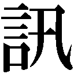ねる。
「松岡先生と付き合ってるんでしょ。結婚するの？」
「え？ ......そ、そんなことわからない」
「照れることないじゃない」と屈託なく笑う涼子を見ながら、この少女の病気を治して、夢をかなえてあげる。今はそれだけを考えようと梅子は思うのだった。
意識を取り戻した建造は、もう平気だから仕事に戻ると無茶を言い出した。自分の勤める病院に入院し、部下の医師や看護婦たちの世話になるのが耐えられなかったのだ。ベッドから飛び出しそうになる建造をどうにか押しとどめたのは、婦長の幸枝の「言うことを聞かないのなら、あれをみんなに言いますよ」のひと言だった。
ムッとしながらも、「わかった」と建造はおとなしくなる。みんなが出ていったあとも病室に残る梅子に、建造は言った。「お前も仕事に戻れ」
「お父さん、あの......この間言った、開業のことは......しばらく忘れてください」
「もう忘れた」
梅子を見ずにそう言うと、建造はゆっくりとベッドへ身を横たえた。
その日、梅子は坂田からアルバイトを依頼されたが、建造がこういう状況では行く気にもなれず、涼子のために調べたいこともあり、弥生に代理を頼んだ。「柄の悪い場所なんでしょ」と最初は渋っていた弥生だったが、「意外とお嬢さんなんだ」と梅子に挑発され、「行くわよ。行けばいいんでしょ」と承知する。
「あの......」と恐る恐る診療所に入ってきた弥生を、坂田は満面の笑みで出迎えた。
「沢田さんだね。いやー、来てくれて助かった。院内にあるものはなんでも使ってくれ。わからないことは彼女に聞いて」と目で静子を指す。
「わかりました」とうなずき、弥生は静子と会釈をかわした。
「しかし、意外だな......こんな美人が来るとはな」
出かける支度をしながら、坂田が何げなくつぶやく。
「からかわないでください」とちょっと怒り顔になる弥生に、坂田は心外そうな表情を見せる。
「からかってないよ。もっと若ければお付き合いしたいくらいだ」
「どう見てもからかってます」
「笑ってごらん」
弥生は意地でも笑うもんかと歯を食いしばる。しかし、そこは坂田のほうが上手だった。優しい瞳で弥生を見つめたまま、じっと待つ。ついに根負けし、弥生はぎこちなく笑みをつくった。
「すてきだ。今度、デートしよう」
そう笑みを残して、坂田は出ていった。
無理に上げた口角をもとに戻した弥生は、自分が少しドキドキしていることに気づき、戸惑うのだった。
安岡製作所では、旋盤を使って信郎が作業しているのを、信郎の彼女・咲江がうれしそうな表情で眺めている。咲江は仕事に熱中している信郎の顔が好きだった。ずっと見ていても少しも飽きない。
「ごめんな。もうちょっとだから」
「いいの」と答え、咲江は何げなく作業台に載っていた部品を手にとった。すると、手がすべって部品が転げ落ちた。「ああっ、ごめんなさい」
慌てる咲江に、「いいよ。置いといて」と信郎は笑みを向ける。
「うん」と咲江が部品を作業台に戻したとき、工場の入口辺りでガタンと大きな音がした。続いて、「痛っ！」と声が上がる。
信郎と咲江が駆けつけると、外に置いてあった部品の箱につまずいた梅子が、慌てて片づけていた。
「梅子。何やってんだ」
「ううん。べつに」と梅子は立ち上がる。工場に明かりがともっていたので信郎がまだ残っているのかとのぞいたところ、咲江との仲むつまじい姿が見え、邪魔しては悪いと立ち去ろうとした。そうしたら、つまずいてしまったのだ。
決まり悪そうに苦笑する梅子に、咲江は挨拶し、先日の木島の件の礼を言った。
「木島さん、あれから少しずつよくなってます」
「そう。よかった」
「おふくろたちも梅子に診てもらって喜んでたぞ。そうだ、梅子。病院なんてやめて、この辺で町医者をやれよ」
信郎の思いつきの言葉に、梅子は不意をつかれた。「そんな簡単に言わないでよ。開業医っていうのはいろいろと大変なの。経営とか」
「経営なんて、俺が教えてやるよ」
「ノブが？ 怖いから遠慮する」
「ばかにすんな。この工場だって、最初はどうなることかと思ったけど、やってみりゃなんとかなるもんだぞ」
「工場と医者は違うの」
「何が違うんだよ」と信郎が梅子ににじり寄ったとき、地面に転がっていた部品に足が当たった。信郎はそれを拾い上げ、顔をしかめる。「落としたな!?」
「ほったらかしにするからでしょ」
「ほったらかしじゃない。置いてあったんだ」
「ごめん......」
信郎はフフンと笑い、「一個貸しだ」と上から目線で告げる。
「わかったわよ。じゃ、おやすみ」
笑みを見せ、去っていく梅子を見送りながら、咲江がつぶやいた。
「......信郎さんて、私と梅子さんで態度が違う」
「え......どう違う？」
「なんていうか......私には優しい」
「優しいほうがいいだろ」とキョトンとする信郎に、咲江は「うん」と薄く笑みをつくった。
翌日、出勤すると梅子は涼子に呼び出された。何ごとかと病室に駆けつけた梅子を、涼子は絶望の表情で迎えると、「私......もうだめかもしれない」とベッドに泣き伏した。
震える肩をさすりながら理由をねる梅子に、涼子はベッドの脇に置いていた手紙を渡そうとしたが、動揺しているのか床に落としてしまう。手紙を拾った梅子に涼子はポツリと言った。
「彼から......別れたいって」
〈君の自由奔放さにはついていけそうにない。君にはもっとふさわしい人がいると思います〉
手紙を読んだ梅子は、勝手な言いぐさに憤る。
「そうよ。書いてあるとおり。あなたには、もっとふさわしい人がいるわ、きっと」
「いいかげんなこと言わないで」
「ごめん。それにしても、あなたが入院してるときにこんな手紙をよこさなくてもいいのにね」
「退院したあとなら、ぶん殴られると思ったのよ。よし、退院したら、ぶん殴ってやる」
ベッドの上で拳を握る涼子を、「去っていった人を追いかけても、仕方ないわよ。それより未来を見ないと」と梅子は諭す。そして、ふと我が身をかえりみた。
「......未来か......ちゃんと未来を見てるのかな、私」
「松岡先生と何かあったの？」と涼子は涙で濡らした顔で梅子を見返す。
「ううん。そうじゃなくて......仕事のこと」
「話してごらん。話すと楽になるわよ」
グスグスと鼻を鳴らしながら、そんな大人びたことを言う高校生の涼子に、気がつくと梅子は悩みを打ち明けていた。
「ふーん......開業か。お父さんは、どうしてだめなんて言うの？」
「ずっとこの父がいる病院で頑張ってきて、やっと助手になれるときに辞めてしまうのがもったいないと思うからでしょ」
「どうかな。梅子先生が離れるのが嫌だからじゃないの？ 父親って、娘を嫁に出すのが嫌だっていうじゃない。それと同じじゃないの？」
そう言って、涼子は自分の話を例に出した。陸上なんて女のやることじゃないと父親に反対され、家出をしたというのだ。頭の固い父親にはそれくらいのショックを与えないと考えを改めないと主張する涼子に、「そんなことできない」と梅子は首を振る。
「父は病気なのに余計な心配はかけられないわ。もし話すとしても、父の病気が治ってから......スポーツだってそうでしょ。正々堂々とやるの」
「そうか......正々堂々か」と涼子は陸上少女の顔になる。
「うん。あなたも、終わったことは忘れて、早く病気を治して」
「わかった......並木涼子、正々堂々と病気と闘うことを誓います」
涼子はおどけてそう言うと、右手を前に出し、その手に梅子の手を重ねさせた。
ふたりの笑い声が、病室の中に明るく響いた。
昼休み、梅子が食堂で食事をしていると、弥生と山倉が連れ立ってやってきた。ふたりは梅子のテーブルにつき、食べ始める。梅子は山倉と建造の病状や患者としての態度の悪さについて話したあと、ずっと上の空で食事を口に運んでいる弥生に顔を向けた。
「どうしたの？ 今日はなんだか変だよ。もしかして、坂田医院で何かあったの？」
「え......」一瞬ためらったあと、弥生は言った。
「......坂田先生って......すてき」
「えっ」と梅子と山倉は驚く。
「なんだか、男なの......あんな人、初めて。メンツとか出世争いとか、そういうことに明け暮れている男とは全然違うわ」
つぶやく弥生の瞳は、恋する乙女のそれである。
こうして、弥生は坂田医院に通いつめるようになった。
一方の坂田は、仕事中に常に弥生の熱い視線を感じて、なんだか居心地が悪い。その視線をはぐらかすように坂田は弥生にねた。
「梅子君は、どうして都合が悪いのかな」
「仕事が忙しくて」と答える弥生の目がわずかに泳いだ。建造が病に倒れたことと開業に反対していることは黙っていてほしいと梅子から口止めされているのだ。
しかし、目ざとい坂田が弥生の逡巡を見逃すはずがなかった。
「梅子君に何かあったな......だから来ないんだ」
「そ、そんなことありません」と首を振る弥生に、坂田は顔を近づけて、そっと手を握った。
「話してくれないか」
その頃、静子は竹夫の会社で新聞を読んでいた。建造の病状を報告する松子からの電話を切った竹夫が、迷惑そうな顔で振り返る。
「新聞くらい取ってもらえよ、坂田先生に」
「そんなに邪魔ですか」
「べつに」
「......あかねさんって、どんな人だったんですか？」
思ってもみなかった名前を不意に出され、竹夫は動揺する。「......どうして知ってる」
「この間、梅子さんがチラッと」
「あのばか......」
「話してください。あなたみたいに女性に愛想の悪い人が、どうやって女性と仲よくなったのか興味があるから」
「あいにく、俺が愛想が悪いのは女性全般に対してじゃない。君に対してだ」
「どうして？」
「自分の胸に手を当てて考えてみろ」
静子は素直に胸に手を当て、「......全然心当たりがない」と答える。
竹夫はあきれ顔で静子を見つめる。「いいのか、仕事は」
「坂田先生目当ての女性が来てるから、私は気を利かせてるんです」
「そうなのか。どんな人」
「梅子さんの友達だとか」
「え......誰だろ」
興味を引かれた竹夫は、静子と一緒に坂田医院へと向かった。
弥生が梅子のことを話し終えたとき、竹夫と静子が診療所に入ってきた。弥生は慌てて坂田のそばを離れる。弥生に会釈し、竹夫は険しい表情の坂田に理由をねた。
「梅子君が開業したいと言ったのに、オヤジが反対したらしい」
「え、梅子が開業......」
「......あのオヤジ」
「父に会ったんですか」
「この間、ここに偵察に来たよ」
そう言って坂田は何か思案するように黙り込んだ。
宿直明けの梅子がぼんやりとした頭を振りながら廊下を歩いていると、前から知った顔が集団でやってくるのが見えた。芳子、正枝、松子、おまけに竹夫の姿まである。
「みんな......どうしたの？」
ポカンとする梅子に、一同は建造に抗議をしに来たのだと言う。どうやら梅子の開業の件が弥生が坂田に教えたことから竹夫に伝わり、さらに竹夫が電話で芳子に話したらしい。
「とにかく、私たちは梅子の味方だから」
芳子の言葉にうなずき、ずんずんと廊下を歩いていくみんなを、梅子は慌てて追いかける。
「ちょっと待って」
梅子は空いている会議室を見つけると、「とにかく入って」とみんなを引き入れ座らせると、真剣な顔で一同を見回し、言った。
「開業の話は、今はいいの」
「でも......」と口を挟みかけた芳子を梅子は目で制す。
「開業したいっていう気持ちが消えたわけじゃないのよ」
梅子は自分の中の気持ちを整理しながら丁寧に説明していく。
「お父さんてよく、勝手にしろって言うでしょ。この間も、私が開業したいって言ったら、言ったの。勝手にしろって」
「じゃあ、勝手にすればいいじゃない」と言う正枝に、梅子は「ううん」と首を振る。
「今度は、ちゃんと認めてほしいの。そうか。わかった。やってみろって、応援してほしいの。お父さんは、医者としていろいろなことを教えてくれたし、この病院でもいろいろとお世話になったの。もし私が、開業医としてやっていけるとしたら、それはお父さんのおかげなの。なのにお父さんに認められないまま開業医になるなんて、私は嫌......だから、お父さんの病気がよくなったら、ちゃんと話すつもり」
梅子の話にじっと耳を傾けていた一同から、ふぅっと息が漏れた。
「なんだか、大人になったわね......梅子も」とつぶやく芳子にみんながうなずく。
よく考えたらこうして家族が顔を合わせるのは本当に久しぶりだった。「こんなことでもないと、みんなで集まれないものね」と一同は笑みをかわし合う。
家族と別れ、建造の病室を見舞った梅子は、その足で涼子の病室へと向かった。涼子は今日も元気そうで、「キャラメル、いる？」と枕元の小箱を手にとる。その手からスルリと小箱が落ちた。笑いながらキャラメルの箱を拾った梅子は、ふと以前もこんなシーンがあったなと思い返す。涼子の手に箱を戻しながら、梅子の中にある不安が頭をもたげていく。
「涼子ちゃん......腕に力が入らないの？」
「うーん......そうね......入院して、体がなまってるからかな」
苦笑しながら手を握ったり開いたりしてみせる涼子に、「そう......早く退院しないとね」と梅子はぎこちなく笑みをつくり、急いで病室を出た。
検査の結果、梅子の心配は当たった。涼子はギランバレー症候群という病気を発症していた。
梅子が病名を涼子と母親の栄子に告げると、ぴんとこないふたりは首をひねった。
「手足のしびれや筋力の低下を起こす病気でね。まだ原因がよくわかってないんだけど、風邪なんかのウイルス感染症が先行したあとに発症することが多いの。肺炎を起こしている間にかかったのね」
「......次の大会に、出られる？」
不安そうにねる涼子に、梅子は哀しげに首を横に振る。
「......症状が出て、ひと月経っても治らないということは......このまま完治しない可能性が高いの......陸上はあきらめて」
涼子の顔に衝撃が走る。
「普通に走るくらいはできると思う。でも、大会で優勝を目指すなんて、とても無理なの......」
「......そうなの......フフ」涼子はうつろに微笑み、つぶやいた。
「人生ってこんなこともあるんだね......恋人にふられるし......夢は壊れるし」
今の涼子にかける言葉などあるはずがない。梅子は自分の無力さに、ただただ唇を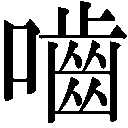んだ。
病室を出た梅子はぼんやりと資料室のドアを開けた。本棚の前で松岡が昔の資料を読んでいる。その姿を見た途端、梅子の中で何かが弾けた。
梅子はツカツカと松岡に近づくと、その胸に自分の頭を押しつけた。
松岡は戸惑いながらも、小刻みに震える梅子の肩にそっと手を置いた。
突然やってきた予想外の見舞い客に、建造はベッドの上から不審のまなざしを送る。坂田は棚に置かれた数々の見舞いの品を一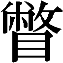し、うらやましそうに言った。
「私が入院しても、誰も来てくれないな......せいぜい二、三人てとこですか」
「......ご家族は？」
「いえ......独り身は気楽でいいと若い頃は思ってました。いや、今でもそう思ってるんですがね......しかし、梅子さんを見て、初めて思った。家族がいればよかったと......どうしてですかね。歳のせいなのか......あなたが少しうらやましい。あんないい娘さんがいて」
「いたらいたで、厄介です」
「じゃあ、ください」
「え!?」
「冗談です」
ムッとする建造に、坂田は真顔を向ける。
「とにかくこれだけは言える。あんないい娘がいるだけで、ありがたいと思ったほうがいい」
「梅子に口添えしてくれと言われたんですか」
「梅子君はそんなこと言いませんよ。たぶん、あなたの病気が治ってから、改めて話をするつもりだったんでしょう。娘が何をしようがいいじゃないですか。ヤクザと結婚するとか言うならともかく、開業医になるなんて立派なことを言うなら、よし頑張れと背中を叩いてやればいい。それをなんだ。ちょっと自分の意のままにならないからって」
「私は、勝手にしろと言ったんだ」
「そんな言い方するな。認めてやれ。逃げるな」
坂田の言葉に建造は顔色を変える。「逃げる？ ......その言い方は聞き捨てならん」
「悔しかったら殴ってみろ」
「あんた、酒飲んでるのか」
「そうですよ。酒が飲めるのがうらやましいですか」
「フン、べつに」
「糖尿なら甘いものを禁止されてるんでしょう」そう言うや、坂田はポケットから饅頭を取り出し、これ見よがしに食べはじめた。
「父親のことがどうでもよければオヤジなんかほっといて好きにするさ。梅子君は、あなたのことを愛してるから......愛してるから......」
涙ぐみながら饅頭を食べ、去っていった変わり者の町医者の言葉が意外にも自分の心に深く刺さり、建造は戸惑うのだった。
涼子が病室から姿を消した──その報告を受け、梅子は蒼白になる。まさか涼子にかぎってばかなことは考えないとは思うが、ずっと追い続けてきた夢が断たれたばかりなのだ。
病院中を捜し回った梅子は、意外な場所で涼子の姿を発見した。建造の病室にいたのだ。
ベッドの前に正座し、キッとした目でにらむ少女に、建造は困り果てていた。
「涼子ちゃん、何してるの」
涼子に近づく梅子に、「いろいろな客が来る日だ」と建造はムスッと言う。
「座り込みです」と涼子は答える。
「梅子先生は、私の夢のために必死になってくれた......少しはお返ししたいから。自分の次の目標が見つかるまでは、梅子先生の手伝いをするのが私の目標なの」
「涼子ちゃん......ありがとう。もういいから......もう十分」
梅子が涼子に微笑んだとき、「涼子、何してるの」と栄子が入ってきた。
「さ、お母さんと病室に帰って」
梅子に優しく言われ、涼子はゆっくりと立ち上がった。出ていくふたりを見送り、梅子は建造のそばへと戻ってきた。
「私の患者さん。陸上をやってたんだけど、もう運動ができそうにないってわかったの。一緒に頑張ろうって話してたから......自分の夢がだめになった分、私のために何かしたいって思ってくれたんじゃないかな」
「そうか......お節介な連中ばかりだな」
「......ごめんなさい。今は私のことはいいから、お父さんは自分の病気を治すことだけ考えて」
そう言って踵を返した梅子の背中に、建造は言った。
「やってみろ」
「え......」と梅子が振り返る。
「......やってみればいい」
「えーっと、何を？」
「ばか。開業医だ」
「えっ......いいの？」
「......大変だろうがな」
「あの......勝手にしろじゃなくて？」
「やってみろと言っている」
気まずそうに顔をそらした建造に、梅子は言った。「......ありがとう」
涙で声がかすれていく。
「ありがとう......お父さん......」
以前住んでいたバラックを改装し、梅子の診療所はスタートすることになった。開業資金は、信郎に紹介された銀行から融資を受けることができた。下村家の土地と家屋を担保にすることについて、建造は断固拒否の態度を示したが、開業を認めながら資金協力をしないのは矛盾しているということに気づき、自宅を担保にすることを認めたのだ。
「みんなで寄ってたかって梅子の開業を後押しされて、どうもやられっぱなしのような気がしていた。つい、意地悪をした。私にはそういうところがある」
担保の件を了解したと梅子に伝えてほしいと松岡に言ったあと、建造はそう自省した。
「ベッドにいると、ついいろいろなことを考えて内省的になる。いいこともあるな」
「はい......私も結核で入院してるとき、いろいろなことを考えました」
「それで、そういう理屈っぽい人間になったのか」
「まあ、そういうことです」
「まあ、なんだな......梅子は、まだ頼りない......君くらいしっかりした男が、ずっとそばにいてくれるようになれば、私としても安心なんだが......」と建造はふたりの結婚をほのめかした。しかし、松岡はそういうことに関しては、実に鈍い男だった。
「たしかに、開業当初はいろいろと大変でしょう。梅子さんが必要だというなら、病院のほうはなんとか都合をつけて、手伝いに行くようにします」
見当違いの松岡の答えに、建造は「え？」と戸惑う。当の松岡は何も感じていないようだ。
「いや......では、そういうことで頼む」
「はい」と返事をして出ていく松岡を、建造は苦笑を浮かべ見送った。
ついに梅子が帝都大学病院を去る日がやってきた。食堂に、第一、第二内科の人々が集まり、梅子の送別会が催されている。梅子はひととおり全員と言葉を交わしたあと、離れた場所にポツンと立っている松岡のもとへと足を向けた。
「......いろいろとありがとう」
「礼を言われるようなことはしてないよ」
「ううん。担保のこと、父を説得してくれたじゃない」
「いや、あれはたまたまなんだ。僕は、下村先生が言うほど頼りになる男じゃない......前に、開業にいくらお金がかかるかっていう資料を渡したろ。本当は、あれを見て君があきらめてくれないかと、ちょっと期待してた。ほんの少し......君を行かせたくなかったんだ。すまない」
梅子は意外そうに松岡を見た。まさか、あの松岡がそんなことを思っていたなんて......。
「ううん......ちょっとうれしい」
「え......どうして」
......やっぱり、この人は鈍感だ。「どうしても」と梅子は微笑む。
そこへ新たな客が現れた。検査技師の岡部だ。岡部は遠慮がちに中に入り、梅子に言った。
「君がいなくなると寂しいな......」
「いろいろとお世話になりました」
岡部はうなずき、物珍しげに周囲を見回す。
「第一内科と第二内科がみんな来てるじゃないか」
「私、研修のときは第二で、今は第一。両方にお世話になったから」
「両方が、こうして一緒に何かをやるのは初めてかもな。不思議な人だな、君は」
岡部の偏屈そうな顔に笑みが広がる。
「じゃ、そろそろ下村梅子君に、挨拶をしてもらおうかな」
狭山の言葉に、食堂が拍手に包まれる。梅子は照れながら、みんなの前に出た。
「えーと......あの......」
思いはれてくるのだが、なかなか言葉にならない。厨房から漂ってくる匂いに、ふとある言葉が口から飛び出した。「日替わり定食......」
「この病院にインターンに来たいと思ったのは、日替わり定食がおいしいって聞いたからで......」
一同は爆笑し、弥生はため息をつく。「おいしかったのか」と声が飛び、梅子はうなずく。
「父は今ひとつだと言いましたが、私はおいしかったです。この何年か......毎日のように日替わり定食を食べてきて......そんなに毎日、この病院に通ってたんだなあって......。いろいろなことを勉強させてもらいました......そのご恩を、これからは町の人たちを治療することで、返していきたいと思っています......本当に......本当に......ありがとうございました」
深々と頭を下げる梅子に、それぞれの思いを込めた拍手が送られる。
ベッドの上で身を起こしていた建造は、食堂のほうからかすかに聞こえてくる拍手の音に耳を澄ませ、じんわりと胸に広がるあたたかな気持ちに目を細めるのだった。
改築作業を終えた下村医院の前に、幸吉と信郎がやってきた。どうにか診療所っぽく見える建物に、幸吉は「おー、できたなぁ」と感心する。
「みなさんのおかげです」笑顔で返す梅子に、「こっちもできたぞ」と信郎が持っていた大きな板を裏返してみせる。それは手作りの下村医院の看板だった。
「うわー、ありがとう」
「院長、下村梅子か......偉そうだな。ひとりしかいないのに」看板を眺め、信郎が苦笑する。
「これから大きくしていくんだ」と幸吉が返す。「入院患者も入れてよ、べっぴんの看護婦たくさん雇ってよ。あのオヤジが悔しがるくらいでっかい病院にしてやれよ」
「ありがとう。でも、まずはここから」
梅子は振り返り、身近な人たちの役に立ちたいと誓った日を思い出した。そしてその夢を叶える場所を、まぶしそうに見上げた。
第十五章 ちいさなの、大きな本当
診療所を始めたからといって商店や食堂のように呼び込みができるわけもなく、下村医院の記念すべき開業初日はひとりの患者も来ないまま、のんびりと過ぎていく。とりあえず受付を交代で担当することになった芳子と正枝に、様子を見に来た和子と康子が加わり、診療所は近所の寄合所のようなありさまだ。そこに康子の娘の千恵子が制服姿で顔を出した。
「千恵子、どうしたの。学校は？」
驚く康子に千恵子は答える。「気分悪いから帰ってきた」
「だったら、うちで寝てなさい」そう言って、康子はふと思いついた。「あっ、こういうときのために梅ちゃんがいるんじゃないの」
「じゃあ......診ましょうか」
記念すべき患者第一号だと、みんなが千恵子を梅子の前に座らせる。戸惑う千恵子の様子を見て、梅子はみんなを待合スペースのほうへと移動させ、診察を始めた。
体温を測り、問診を終えた梅子は、千恵子の態度から病気の種類を推測し、耳元に口を寄せた。
「もしかして、仮病？」
康子には内緒にしておくからと言われ、千恵子が小さくうなずいた。
「ごめんなさい......午後の家庭科の授業が嫌で。お裁縫......私、真っすぐ縫おうとしても、どうしても曲がっちゃって......みんなが笑うの」
昔の自分の姿と重なり、梅子は心の底から「わかる」と言った。
お願いと手を合わせる千恵子に、梅子は少し考え、そしてわざと大きな声で言った。
「風邪の初期の症状ね。お薬出しておくわ。今日は家で寝てなさい。お大事に」
「はい」と千恵子はうれしそうにうなずく。
結局、下村医院の初日は仮病の患者がひとり来ただけだった。
翌日も患者は来ず、暇をもてあました梅子は芳子に留守を頼み、外の空気を吸いに出た。なんとなく安岡製作所をのぞくと、信郎も幸吉も従業員の木下も忙しそうに働いている。少しうらやましく思いつつ、大学病院での忙しい日々を思い返していると、中で騒ぎが起こった。木下が高い場所で作業をしていて、台から落ちてしまったのだ。右手を押さえながら、「いてーっ」と顔をしかめる木下のもとへと、すぐに梅子は駆け寄った。
「梅子は内科だろ」
「そんなこと言ってる場合じゃない。連れてきて」
診療所に戻った梅子は、信郎と幸吉に連れられた木下を寝台に横たわらせ、治療を始める。普段とはまるで違う医師としての真剣な表情に、信郎は思わず感心してしまう。
木下のケガは右手首の捻挫だった。梅子の診断によると二週間もすれば仕事に復帰できるということで、信郎も幸吉もひと安心する。調子がいいだけで最初はまったく使い物にならなかった木下だが、今や安岡製作所にとってなくてはならない大切な一員へと成長していたのだ。
仕事ができず、何もやることのない木下は、昼間から康子の店「みかみ」で酒を飲んでいた。今までさんざん働いたんだから、これは神様からのご褒美だといい気分で酔っぱらっている。
そこへ千恵子が学校から戻ってきた。木下の腕の包帯を見て、「それ、梅子先生に手当てしてもらったの？」とねる。木下が「ああ」とうなずくと、千恵子は声をひそめて言った。
「梅子先生って優しいよね。昨日の私の風邪、仮病なのに黙っててくれたの」
「そうなのか」と木下の目が怪しく光る。
梅子が正枝に綿棒の巻き方を教えていると、幸吉と信郎が木下を連れてやってきた。
「梅ちゃん、もう一回こいつ見てくれ。なんだかケガがひどく痛むって言うんだ」
「え、そんなに痛むはずはないんだけど......」
「痛むものはしょうがねえだろ」と木下は梅子を診察スペースのほうへと追い立てる。向かい合って座ると、木下は梅子に顔を近づけ、ささやいた。
「そういうことにしといてくれよ。千恵ちゃんの仮病、黙っててやったんだろ。俺にも頼むよ」
「そんな......」
「ホントに痛えんだよ。いててて。あー、やっぱりひと月はかかりそうだ」
木下の声を聞きつけ、幸吉が梅子にねる。「ホントにひと月もかかるのか？」
「かかる......かもしれないし......かからない、かも......」
「どっちなんだよ」と幸吉はため息まじりに言う。
「困ったな」と信郎は頭をかいた。「実はさっき新しい仕事が来たんだ。納期は三週間......」
「やっぱりノブと俺とふたりだけじゃ無理だろ。断るか」と幸吉はあきらめ気味にこぼす。
うしろめたくなった木下は、「あの、俺......」と白状しようと口を開きかける。だが、それよりも早く信郎が言った。
「よし、ほかの人間を探そう。臨時で雇うんだ。せっかく新規のところから話が来たんだ。うまくやればこれからも仕事が来る。けど、断ったらそれまでだ」
「けどよ、そんな簡単に人が見つかるか」
「そうっすよ」と木下も焦る。「最近、景気がいいし、そう簡単に人が来るわけないっすよ」
「とにかく探してみる。キノやんは休んでりゃいいよ」
ちょっとしたなまけ心がとんでもないことになったと、木下は呆然とするのだった。
建造が療養している間、建造の患者を第二内科の医師が分担し、なんとかやってきた。しかし、どうも建造はそれを快く思っていないらしい。自分など必要ないのだとヘソを曲げられる前に、適当に困ったふりをして相談に行ってくれと狭山からお達しがあった。それを聞いた松岡は「ナンセンス」と切り捨てる。「下村先生は、自分がこの病院に必要なことくらいわかってるはずだ。変に気をつかう必要なんかないだろ」
「頭でわかっていても、気持ちの問題があるだろ」
「そう。人は松岡さんほどなんでも理屈で割り切れないの」
山倉と弥生にそう返され、松岡は「そういうものか」と納得いかない表情になる。
「そんなことより松岡さん、梅子が病院やめてから連絡とったんですか？」
「いや」
今度は弥生が信じられないという顔になる。「どうして？」
「どうしてって、別段用事もないし」
「用事がなくても、電話くらいするでしょ」
「電話とは、用事があるときにするものだろう。下村先生にも言われてるし、必要なら手伝いに行くよ」
「へえ......下村先生には、どんなふうに言われたの？」
興味深そうにく山倉に、松岡は梅子が病院を辞める際に建造に言われた言葉をそのまま伝えた。弥生と山倉はポカンとしてしまう。話を聞き終わった弥生が、おずおずと言う。
「えーと......それはもしかして、結婚のことを言ってるんじゃないの？」
「えっ、ど、どの部分が!?」
「全体が」
あっさり山倉に断言されると、松岡は頭の中で建造の言葉を反芻し、みるみる動揺しはじめた。
「結婚......僕が......梅子さんと......」
「付き合ってるんだから、可能性はあるわけでしょ」
「たしかに可能性としては......しかし、僕はまだ研究に没頭したいし、梅子さんだって、開業したばかりで、お互いに仕事のほうが」
「あのー、だからそういうことは私たちにじゃなくて、梅子と話して。とにかく電話して」
「わかった。あとで」
「今！」と弥生の強い口調に松岡は押しきられるのだった。
一方、その頃梅子も正枝から松岡とはどうなっているのか、と心配されていた。
「忙しくても、電話っていう便利なものがあるんだから、話くらいしてみたらいいじゃないの。向こうだって、梅子がうまくやってるかどうか気になってるはずだよ」
「でも......松岡さんのことだから、電話したら、用件はなんでしょうかとか聞かれそう」
「いいじゃないの。電話したいからしたのよって言ってやれば」
「そうね......あとで」
「思い立ったが吉日。今しなさい」
「うん......それじゃ」
耳に当てた受話器の向こうから、プープープーという話し中の音が聞こえる。
「はぁ」とため息をつき、松岡と梅子は同時に受話器を置いた。
求人の貼り紙を出したものの、安岡製作所に応募してくる人間はいなかった。木下はすることもなく、酒を飲んでばかりいる。「みかみ」に木下の姿を見かけた梅子は、怒った顔で戸を開けた。「木下さん、ケガ人がお酒なんか飲んで。あの工場でお世話になってきたのにどうして早く治して仕事を手伝おうって思わないんですか」
「世の中好景気で、周りはどんどん給料上がってるのに、安い給料でコキ使われて」と木下は酒臭い息で、そう返す。
「ノブのところって、そんなに給料少ないんですか」
「よくはないだろうな」と追加の酒を運んできた和也が答える。
「下丸子の工場なんて、月給九千円だぞ」
「え、そんなに」と驚いたのは梅子ではなく木下だった。工員の給料の相場がそんなにも上がっていたとは初耳だった。だとすれば、なおさら引き下がれない。
「大きいところと比べたらそうかもしれないけど......」
勢いをそがれた梅子に、千恵子がそっと近づいた。康子がほかの客の相手をしているのを確認して、小声で話しかける。「梅子先生......明日、また家庭科でお裁縫なの。だから......」
「また仮病使う気？」
盗み聞きしていた木下が、「そりゃいいや」と笑う。
「そうやって、ずっとズルばっかりするつもり？」
「だって......梅子先生だって裁縫苦手だったんでしょ。どうしてたの？」
梅子は特に何もしなかったと正直に答えた。下手くそだと先生にあきれられ、みんなには笑われた。ただ、それだけだ、と。
「何よそれ......そんなのやだ」
「でも......逃げてたって、何も解決しないよ」
「そう言うけどよ、ただ受け入れたって、何も解決しないだろ」と木下がまぜっ返す。
「そりゃそうよ......だから、何ごとも一生懸命やれば」
「一生懸命やって、うまくいったの？」
「うーん、ほとんどのことはだめだった......」
「それじゃあ、意味ないじゃない」
「でもね、医者になるっていうのだけは、なんとかなったのよ」
「どうして？」
「どうしてかな......あきらめなかったからかな。多分、あきらめないって決めたから、余計に一生懸命になれたの」
「それは梅子先生が、お医者さんになりたいと思ったからでしょ。私、裁縫の先生になりたいわけじゃないもん」
「でも、何ごとも一生懸命にやってみないと、本当にやりたいことって見つからないんじゃないかな」
「そうかな......」と千恵子は納得していない様子で、その場を去った。
梅子が家に帰ったちょうどそのとき、電話が鳴った。「ああ、松岡さん」電話をとった芳子の声に、梅子はハッとなる。受話器を渡され、耳に当てる。梅子の顔が自然にほころんでいく。
「いや、用事はないんだ。あくまで様子を聞いてみようと思って」
「そう......でも、電話してくれてうれしい」
「そう......そういうものか......で、どう？ 診療所のほうは」
「うん、なんとか......まだ患者さんは少ないけど、でもコツコツ頑張っていくつもり。そっちはどう？ 父は？ 看護婦さんたちを困らせてない？」
「だんだん患者が板についてきたみたいだよ」答えながら松岡の頭に建造の言葉がよみがえる。
「あの......僕は、その......君のそばにいる必要はあるかな」
「え......うーん......今はひとりで頑張ってみる。松岡さんだって仕事忙しいだろうし、最初から人に頼ってたんじゃ、だめでしょ」
「そ、そうだね。ならいいんだ」
「でも、ありがとう。あ......私たちって、電話で話したの、初めてかも」
「そうだな......いつも病院で会ってたから」
「なんだか、変な感じね」
「たしかに。電話というものは、用件だけ手短に言うものだとばかり思ってた。何を話してもいいんだね」
松岡らしい発言に、「当たり前じゃない」と梅子は笑った。
翌日、昼食を終えた芳子が再び受付に座るのを見て、梅子は怪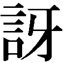そうにねた。
「午後はおばあさまの番じゃなかったの？」
「それがね、千恵ちゃんがおばあさまに頼みがあるって来て」
「え、千恵ちゃんが？」
すぐに梅子は様子を見に行く。外から居間をのぞくと、正枝が千恵子に裁縫を教えている姿が見えた。千恵子は正枝の手元を真剣に見つめ、そして自分もおぼつかない手つきで針を進めていく。見つめる梅子の顔に、自然に笑みが浮かんでくる。
「なんだよ」
梅子は木下を連れだし、「見てよ」と自分の家の居間を指さした。
「千恵ちゃんだって、頑張ろうっていう気持ちになったのよ。木下さんも仕事に戻ったら？ ノブもおじさんも、まだ新しい人見つからなくて困ってるのよ。サボって給料上げてもらうより、頑張って感謝されるほうがいいんじゃないかな」
布と針を相手に悪戦苦闘している千恵子を見て、木下がつぶやく。
「......そうかもな。よく考えりゃよ、俺が曲がりなりにも職人になれたのは、オヤジさんたちのおかげなんだ......恩返しする、いい機会だ」
「よかった」
「でもよ......ひと月かかるって言ってたのに、急に治ったら変だろ」
「だから、思ったより治りが早いってことにして......実際、今はどうなの？」
木下は包帯をとって、右の手首を回してみる。「全然」
「なんだ。すっかり治ってるじゃない」
そのとき、隣の安岡家から不機嫌そうな顔をした信郎が出てきた。梅子の隣に木下がいるのを不思議そうに見ていたが、その手に包帯がないのに気づくと顔色を変え、早足で近づく。
「なんでだよ。ケガ、ひと月かかるって」
木下は慌てて左手を押さえる。
「手が逆だよ。てめえ、ひと月もかかるっていうのはかよ」
「いや......そういうわけじゃ」
「梅子、知ってたのかよ。いいのかよ、医者がそういうことで」
「ノブ、そうじゃなくてね」
信郎は木下に向き直り、怒鳴った。「そんなに休みたいんなら、ずっと休んでろよ！」
「ああ、だったら辞めてやるよ！ こんなボロ工場。油にまみれてチマチマと作業して......うんざりだったんだ。景気のいい世の中だ、もっとかる仕事をするさ」
売り言葉に買い言葉で啖呵を切ると、木下はクルッと背を向けた。
「二度と戻ってくんなよ！」木下の背中に叩きつけ、信郎は憤然と家へと戻っていった。
自分のせいでとんでもないことになってしまったと、梅子は呆然となる。
山倉や弥生ら第二内科の医者たちが入れ替わり立ち替わり建造の病室にやってきてはアドバイスを求めてくる。狭山の入れ知恵だとわかってはいたが、その気づかいを無下にするほど建造も子どもではない。努めて機嫌よく彼らの質問に答えていた。質問の列が途絶えた頃、今度は芳子がやってきた。ようやくひと息つけると建造がホッとしたとき、松岡が顔を出した。
「あら、松岡さん。この間は梅子に電話してくれてありがとう。うれしそうでした」
「はあ」と芳子に曖昧にうなずいた松岡に、建造が言った。
「君も、俺に何か質問に行けと狭山に言われたのか」
図星だったが、もちろんとぼける。「いえ」
「そうか......じゃあ、なんの用だ」
松岡は、とっさに言った。「梅子さんのお母様がいらしてるので、様子をお聞きしようかと」
「そうそう。私も梅子のこと、聞いてもらおうと思ってたんですよ」
「どうかしたのか」と思わず身を乗り出した建造に、芳子は苦笑する。
「あら。ほうっておけばよかったんじゃないですか」
「そんなことは言ってない」
「あの子......やっていけるのか、少し心配で......人の心配ばっかりしてるんですよ」
「医者なら当然だ」
「病気以外のことも心配してるんですよ。安岡さんの工場のことに首を突っ込んだりして」
「......そう言えば、あいつはここにいたときも、そんなことばっかりやってたな」
「病院はお給料いただけるからいいですけど、個人でやっていて、ああいうことで大丈夫なんでしょうかね」
「まあ、だめならだめでしょうがない」
突き放すような建造の言葉に、芳子は眉をひそめ、すがるように松岡を見た。
どうにか信郎と仲直りさせて、木下を工場に復帰させたいと梅子は木下を説得したのだがひと足遅かった。幸吉が酒場で知り合った井上という旋盤職人をスカウトしてきたのだ。
ここにはもう自分の居場所はないと寂しい顔になる木下に、梅子は責任を感じた。とりあえず新しい仕事を見つけてあげなければと、梅子は木下を叔父の陽造に引き合わせた。
お調子者の性格は芸能界に向いていると、陽造は木下を雇うことにした。テレビの仕事ができると張り切る木下を見ながら、梅子はこれでよかったのだろうかと少し後悔する。
診療所に戻ると、松岡が訪ねてきた。仕事が早めに終わったので、様子を見に来たと言う。
診療所を閉め、梅子は松岡を連れて「みかみ」に向かった。偶然、信郎と咲江も食事に来ており、ふたりは隣の席に腰を下ろす。
「新しい人、どう？」と梅子は信郎に気になっていたことをねた。
「技術はあるし、真面目だし、言うことないよ。おかげで今やってる仕事も間に合いそうだ」
「そう......よかったね」
「いい人が来て、ひと安心ね」と咲江が会話に交ざる。「でも、木下さんは？」
「辞めたよ」
「辞めさせた、でしょ」と梅子が突っかかり、「あいつが、つまらないつくからだ」と信郎が応戦すると、ふたりは互いの恋人を差し置いて、言い合いを始めてしまった。
「だから、あの人だってそれは反省して......」
「ボロ工場だの、チマチマした仕事だの、あんなこと言われて許せるか」
「ノブが昔、おじさんに言ってたこととほとんど同じよ」
「ど、どっちにしてもな、ふたりも雇ってる余裕はねえんだ。利益を出していかないと、工場を大きくしていけねえんだよ」
「大きくしてどうするの」
「はあ？ どうするも何も......そんなの当たり前だろ。みんなそのために頑張ってんだろ」
「そんなにけたいの？ そんなに勝ちたいの？」
「そりゃ勝ちたいよ。負けたくはねえよ」
「よくわからない」
「ああ、わからないだろうな。梅子は、医者みたいな食いっぱぐれのないつぶしのきく仕事してるから、世の中の厳しさがわからねえんだよ」
そこで初めて松岡が口を挟んだ。
「食いっぱぐれがない？ 医者はそんな甘い仕事じゃない」
「甘いなんて言ってないですよ......でも、資格があるんだし、身分は保障されてるでしょ」
「まあ、そういう面はある。しかし、医者にも勝ち負けはある」
「えっ、あるの？」と梅子が驚く。
「あるだろう。論文を書いて優劣を競うことはあるし、常に業績を競ってるんだ」
「そうなんですか......医者も大変なんですね」信郎は松岡に初めて共感を覚えた。
「まあ、そうです。お互い、頑張りましょう」
笑みを浮かべて握手する男ふたりに、梅子はなんだか納得できない。
そのとき、不意に咲江が大きな声を出した。
「男って......男って、本当に嫌！」
梅子と信郎と松岡は、目を丸くして咲江を見つめる。
「うちの父だってそう。いくらかったの損したの、勝ったの負けたのって、もう、うんざり！」
怒りをあらわにし、咲江はワッと泣き伏してしまう。
どうしていいかわからず、三人は顔を見合わせた。
「さっきはごめんなさい......」
診療所で梅子と向かい合った咲江は、申し訳なさそうに頭を下げた。ここはとりあえず女同士で話したほうがいいと、梅子が咲江を連れてきたのだ。
「ちょっとね......参加したかったの。信郎さんと梅子さんがあんなふうにポンポンと言い合いするのを見て、悔しかったの。私、信郎さんとケンカしたことないんです」
「いいじゃない、ケンカしないなら」
「うちの父も、最近信郎さんのことが結構お気に入りで」
「なら、もっといいじゃない」
「でも、最初は反対してたんです。あんなちっぽけな工場の倅なんて、って言ってて......でも、景気がどんどんよくなって、信郎さんが工場を大きくしていくっていうのを聞くと、急に意外に見どころがあるなんて言い出して......結局、お金でしか人を判断しないんです。私はお金なんてどうでもいいんです」
「本当にノブのことが好きなのね」
咲江は「はい」と照れながらうなずく。
「......ノブのどういうところが好き？」
「うーん......正直なところかな」
「正直か。そうね......上にばかがつくかもしれないけど」
ふたりが笑い合ってる頃、「みかみ」に残った信郎と松岡は酒を酌み交わしていた。
「女ってのは本当に厄介ですよね。梅子は、あんなふうに急にキーッとなったりしないな」
「梅子さんのことを子どもの頃から知ってるんですよね。昔からああいう感じですか？」
「ああいう感じです......ほとんど変わってませんよ。いや、ちょっと大人になったかな」
「そうですか」
「いや......」と信郎は考え直す。「すごく変わった......梅子が医者になるなんて想像できなかった。あいつ、何やってもだめで......俺だって大して自慢できるようなできじゃないし、梅子とはだめなもん同士、励まし合ってなんとかやってきたというか」
「そうなんですか」
「梅子も、よくひとりで診療所を開くとこまできたもんだ......けどあいつ、すぐ人のことばっかり心配して......今だってうちの工場のことに首突っ込んで」
「さっきの木下さんがどうこうっていう話ですか」
「そうなんですよ」
「僕には何も話してくれないんだな」と松岡はひとり言のようにつぶやく。「まだまだお互いわかり合えてない......結婚の話は時期尚早か」
「え？ け、結婚？」
信郎が松岡を問いただそうとしたとき、「大変だ！」と幸吉が店に飛び込んできた。
井上が急に工場をやめたいと言い出したのだ。理由をねると、驚いたことに、和子にひと目惚れしてしまったからだと言う。幸吉は、そんなことは全然気にしないからと言ったが、生真面目な井上は、職人が職場の女将さんに惚れるなんて絶対にあってはならないことだと譲らない。結局、井上は去り、納期を目の前にして、安岡製作所はまた人手不足になってしまった。
信郎たちの窮状を知った梅子は、だめもとで木下に戻る気はないかとねたが、新しい仕事が楽しいので、と断られてしまった。しかし、「このまま恩返ししないままでいいの？」という梅子の言葉は、木下の胸にチクリと刺さった。
トボトボと戻ってきた梅子は、診療所のドアを必死に叩いている男に気づき、駆け寄った。
「どうしました？」
「そこの工場の者です。うちの従業員が急に苦しみ出して......」
「わかりました」
「ここの先生は......」
「私です」と梅子は診療所のドアを開けた。男は一瞬驚くが、すぐに「今、連れてきます」と踵を返した。
連れてこられた患者は五人。工場主の近藤に事情を聞くと、夕食後に苦しみ出したという。
「食中毒でしょうね」
「救急車呼ぼうとしたら、誰かがすぐ近くに診療所ができたっていうもんで......しかし......」と近藤はあらためて梅子を見つめる。
「救急車を呼びましょう。来るまで応急手当をします」
「お願いします」
梅子は芳子に救急車の手配を頼むと、さっそく処置に取りかかった。診療所開業以来初の重病人、しかも一気に五人である。梅子は苦しむ患者たちに声をかけ、芳子と正枝に指示し、必死に処置を続けていく。
やがて一台の救急車が到着した。しかし、一台ではふたり運び出すのがやっとだ。
「あと二台は」と梅子は救急隊員にねる。
「今向かってますが、出払ってたもので、もう少し時間がかかると思います」
「......わかりました」
救急車を見送り、梅子は再び治療へと戻る。そこに木下がやってきた。
「あっ、木下さん！」
「どうも......」と木下は戸惑ったように会釈する。なんだか大変なときに来てしまったようだ。
「木下さんも手伝って」
「あ、いや、俺は......オヤジさんの工場を手伝おうと思って」
「陽造おじさんのほうは？」
「辞めさせてもらいました。俺はやっぱり、工場の仕事が好きだし......先生の言うとおり、恩返ししたいし......」
「じゃあ、ここはいいから、行って」
「いや......俺......あんたに間に入ってもらおうかと思って」
「そんな暇ないの。見ればわかるでしょ」と、つい語気が荒くなる。
「ああ......けど......」
「自分のことは自分でやるっ！」
「はいっ！」
納期を翌日に控え、信郎と幸吉は必死に作業していた。そこに和子が報告に来た。
「梅ちゃんのところが、なんだか患者さんで大変なことになってるよ」
「こっちだって大変なんだよ」と工作機械から顔も上げずに信郎が答える。そのとき、フラッと木下が工場に入ってきた。驚く信郎と幸吉に何も言わず、木下は空いた旋盤の前に立つ。
「何しに来た」
ねる信郎とは目を合わせず、「そんな話はあとで」と木下は作業を始める。
「許したわけじゃねえからな」
「いいから。今はやらしてください」
「しょうがねえな......」と信郎も自分の作業に戻る。
そんなふたりに、幸吉はフッと笑い、「よし、やるか」と機械に向かった。
下村家の居間で、梅子が電話で話している。坂田から治療のアドバイスを受けているのだ。
「はい......重症な患者には強心剤や吐き気止めを打ちました。あとは楽な姿勢をとらせて様子を見てます」
「そうか。当面の処置としてはいいだろう。あとは水分を絶やさないように気をつけるんだ」
「わかりました」
診療所に戻った梅子は、横になっている患者たちの様子が落ち着いてきたのを確認し、「ひとまず、これでいいわ」と芳子と正枝に言った。ふたりは「ふぅ」と大きな息をつく。
「大丈夫なんでしょうか」とまだ心配そうな近藤に、梅子はうなずく。
「命に別状はないと思います。あとは病院で原因菌を同定してもらえば......」
そこに、「梅ちゃん、救急車が来たよ！」と康子が飛び込んできた。
「よかった......」と初めて梅子の顔に笑みが浮かんだ。
やがて救急隊員たちが入ってきた。迅速に搬送作業を始める彼らの姿を見ながら、梅子は安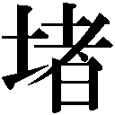のあまり床に座り込む。
「全員病院に運ばれました。なんとか大丈夫みたいです」
下村家に戻ると、梅子はさっそく坂田にそう報告した。
「そうか。よかった。おめでとう。今日が下村医院の本格的なスタートかもしれないな」
「はい......」
「医者にはいろんな医者がいていい。自分の色を出せばいいんじゃないか。俺もそうしてる」
「そうですね」と梅子は受話器の向こうの坂田に強くうなずく。窓からは朝の光が薄く射している。いつの間にか、夜が明けていたのだ。
診療所へ戻ろうと家を出る。途中、工場をのぞくと、信郎と木下が並んで眠っていた。その横では幸吉が大の字になって大きないびきをかいている。どうやらこっちの作業も終わったようだ。梅子が目を細めて見ていると、和子が隣に立った。
「梅ちゃん、ありがとうね......木下さん、梅ちゃんが骨折ってくれたそうじゃないの」
「ううん、私は何も。さ、診療所、開けないと」
梅子が戻ろうとしたとき、診療所のほうから「先生、どうも」と近藤がやってきた。
「あ、どうでした？」
「こちらで応急処置していただいたおかげで軽く済んだと病院の先生がおっしゃってました......本当にありがとうございました」と近藤は深々と頭を下げる。
「いえ。医者ですから」
「近くにお医者さんができてよかった......えーと、お名前は......下村先生ですか」
「あ、はい」
「下村先生ねえ。なんだか変なの。梅ちゃんでいいのよ」と和子が横から口を挟む。
「しかし、先生を名前で呼ぶわけにも」
「じゃあ、梅ちゃん先生」と今度は康子が口を挟んだ。
「梅ちゃん先生、ですか」
「えー。でも、いいわね」と嫌がる素振りを見せつつも、親しみやすい感じが、ちょっといいなと思う梅子だった。
第十六章 ふたつの道
梅子の診療所は少しずつ患者も増え、軌道に乗りはじめた。そうなってくると問題は看護婦である。芳子や正枝では、簡単な手伝いはできても医療知識を要する仕事は難しい。これまでは患者が少なかったからやってこられたが、今後はそうもいかなくなるだろう。
相沢八重子が下村医院にやってきたのは、ちょうどそんなときだった。八重子は、建造がまだ研修医だった頃の帝都大学病院の婦長で、建造に医療現場の厳しさを叩き込んだ恩師ともいえる存在だった。戦時中は志願して軍の医療班にも加わった職人肌の看護婦である。去年、看護婦を引退したのだが、つい先日建造から久々に連絡があり、「娘の力になってほしい」と頼まれたのだという。
建造からまったく話を聞かされていなかった梅子は最初戸惑ったが、これほどの技術と経験を持った看護婦にめぐり会うチャンスなど今後あるはずもない。喜んで八重子を迎え入れた。
鋭い目つきをした八重子は、すぐに診療所の設備や治療器具の不備を指摘し、これは手強い人が来たぞと背筋をピンと伸ばす梅子だった。
梅子との結婚を現実問題として考えることにした松岡は、とりあえず結婚のなんたるかを知ろうと書物で勉強しはじめた。松岡らしいアプローチではあるが、そんな頭の固さでは結婚はまだまだ先のことになりそうだと弥生はため息をつく。
弥生は弥生で坂田医院のアルバイトを続けており、山倉はそれが気に入らない。もう結構な歳らしいのに弥生を夢中にさせ、梅子に開業を決意させた坂田という男──結婚うんぬんの前に、そういう男を放っておいていいのかと山倉にかなり私情の混じった苦言を呈され、松岡は考え込む。すると、慌てた様子の看護婦が医局に入ってきた。松岡の担当患者の早野新造が退院すると言いだしたのだ。新造は六十代半ばのがん患者だ。松岡はすぐに病室へと向かった。
「早野さん、退院ってどういうことですか」
妻の妙子に手伝わせながら退院の準備をしている新造に、松岡は問いただすようにねた。
「どういうも何も、どうせ死ぬなら自分の家の畳の上で死にたい。そういうことですよ」
「まだ死ぬとは」
「相当進行してるんでしょ......私の肝臓のがん」
「治療によって助かる可能性があります」
「どのくらい？」
「数字ではっきり言うことは......」
「なら、いいですよ......これまでいろいろとありがとうね」
松岡は新造を説得するための言葉を探したが、結局、それ以上何も言えなかった。
仕事を終えた梅子が家に戻ると、松岡が来ていた。芳子や正枝にあれこれと指示され、何やら力仕事を手伝わされている。「やっぱり、男手があるといいわね」と正枝はご満悦だ。
「実は......君に仕事のことで話があって」
手伝いを終えた松岡は、梅子と向き合うとそう切り出した。
「僕が担当していた肝臓がんの患者がいてね。早野さん。君も知ってるだろう」
「ああ。夏頃から入院してた人」
「あの人が、止めるのも聞かずに退院してしまったんだ。どうせ死ぬなら畳の上で死にたいと」
「そう......」
「人情としては、そういうものなんじゃないの？」と正枝が横から口を挟む。
「しかし、病院で治療に専念すれば、助かる可能性がゼロではないんです」
松岡はそう言って、新しい抗がん剤による治療法を力説する。話を聞き終えた梅子は、なぜ松岡が早野の話を自分に聞かせるのか理由をねた。松岡は、早野の家が下村医院の近所なので、梅子に在宅治療をやってもらいたいのだと言った。
「で、君に頼みなんだが......早野さんを、ただ診るだけじゃなく、あの人が病院に戻るように説得してほしいんだ。医者としては、治る可能性がある患者には、あきらめずに治療を受けるように説得する義務がある。でも家に戻ってしまえば、それができない。だから君に頼みたいんだ。僕の尻ぬぐいを君に頼むようで心苦しいが......」
「そんなこと気にすることない。わかったわ、やってみる」
「ところで......坂田さんという医者のことなんだけど」
「坂田先生がどうかしたの？」
問い返されると、坂田について何をどうけばいいのかわからない。「いや......なんでもない」と話を打ち切った松岡に、梅子は怪そうなまなざしを送る。
翌日、梅子はさっそく新造の家へ往診に出かけた。診察を受けながら新造は窓の外の桜の木に目をやり、寂しそうにつぶやいた。「あの桜が咲くのは、もう見られないんだな......」
梅子は顔を上げ、新造を見つめた。「......きっと見られます。来年も、再来年も」
「ほう、そうか」
「病院に戻って、治療を受ければ......だから、病院に戻ってください」
「もういいんだ......そのことは病院でも話した」
「でも......まだ生きられるかもしれないのに、あきらめていいんでしょうか......」
「これ以上生きたって、何があるわけでもない」
「そんなことありません。生きていれば、まだまだいいことがあります。少しでも生きる努力をすべきなんじゃないでしょうか」
「じゃあ、それを証明してみせてくれるかな」
予想外の言葉に、梅子は戸惑う。
「あなた、先生を困らせるようなこと......」とお茶を運んできた妙子が新造をたしなめる。
「俺は聞いてるだけだよ」
「......私は、どんな人でも前向きに頑張れば、きっといいことがあると思ってきたんです」
梅子は考えた末に、そう答えた。
「そうかな......世の中には、努力したってだめなことはあるんじゃないのかね」
「そうですね......でも、結果に関係なく、頑張ることには価値があるんじゃないでしょうか」
「ふーん、そんなこと誰が決めたんだね」
「誰も決めてません」
「じゃあ、いいじゃないか。頑張らなくても」
「でも......」と梅子は懸命に言葉を探す。「小説や映画の中でも、主人公はみんな必死に頑張るじゃないですか」
「それはそうしないと話が盛り上がらないからだろ。推理小説で、探偵が謎を前にして、わからないからもういいやなんて言ってあきらめたら、つまらないだろ。しかし現実は違う。解決しないままの問題がいたるところにあるじゃないか」
「そうですね......あ、そうじゃなくて」
結局、人生の荒波にもまれてきた新造を説得するだけの言葉を持たない梅子は、すごすごと引き下がるしかなかった。
人はどうしたら生きる希望がわいてくるのだろう。芳子は、やっぱり子どもの成長が親にとって一番の生きる楽しみだと言う。べつに偉くならなくていい。子どもたちが自分なりの幸せを見つけて、できればそれをそばで見守っていたい。それが親の望むことなのだ、と。
しかし、妙子に聞いたところ早野家に子どもはいないらしい。
「でも、子どもがいないならいないで生きがいはいくらでもあるわよ」と正枝は言う。「『ナポリを見て死ね』とかいう言葉があるでしょ。それをするまでは死ねないというようなこと」
梅子は正枝の言葉をそのまま受け取り、さっそく翌日早野家を訪れた。診察の日でもないのにといぶかる新造に、梅子は『日本の風景』という写真集を取り出して、見せる。
「これは北海道の摩周湖。日本で一番透明度の高い湖なんですって。こっちは阿蘇山。世界でも最大級の火山なんです。行ってみたくないですか？」
新造は景色にはたいそう感心したが、「どうせ、病気じゃ行けない」と首を横に振る。
「だから、病院に行って治療するんですよ。元気になれば、いろいろなところに行けますよ」
「うーん、やっぱりいい」
「どうしてですか」と詰め寄る梅子に、新造は本棚から自分のアルバムを取り出す。
「俺は戦争前まで、船乗りをやってたんだ。世界航路でな、仕事で世界中のいろいろなところに行った」とアルバムを開いて見せる。
「ここはシンガポール。こっちは上海だ」
珍しい異国の風景の中、若々しい新造が楽しげに微笑んでいる。
「これはインド。インドでは手のひらに乗るくらいの小さな象を見た」
新造が指した写真には、本当に新造の手の上に象が乗っている。
「あっ、ホントだ！」と驚く梅子に、新造は笑う。「だよ。これはインチキ写真だ」
遠近法を利用したトリックにまんまと引っかかり、梅子は口をとがらせる。
「ハハハ。ほかにもいろいろあるぞ」
「......見せてもらってもいいですか」
梅子はアルバムを受け取り、ページをめくっていく。すると、空白のページがいくつかあるのに気がついた。明らかに写真をはがした跡がある。不審げな様子の梅子に気づいた新造は、さりげなくアルバムを取り返し、言った。
「いずれにせよ、珍しいものはさんざん見た。もう十分なんだよ」
その日、坂田医院を松岡と山倉が訪れていた。坂田のことが気になって仕方がない山倉が強引に松岡を誘ったのだが、松岡自身、一度この医院を見てみたかったのだ。
約束もなくいきなりやってきたふたりに、弥生は露骨に嫌な顔をしながら、「梅子の恋人なんです」と松岡を坂田に紹介する。
「ほう、この人が」と坂田はしげしげと松岡を見つめる。「で、彼女とはうまくいってるの？」
「何をもってして、うまくいくというのかにもよりますが」
「何をもっても何も、付き合ってて楽しいかどうかだよ」
「楽しさという概念は、主観的なものと、社会的にそれが楽しい行為として位置づけられているかどうかの──」
坂田は松岡の言葉をさえぎり弥生にねる。「こういう理屈っぽい偏屈な男なのか」
「そうです」
「梅子君はどうも問題のあるところに自ら突っ込んでいくようなところがあるからな」
納得したようにつぶやく坂田に、「どういう意味でしょうか」と松岡が不機嫌そうにねる。そこに、坂田の馴染みの水商売の女、ミユキとユカが騒々しくドアを開けて入ってきた。ふたりに腕をとられた坂田はご機嫌に、「君たちも行くか」と松岡と山倉を誘う。
ムッとして「結構です」と返す松岡のポケットに、「今度いらしてね」とミユキが店の名刺をねじ込む。女たちに挟まれて出ていく坂田の背中を見送りながら、「あの人が梅子さんに影響を......？」と松岡は首をひねるのだった。
仕事が終わって「みかみ」に立ち寄った梅子は、ぼんやりと新造のことを考えていた。そこに信郎と咲江が入ってきた。「梅子、何暗い顔してんだ」と信郎が寄ってくる。
「いいわ。明るいふたりを暗くしちゃ申し訳ないから」
「どうしたんですか？」とねる咲江に、「早野さんのこと」と康子が答える。
「船乗りの早野さん？」
「え、知ってるの？」驚いた梅子が咲江にねる。
「ええ。女学校の頃、早野さんの娘さんにお裁縫を教えてもらったの」
「そう......ええっ、娘さんがいるの？」
「ええ......小夜子さんていうの」
新造に娘がいた......新たな事実に梅子は驚きを隠せない。
「お父さん、航海で家を空けることが多かったから、仕事で行った外国からしょっちゅう写真を送ってくれたんですって......娘さんが寂しい思いをしないようにって」
「......その小夜子さんは、今どこにいるの？」
「それが......何年か前に、急にお裁縫はもう教えられなくなったっていう連絡が来て......でも、お嫁に行くっていう話でもなかったし......何か事情があって、家を出たみたいなんです」
「そう......」
梅子の脳裏に、早野家のアルバムの、写真のはがされた空白のページがよみがえる。
竹夫の会社に静子が訪れるのは、もはやほぼ日課のようになっていた。静子が来ると森下ら竹夫の部下たちは気を利かせて、何かしら理由をこしらえて外出するのだ。
「変な気をつかうな」と出ていく森下に声をかけ、竹夫は「なあ」と静子に向き直る。だが、今日の静子はなんだか様子がおかしい。思い詰めたように竹夫を見つめ、言った。
「ありがたいです。ふたりになりたかったから」
ずんずんと近づいてくる静子に、竹夫はたじろいだ。「な、なんだよ」
「......お願いがあるの」切羽詰まったような瞳が、竹夫をとらえる。
「何......」
「お金を貸してください」
「えっ......いくら」
「一万五千円」
「どうして俺に......坂田先生には」
「坂田先生はそんなお金持ってないわ。それに先生には余計な心配かけたくないし」
「俺にはいいのか」
「心配してくれるの？」と静子は竹夫の目をのぞき込む。
「そりゃ、急に金貸せなんて言われたら......何にいるんだ」
しかし、静子は「理由は聞かずに貸して」と無茶なことを言う。
「田舎のお母さんが病気だとかいうんなら貸してやるよ。でも男に貢ぐとかいうなら貸せない」
「そんな男いないわ」と静子は顔をそらす。
「じゃあ、なんだよ」
「......いいわ、もう」
「金くらいある。ケチで言ってるんじゃない。ただ、金の貸し借りをすると人間関係が、なんていうか、他人行儀になるだろ」
「元から他人行儀じゃないの？ 私たち」
その言葉に竹夫は少し傷ついた。そのことに苛立ち、言った。「わかったよ。貸してやるよ」
部屋の隅にある小さな金庫から金を出すと、竹夫は静子に「はい」と差し出した。
「ありがとうございます」と静子は他人行儀な感じで頭を下げ、金を受け取った。
「さて、今日は何か面白い本は持ってきてないの」
診察を終えた梅子をからかうように新造が言った。
「ありません。それより、早野さんのアルバムをもう一度見せてもらっていいですか」
「ああ、いいよ」と新造は出しっぱなしにしていたアルバムを梅子に渡す。
真剣な顔で写真に見入る梅子に、新造はねる。「この間見ただろう。そんなに珍しいか」
「いえ......想像しながら見てるんです。早野さんが、どんな気持ちでこの写真を撮ったのかなって。ここに写ってる早野さん、みんな笑顔......」
「そりゃ、写真に仏頂面で写るヤツはそういないだろう」
「お父さんは元気でやってる、そう言ってるんですね......」
「え......」
梅子はアルバムから新造へと視線を移す。「そう伝えたかったんですね。小夜子さんに」
「......どうして小夜子のことを」
「たまたま聞いたんです。小夜子さんに見せるために、この写真を送ってたんでしょう？」
新造の表情がみるみる険しいものに変わっていく。梅子の手からアルバムを奪い取ると、きつい口調で言った。「帰ってくれ」
そして新造は布団をかぶり、梅子に背を向けた。
「......早野さん」
梅子と八重子が玄関で靴を履いていると、見送りに出た妙子が言った。
「どうしてですか。どうしてそんなにうちのことをかき回すんですか」
「私、そんなつもりは......」
「失礼します」と妙子は硬い表情のまま、奥へと引っ込む。
「あの奥様のおっしゃるとおりです」
医院に戻ると、八重子は無表情で前を見すえたまま、梅子に言った。「人が忘れたいと思っている過去をほじくり出すということは、心に麻酔なしでメスを入れるようなことかもしれないんです」
八重子の言葉は、梅子の心にグサリと刺さる。
世の中には、過去にとらわれて前に進めない人たちがいる。新造もたぶんそのひとりだ。自分はそういうことはよくないとずっと思っていた。人は前を見て生きていくべきだ、と。
でも......と梅子は思い直す。本当にそうなのだろうか......？
翌日、仕事を終えた梅子は早野家を訪れた。昨日の非礼をどうしても詫びたかったのだ。
「主人はもう休んでおりまして」と言いながら、妙子は梅子を客間へと上げた。
「余計なことをして、すみませんでした」頭を下げる梅子に、妙子は不思議そうにねる。
「どうしてあなたは......私たちのことをそんなに」
「私はただご主人に、病院に戻って治療を受けてほしいと思って......でも、今はそれが正しいことなのか、わからなくなって......病気の苦しみも、心の苦しみも、どっちもつらいことですよね......なのに私は、病気を治してほしいばっかりに、ご夫婦の心をつらい目に遭わせてしまったんですね......ごめんなさい」
「......ありがとうございます。そのお気持ちだけで十分です」
妙子はそう言って、優しい目で梅子を見つめた。「......うちの娘とよく似てるわ」
「え......」
「あの子も、真っすぐな、気持ちの優しい子だった......」
妙子は少し迷い、そして口を開いた。「あなたには聞いてほしい。娘の小夜子のことです」
「はい......」
「主人は家中のアルバムから小夜子の写真をはがして捨てろと言いました。でも私は......どうしても捨てられずに、一枚だけ」とポケットから一枚の写真を取り出し、梅子に見せた。
「娘の小夜子です」
何度も何度も取り出して見たのだろう。すり切れ、傷んだ写真に若い女性が写っている。
「......何があったんですか？」
「戦争が終わってすぐの頃です。娘は勤めに出た先で出会った人と付き合いはじめました。前田さんという人で、とても誠実で優しい人でした......あるとき、主人が戦前に船に乗ってあちこち行ったと自慢を始めたときです。前田さんは、主人の仕事を軍の力を借りた金けだとか、侵略の片棒を担ぐような仕事だとか、批判を始めたんです」
「......本当にそうなんですか？」
「たしかにそういう面はありました。でも主人はただの機関士でしたから......」
「それで？」
「主人は船乗りの仕事に誇りを持っていましたから、すごく怒って、謝れと言いました。結局、主人と前田さんは決裂してしまいました。主人は、あんな男とは別れろと小夜子に言いました......小夜子も板挟みになってずいぶん苦しんだようです......でも、結局あの子は......前田さんを選んだんです」
「......あの......小夜子さんは、今は......」
「さあ......あれ以来、すっかり音信不通に......」と妙子はうつむく。
「主人は仕事柄、長い間家を空けることが多かったんです。引退したら、うちで小夜子とゆっくり過ごすんだって楽しみにしてました......戦争も終わって平和になって、やっと主人の夢がかなうと思ったのに......」
涙ぐむ妙子を見ながら、梅子は心から思った。
ふたりを娘さんと再会させたい──と。
小夜子が勤めていたのが商事会社だったと聞き、梅子は竹夫に相談を持ちかけた。また人捜しかと顔をしかめるが、妹の頼みを無下には断れない竹夫だった。報酬にビーフステーキをごちそうすることを梅子に約束させたとき、静子がやってきた。
静子は梅子と挨拶を交わすと、竹夫に、「これ、一万五千円」と封筒を差し出した。
「あれ？ もういいの？」
「はい。ありがとうございました」と素っ気なく頭を下げ、静子は出ていく。すぐに梅子はあとを追った。坂田医院の前で追いつくと、静子にねた。「どうしてお金が必要だったんですか」
竹夫には内緒にすることを約束させ、静子は答えた。
「昔の男が急に現れて、金に困ってるって泣きついてきたんです。でも、お金を渡しに行ったら、つまらないケンカで警察に捕まってました......だから、必要なくなったんです」
「そうですか......よかったですね......って言っていいのかな」
「いいんです。よかったんです。もう忘れたい男だった......つきまとわれるくらいなら、手切れ金のつもりで渡そうと思ってたんです」
「坂田先生には......」
「先生に相談したら、俺がなんとかしてやるって言うに決まってるでしょ」
そこに背後から足音が聞こえ、静子はハッと振り返る。怒ったような顔の竹夫が立っていた。
「なんだよ、それ」
「立ち聞き？」
「千円多かったから」と竹夫は札を差し出す。「利子よ」と静子は突っぱねる。
「俺からは金を引き出すだけか」
「引き出すなんて。ちゃんと返したでしょ」
「心外だ。それじゃ、俺がせいぜい金貸すしか能のない頼りない男みたいじゃないか」
本気で怒っている竹夫に、静子は戸惑う。
「ごめんなさい」と背を向け、静子は診療所へと戻っていく。見送る竹夫に梅子は言った。
「私......静子さんが竹夫兄さんにはわけを話したくなかった気持ち、なんとなくわかる」
「なんだ」とねる竹夫に、「知らない」と梅子も去っていく。
「なんだよ......」腑に落ちないという表情のまま、竹夫は梅子の背中を見送った。
人の気持ちは理屈では動かない──新造のその後を電話でねたときに、松岡は梅子にそんなことを言われてしまった。梅子との結婚を真剣に考えるのならば、結婚の研究をするよりも人の心の機微を察することができない自分の欠点をどうにかしなければいけないのではないか......そんなことを考えた松岡は、意外な場所に姿を現した。
間接照明がドレス姿の女性たちを妖しく照らす店内、ミユキとユカの間に居心地悪そうに座る松岡の姿に、坂田は驚きの声を上げた。「どうして、ここに......」
「......こういうところで女性と語らいながら飲むと、何かが変わるのかと思いまして」
坂田は、「じゃあ、語らおう」とうれしそうに松岡の正面に座る。自分は人の心がわからない。たぶん梅子のことなど何一つ理解していないのだと嘆く松岡に、坂田は言った。
「男と女はそうそう理解し合えるもんじゃないよ。理解し合えないから起こるあれこれを楽しむのが人生ってもんじゃないか。ま、気長にやることだ」
「はあ......あ、いや、問題は僕たちだけのことじゃないんです。実は......僕が担当していた肝臓がんの患者が治療の続行を拒否して、退院してしまったんです。自宅の畳の上で死にたいと」
治癒の見込みをねる坂田に、まだ試していない治療法があるのだと松岡が答える。
「ま、わずかな可能性に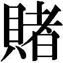けて苦しい治療をするより、家で死にたいという気持ちはわかるな。あくまで治療を受けろなんて、医者のエゴじゃないのかな」
「患者を治すことが医者の使命でしょう。それをエゴだなんて」
「どうせ人はいつか死ぬんだ。好きにさせるべきだ」
坂田の医師とは思えぬいい加減な言葉に、松岡は憤る。
「失望しました。あなたが梅子さんにいろいろな影響を与えてるらしいと聞いて、どんな人なんだろうと思いましたが」
「失望？ 安心したんじゃないのか？」と笑う坂田を、「それだ」と松岡は悔しげに指さす。
「その、ああ言えばこう言う、口のうまさ......僕にそれがあれば早野さんだって病院に残ったかも。あなたはその口のうまさで梅子さんを引きつけて、影響を与えてるんだ」
「ヤキモチか。君は十分人間味があるよ」
「どうせ僕は、人との距離の取り方も知らない未熟者です」
「今度はすねた。次は何が出るかな」
「あなたみたいな人は、結婚生活も円満なんでしょうね」
「俺はひとりだよ」
「どうしてですか。そんなに女性にモテるなら、いくらでも結婚できたでしょう」
「表面上うまくやるのと、本当に心を通わせるのとは違うんだよ」と坂田は真顔を松岡に向ける。
「君だって、心配するならそっちだろ。梅子君や患者さんと本当に心を通わせることができるかどうか......それは口のうまさなんて関係ないぞ」
「心を通わせる......未知の領域だ」
「なかなか面白いな、君は......もっと飲むか」
「はい」と頷く松岡に相好を崩し、坂田はさらに女たちを呼ぶのだった。
眠い目をこすりながら診療所の入り口を出た梅子は、道で丸まって眠っている松岡を発見し、仰天した。肩を揺すってもまったく目を覚ます様子はない。酒臭い息を吐きかけられ、梅子は困惑する。こんな姿の松岡は見たことがなかった。どうにか診療所に運び込み、寝台に横たえたところに芳子がやってきた。竹夫から電話だという。松岡を芳子に預け、梅子は家へと戻った。
竹夫の用件は、小夜子の夫の連絡先がわかったというものだった。診療所に戻ると、松岡が八重子から点滴を受けていた。すでに意識は取り戻し、ぼんやりとした顔で寝台に座っている。
「混沌とした夜だった......」
昨夜の出来事を振り返る松岡に、梅子は苦笑する。「坂田先生とどんな話、したの？」
「それは......いや、それよりさっきの話......早野さんの娘さんが金沢にいるの？」
「それはまだわからないの。電話してみようと思う」
松岡は少し考えて、言った。「僕が金沢に行こう......けど、どう話せばいいかな。病状とか治療法の説明は得意なつもりだが、そういう、相手との双方向的な会話はどうも......しかも、相手の出方が予測できない......君はそういうとき、どうしてる？」
「......必死にやる」
「......そうか。わかった」
うなずく松岡に、梅子は笑みを向けた。松岡がわずらわしい人間関係の中に自ら突き進んでいこうとしてる。それが梅子にはうれしかった。
翌々日、診察のため早野家を訪れた梅子は、小夜子の居場所がわかったと新造に報告した。もしかしたら、これから松岡が小夜子をここに連れてくるかもしれないとも。新造は、「勝手なことを......」と怒った顔をしてみせるが、心は千々に乱れる。
しかし、松岡は小夜子を連れてくることはできなかった。早野家に顔を出した松岡は、申し訳なさそうに頭を下げる。「すみません......小夜子さんはお元気そうでした......前田さんと結婚されて、幸せに暮らしているそうです。しかし......お父さんに会うことはできないと......」
「こっちだって、顔も見たくない」
落胆を隠すために強がる新造を見て、梅子も肩を落とす。「すみませんでした......勝手なことをして。やっぱり私は、早野さんの過去をほじくり出しただけで、何もできませんでした」
「いいんですよ」と妙子が梅子に声をかける。ふと、松岡が思い出したようにからアルバムを取り出した。「これをご両親に見せてくれと」
松岡からアルバムを受け取った新造は、ゆっくりとそれを開く。中にはびっしりと、近所の公園や観光地などで撮った小夜子夫妻と幼い子どもの仲むつまじげな写真が貼られていた。
「幸せそうじゃないですか......」と脇からのぞき込んでいた妙子が思わずつぶやく。
「同じだ......」梅子はそう言うと、早野家のアルバムを手に取り、開いた。中に貼られた新造の写真は、どれも小夜子たちの写真と同じように満面の笑みを向けている。
「早野さん......なかなか会えない小夜子さんに、元気だよって伝えたくて写真を送ったんですよね......小夜子さん、まるでそのお返しをしてるみたい......私も元気で、幸せにやってますって」
じっと小夜子の写真を見つめる新造と妙子の瞳が、徐々にうるんでいく。
「会いたくないわけない......小夜子さんが、お父さんやお母さんに会いたくないわけがないと思います......本当は会いたいんじゃないでしょうか」
梅子の言葉に、「そうよ。きっと、そうだわ」と妙子が返す。
「ふん、だったらどうして」
「あなたが、出ていけ、二度と来るなって言ったからでしょう？ あなたの許可がないのに、のこのこ来るわけにはいかないじゃないですか......この写真は、呼んでくれたらいつでも行くって、そう言ってるように聞こえるわ......私には、そう聞こえる」
「写真だけじゃかわいそう......呼んであげてください、小夜子さんを」
妙子や梅子に言われるまでもなく、写真を見れば小夜子の思いはわかる。そして、くだらないプライドから頑なに娘を拒絶し、家族の人生に暗い陰を落としてしまった自らの愚かさも......。これは、最後のチャンスだ。新造は、重い口をゆっくりと開いた。
「呼んでやれ」
「え？」
「小夜子を呼んでやれと言ったんだ」
「......はい」妙子が涙ぐみながら頷いた。
診療所に戻ると梅子は、「ご苦労さまでした」と松岡にねぎらいの声をかけた。松岡が患者の気持ちを考え懸命に動いてくれたことが、梅子は本当にうれしかった。
「こういうことなのか......」
松岡はポツリと独りごちる。人の気持ちを動かすには、まず自分自身という固い殼を破って、人にぶつかっていかなければならないのだろう。
松岡は梅子に目を向け、言った。「落ち着いたら、話したいことがある」
「何？」
「そのとき話す......じゃあ、僕は病院に戻る。仕事がいろいろとたまってるんだ」
立ち上がった松岡は、なんだか自分が高揚しているのを感じた。
松岡が話したいこととは一体どんなことだろう......。
梅子の中に期待と不安が渦巻いていく。まさか、それが一夜明けただけで、松岡自身も想像しなかった正反対の話になろうとは、梅子は知るよしもなかった。
翌日、勤務中の松岡が狭山から聞かされたのは、降ってわいたようなアメリカ留学の話だった。アメリカは、今、松岡がもっとも心血を注いで取り組んでいるがん治療の最先端の現場である。研究者としては、一も二もなく承諾したいところだ。しかし、一度留学してしまうと最低でも三年は向こうにとどまることになるだろう。
昨日までの自分だったら、多少悩みこそすれ留学を決断したに違いない。ただ、梅子とともに歩む人生を真剣に考えはじめた松岡にとって、これはそう簡単にできる決断ではなかった。
数日後、早野家では、小夜子が子どもを連れて訪れていた。新造は、生きる希望がわいてきたとたいそう喜んだが、病院に戻ることは拒否する。
病院に戻ったら、せっかく再会できた娘や孫との時間を失ってしまう。船乗りをやめたら、うちで家族とゆっくり過ごす。やっとその夢がかなった。自分は、その幸せを手放したくない──。
その夜、松岡は梅子の診療所を訪ねた。「おう、奇遇だな」と松岡を出迎えたのは、坂田だった。「誤解するなよ。この診療所を一度は拝見しなきゃいけないと思って来ただけだ。そろそろおいとまするところだ」と坂田は帰り支度を始めた。
「早野さんたち、みんな松岡さんに感謝してたわ」
「そう......」どこか暗い顔の松岡に、梅子は言った。「まだ納得してないの？」
「いや、早野さんのことじゃない。あの人は、あれでいいんだろう」
「じゃあ、何が？」
「梅子さん......君とはお別れすることになる」
唐突な言葉に、梅子は驚き、戸惑う。帰りかけていた坂田が思わず振り向いた。
「どういうこと？」
「アメリカに留学する。上から話があってね......がんの治療法について勉強する、またとない機会なんだ」
「何年くらい行くんだ」と坂田がねた。
「三年から、長くて五年だそうです」
「まあ、そのくらいで別れることもないんじゃないか。いや、梅子君が待っていると言えばの話だが」と坂田は言った。梅子は、頭が真っ白で、何も考えられない。
「いや......僕たちは、違う道を歩いたほうがいいと思う」
一方的な物言いに、梅子は松岡に強い視線を向ける。「どういうこと？」
「僕は......」と松岡は言葉を探しながら、答えた。
「医療が人を救うと思っていた。自分がその仕事に携わっていることに、自信も誇りも持っていた。でも、早野さんに、病院に戻れば必ず治すと言えなかった」
「そりゃ、医学にだって限界はあるわ」
「ああ......限界はあっても、とことん努力する。それが自分の仕事だと思ってた。でも......負けた。うちで、家族との時間を過ごしたい......その気持ちに、医学が負けたんだ」
「そんな考え方って、なんだか変よ」
「医学がもっと進んでいれば、あの人は治った。そうすれば大手を振って、お孫さんが大きくなるまで見守ることができたんじゃないか......」
そう言うと、松岡は優しいまなざしを梅子に向ける。
「君はこれからも患者さんの近くにいて、その人のことを考えてやってくれ。僕は一歩でも医学を進歩させて、患者を減らすことを目指す......それが僕の生きる希望だ」
やがて話が恋人同士の微妙な内容に及ぶと、「その話は俺がいないほうがいいだろう」と坂田が診療所を出ていく。梅子は、再び松岡と向き合った。
「どうして別れなきゃいけないの？」
「僕たちは、進む道が違うんだ」
「仕事で目指すものが違うと、だめなの？」
「研究者と臨床医では、同じ医者でも立場や考え方が違う......僕らがそれぞれの道を究めたら、どこかで必ずぶつかる気がする。そんなとき......僕は、君に嫌われたくないから、自分の考えを曲げるかもしれない......」
「......そうね」と梅子は小さく苦笑した。「そんなことになったら、困るわね......立派な研究成果を期待してる。私も、立派な開業医になるから」
「ああ......」と力なく頷く松岡に、梅子は懸命に笑顔をつくってみせた。
医専の中庭から始まったふたりの長く無器用な恋は、こうして終わりを迎えた。
第十七章 ここにいること
松岡との別れの悲しみを忘れようと、梅子は仕事に没頭した。新たに近所の工場の健康診断の依頼も引き受けた。工員の数が多く、梅子ひとりでは手に余る仕事だったが、忙しくしていると自分が立ち止まっていないと実感できるような気がした。
健康診断を終え、梅子は休憩しようと外に出る。すると、信郎がやってきた。「これやるよ」と差し出されたのはクラシック音楽の演奏会のチケットだった。咲江の都合が悪くなって行けなくなったから、松岡とふたりで行ってきたらいいと言う。
梅子は少し顔をそらし、言った。「松岡さんね......アメリカに留学したの」
「え？ なんだそれ......じゃ、お前、松岡さんが帰ってくるの待ってるのか」
「だからその......私たちは......」
「......ひょっとして、お前......ふられたってことか？」
あまりにもストレートな信郎の言葉に梅子はムッとする。ふったふられたではなく、互いのために別々の道を進む選択をしただけだと説明するが、信郎は「それをふられたって言うんだろ」と笑い出す。
そこに幸吉が顔を出した。笑い話のように梅子の失恋を報告する信郎を怒鳴りつけ、幸吉は梅子に同情を寄せる。そして、信郎に言った。
「お前みたいに人のことを笑ってるとな、そのうち自分がふられちまうぞ。あの咲江ちゃんって子はしっかりしてるからな。お前みたいなばかと付き合って後悔してる頃かもしれないぞ」
信郎がフンとそっぽを向くと、当の咲江が駆けてきた。梅子や幸吉の姿を見て、少し離れて立ち止まる。「こんにちは」とふたりと挨拶を交わしながら、咲江はおずおずと信郎に言った。
「コンサートの日、都合がつきそうなの」
「そうか。よかった」と信郎は微笑むと、慌てて梅子の手からチケットを奪い返す。その仕草に咲江が不審そうなまなざしを送るが、信郎はそれにはまったく気づいていなかった。
その夜、梅子は松岡と別れたことを報告しようと坂田医院へと出向いた。坂田は診療所ではなくバーで梅子を待っていた。弥生から先に事情を聞き、暗い話は苦手だとアルコールに助けを求めたのだ。ちょうど来店した陽造も加え、坂田は梅子の新しい門出に乾杯した。精一杯自分を慰めようとしてくれている坂田の優しさが、梅子の心に沁みていく。
坂田の隣の席についたミユキが、「じゃあ、ひと足早く坂田先生の誕生祝いといきますか」とグラスを掲げる。梅子は驚いて、「先生、お誕生日なんですか？」と坂田にねる。
「明後日、また一つ歳を食っちまうんだ」
「おめでとうございます......そうだ。明後日、みんなで誕生パーティーやりませんか？」
「おう、楽しそうだな」と陽造も身を乗り出す。いい歳して誕生パーティーなんてと遠慮する坂田を説得し、梅子たちは坂田のためにあらためて乾杯した。
「先生の誕生パーティー？」
電話でいきなり静子にそう切り出され、竹夫は聞き返した。「なんで俺のとこでそんなことをやらなきゃならないんだ」
「ここは狭いし、言い出しっぺは梅子先生なのよ」
「けど、仕事もあるしな......」
渋る竹夫に、「あ、そう。じゃあ、ひとり寂しく仕事してればいいんだわ」と静子は電話を切った。不機嫌になる静子を見て、坂田が笑った。
そのとき、診療所のドアが開き、三歳くらいの子どもを連れた母親が入ってきた。心配そうに、「この子が急にお腹が痛いって言い出して」と静子に告げる。
「そうですか。じゃあこちらに住所とお名前を書いてください」
記入し終わった母親に坂田が声をかけ、母親は子どもを連れて奥へと行く。受け取った紙を何げなく見ていた静子の表情が変わった。少し迷った末、静子は竹夫に電話をかけた。
「今すぐ下に来て。今すぐ来ないと知らないから」
理由も話さずそれだけ言うと、静子は電話を切った。
首をひねりながら階段を下りてきた竹夫の前に、診療所から子連れの母親が出てきた。ふたりの視線がぶつかり、時が止まる。
竹夫とあかねの、七年ぶりの再会だった......。
「......お久しぶりです」
会社の応接ソファにあかねを座らせると、竹夫は切り出した。あかねの息子はその横で、持っていたオモチャで遊んでいる。
「本当にお久しぶり......」と感慨深げにあかねは答える。
話したいことは山ほどあるように思えたが、いざあかねを前にすると竹夫の思いは言葉にならなかった。上等な服を身にまとい、賢そうな子どもに優しい目を向けている。そんなあかねの姿を見ていると、若かりし自分の決断は間違っていなかったと竹夫は思う。一方で、自分の手で彼女を幸せにできたかもしれないと思い、心が揺れる。
ふたりは大人の顔で近況を報告し合った。ふと、あかねがテーブルの上の洋食器のサンプルに目を留め、「これは？」とねる。
「日本海側の小さな町で作ってるものです。そういうものを細々と輸出してるんですよ。でも、物はすごくよくてね」と竹夫は食器を手に取る。
「竹夫さん......言ってましたね。地に足のついた、人の役に立つ仕事がしたいって」
「できているのかどうか......」
「ありがとうございます」と不意にあかねは竹夫に頭を下げた。戸惑う竹夫に心から告げる。
「竹夫さんや梅子さんと出会って、本当によかった......おふたりがいなかったら、私......」
「......じゃあ、幸せなんですね」
頷くあかねを見て竹夫は微笑み、一つ息を吐いた。
「そろそろ行かないと......」
「もう、お会いすることもないでしょうね」
「はい」と頷き、あかねは立ち上がった。
「お元気で」と竹夫が見送ると、子どもの手を引いてあかねが出ていった。その姿がドアの向こうに消えると、竹夫は電話を手に取った。受話器の先の静子に、「ありがとう」と礼を言う。
「お礼なんか......」
「いや、本当にありがとう......。そうだ。坂田先生の誕生会、うちの会社でやろう」
「え、それがお返し？」
「いや、そういうことじゃなくて......」
受話器の向こうで苦笑する静子のかすかな声が聞こえる。
話があると深刻な顔で工場にやってきた咲江は、「父にお見合いしろって言われたの」と信郎に切り出した。だが、信郎は動じなかった。「ま、見合いくらいしたっていいだろ。断ればいいんだし」と軽く流す。
「でも私......たぶん断らない」
「えっ......ど、どういうことだよ」
「私......信郎さんとは合わない気がするの」
探るように自分を見つめる咲江に、信郎はハッと思い出した。咲江と会う直前、坂田の誕生日プレゼントを買ってきた梅子と交わした会話のことを。咲江の誕生日を知ろうともしないことを梅子に注意されていたのだ。
「俺が誕生日プレゼントの話とか全然しないから、ヘソ曲げてんのか。だったらそう言えよ。いつだよ、誕生日」得意気にねる信郎に、咲江はプイと顔をそむける。
「やっぱり、合わない。私たち」
「え？ 違うのか」
「これまで、楽しかった」
「ちょっと待てよ......まずいな。この間、梅子がふられて、俺、さんざん笑い者にしたんだ」
「......だから？」
「梅子のヤツ、笑うな」
無神経な信郎の言葉に、咲江の目にみるみる涙がたまっていく。「さよなら！」と咲江は信郎のもとから駆けだした。信郎は慌てて追いかけたが、なぜかその足はすぐ止まってしまった。小さくなっていく咲江の背中を、信郎は呆然と見つめた。
竹夫の会社では、応接テーブルの上に、弥生、静子、竹夫、山倉が手分けして食べ物と飲み物の用意をしている。
「坂田先生はどこ行ったんだ？」と陽造が、今気づいたというように辺りを見回す。
「みんなで食べるケーキを買うんだって......どこまで行ったんだか」と静子が答える。
「今日の主役のくせに」と陽造は苦笑する。そこへ梅子が顔を出した。「ほら、入って」と手招きする。梅子のうしろから入ってきたのは信郎だった。咲江にふられ、傷ついていると知り、坂田と会えば気分も晴れるのではと、梅子が無理やり連れてきたのだ。
「あれ？ 坂田先生は？」
「それがケーキを買いに行ったまま帰ってこないんだ」と陽造が梅子に答える。
「自分でケーキ買いに？」とねる梅子に、「よっぽどうれしかったんですよ」と静子が微笑む。
「梅子がパーティーをやろうって言い出したんだよな。いいことしてやったな」
「ううん......」梅子は一同を見回し、言った。
「こうやってみんなと会えたのは、坂田先生のおかげです」
「そうだな」と陽造も頷きながら続ける。
「考えてみりゃ不思議な男だな......飲んだくれの変わり者のくせにみんなに慕われて......」
「優しい人だから......」と弥生がつぶやく。
「きっと、寂しいんだよ......寂しいから、人に優しくするんだよ......」
しみじみと言ったあと陽造はみんなに笑顔を向ける。
「てことで、今日の主役を待ちながら、一杯やろうか」
「要するに、早く飲みたくてしょうがないんですね」と弥生が苦笑しながら言う。笑いながら一同が酒を注ぎはじめたとき、ドアが勢いよく開いて警察官が入ってきた。
「坂田医院の方はいらっしゃいますか。電話しても出ないので来てみたら、ドアに貼り紙が」
「あ、私です」と静子が前に出る。
「実は......坂田さんが先ほど交通事故に遭われまして、病院に」
思わぬ言葉に、一同は凍りつく。
とにかく病院に行こうという竹夫の声に、弾かれたようにみんなは動き出した。
傘を叩く雨の音がやけに大きく感じられる。信郎は隣を歩く梅子の横顔をそっとうかがった。まるで魂をどこかに置き忘れてきたかのような虚ろな顔がのぞく。安岡家の前でふたりは足を止めた。
「大丈夫か？」
信郎の言葉に梅子は「うん」と頷き、下村家のほうへと歩いていく。梅子は家の前で立ち止まると、窓から漏れる明かりを見つめた。そして、その足を誰もいない診療所へと向けた。
中に入った梅子は、持っていたプレゼントをテーブルの上に置く。そこに信郎が入ってきた。
「......うちに帰らないのか」
「......少しここで......」
「......プレゼント、渡せなかったな」
「うん......」
「ひでえな......酔っぱらい運転の車か......」
突然歩道に突っ込んできた車に気づく間もなく坂田ははね飛ばされた。梅子たちが病院に駆けつけたときには、すでに息を引き取っていた......。
「梅子、あの人にずいぶん世話になったんだな......俺は、結局会えなかったけど......」
「......ケーキ、見た？」
梅子の唐突な問いに、「え？」と信郎が見返す。
「坂田先生の遺品の中にケーキがあったでしょ......あのケーキ、みんなで食べようって買いに行ってくれたのよ......食べればよかったかな」
「食えねえだろ......こんなときに......」
「だって......全然崩れてなかったもの......どうしてかな......どうしてケーキはなんともないのに......人の命なんて......」
脳裏によみがえったきれいなケーキに、梅子の胸の内にはさまざまな感情がれた。崩れ落ち、床にはいつくばる梅子の手を、信郎が優しく取った。
「......しっかりしろ......俺たちは生きてる。生きてるぞ」
信郎は梅子の手を強く握ると、そっと肩を抱き寄せた。信郎の手のぬくもりを感じた瞬間、梅子は堰を切ったように泣きじゃくりはじめた。
翌日、医局で弥生がカルテの整理をしていると、山倉が入ってきた。弥生を見て声をかける。
「坂田先生のことを下村先生に報告してきた。梅子さんが気を落としてないか心配なさってた」
「ちょっと心配ね......」
「僕は、君が心配だな」
「大丈夫」
「ならいいんだけど......」
「......こういうのも、失恋って言うのかな」
山倉の優しさに弥生のやせ我慢の仮面がはがれ、そんな言葉がこぼれる。山倉はぎこちなく弥生の肩に手をかけた。
「ありがとう」
そう言って、弥生は涙をこぼしはじめた。
坂田の遺骨は、ただひとりの身寄りだという兄に引き取られていった。静子によって片づけられがらんとした診療所に、梅子と竹夫と陽造が集まり、坂田の大好きだった酒を手に、故人に別れを告げている。
「......元はと言えば、僕がこのビルに会社を開いたことが最初だったんですよね」
しみじみと言う竹夫に、「そうだったな」と陽造が頷く。
「それで梅子も俺も、坂田先生と会ったんだもんな......人の縁ってのは不思議なもんだ。もっといろいろな話をしたかったけどな」
「私のせいよ......私が誕生パーティーをやろうなんて言ったから」
自分を責める梅子を、「それは違うぞ」と陽造が慰める。
「先生は、自分を慕って集まってくれる連中があんなにいる幸せを味わうことができた。それはお前のおかげじゃないか」
「......うん......」と梅子は頷き、涙をぬぐった。
「笑って飲もうって言ったのに、なかなか難しいな」陽造は苦笑し、話題を変えるように静子へと顔を向けた。「あんた、ここがなくなったらどうするんだ」
「さあ......田舎にでも帰ります」あっさりした静子の返しに、竹夫の顔が曇る。
「私......坂田先生に拾ってもらったんです」
竹夫をチラリと見た静子は、いい機会だとでもいうように身の上話を始めた。
「以前は、大きな病院で看護婦やってました。でも、男性とのことで、ちょっと問題起こして、辞めて......看護婦なんか辞めて水商売でもやろうかなんて思ってたんです。そんなとき坂田先生と会って......うちに来ないかって言われて......できのいい看護婦ってわけでもないのに、ずっと使ってもらって......あのとき先生と会ってなかったら、私、どうなってたか......本当は病院辞めるときだって、ここでは言えないようなこともいろいろあったんです」
静子の独白は、竹夫には助けを求める声に聞こえてならなかった。
梅子と陽造が帰り、竹夫も自分の会社へと戻った。しばらくして、余った事務用品を持って静子がやってきた。
「......本当に田舎に帰るのか」
「そうですよ。親も帰ってきて見合いでもしろってうるさいし......私は、看護婦の仕事が好きっていうより、あの診療所が好きで働いていたようなものだから......」
「結婚するのか」
「そりゃ、いつかするでしょ」
静子の素っ気ない言葉に、竹夫の中で何かが弾けた。竹夫は机の上にあった紙に何かを書きつけ、それをドアの横に貼った。『事務員急募』と書き殴られたその紙を静子は見て、「いい人が見つかるといいわね」と言ってそのまま出ていこうとする。
「無視かよ」
「え？ 私にやれって？ 私、事務はやったことないし」と再び出ていこうとする。その前に竹夫が立ちふさがり、「......いてくれよ」と素直な気持ちをぶつけた。
「え？」
「帰らないで、そばにいてくれよ」
「どういう意味？」
「......意味もへったくれもあるか」
「話したでしょ。私には、人に言えないようなこともいろいろあるのよ。あなたみたいに、純粋で真面目な人とは──」
「昔のことなんか関係あるか！」と竹夫は叫んだ。静子が驚きの表情で竹夫を見ている。
「関係あるのは、これからどうしたいかだろ」
自分を優しく見つめるまなざしに、静子の頑なな心がほどけていく。竹夫に抱き寄せられ、静子は素直にその身を任せた。
坂田の死からなかなか立ち直れない梅子は、患者を前にしても以前のような明るい表情をつくれなくなっていた。八重子にそのことを注意された梅子は建造に相談したが、それは自分で答えを見つけるしかないと突き放されてしまう。
そんなある日、梅子が早野家に診察に行くと、新造がアルバムを広げて何やら楽しそうに写真の貼り替えをしていた。この際、自分の人生を整理してみようと思い立ち、いい加減に貼ってあったアルバムの写真を年代順に貼り直しているのだそうだ。懐かしい写真に目を細めながら、「先生もやってみたらどうかな」と梅子に言う。
「私がですか？ ......でも私、空襲で写真はほとんど焼けてしまったんです」
「それは残念だったな......でも、写真がなくてもいいじゃないか。いろいろ思い出すだけでも楽しいもんだ......だんだん、自分の人生も捨てたもんじゃないって思えてくる」
その夜、梅子が家に帰ると、松子夫婦と竹夫が遊びに来ていた。「たまにはみんなで集まろうということになりまして」と加藤は説明するが、新造と同じように、みんなも自分を元気づけるために集まってくれたのだと梅子は気づいた。
久しぶりの大勢での楽しい食事が終わり、その晩、泊まることになった松子が梅子の部屋に入る。「この部屋、久しぶり」と周りを見回しながら、「ここで並んで寝ながら、よくいろいろなこと話したね」と松子は明るく話しはじめる。
「ちょっと安心したわ。梅子が元気で。でも、無理しないでね。悲しいときは、落ち込んだり、泣いたりしたっていいのよ。松岡さんがいなくなって......その上、坂田先生が亡くなって......平気でいられるわけないもの」
「でも、医者が患者さんの前で暗い顔してるわけにはいかないの」
「そうだろうけど......でも、梅子は梅子らしく、患者さんと一緒に泣いたり笑ったりすればいいじゃない。いつもは患者さんのために泣いて......ときには、自分のことで患者さんに泣いてもらうことがあってもいいんじゃないかしら」
「そうね。無理して平気な顔しても、結局患者さんに気をつかわせたりして......そうだ。あれ、やってみようかな。これまでの人生を振り返って整理してみるの」
「いいじゃない。楽しいこととか、いろんな人にお世話になったこととか、思い出すと元気になるかも」
「うん......私の人生......」と梅子は記憶をたどりはじめる。だが、浮かんできたのはどれもグズだドジだと怒られているシーンばかり。「ますます暗くなりそう」と梅子は顔をしかめた。
「いいことだって、あったでしょう？」
ふと脳裏に浮かんできたのは、珍しく仕事帰りの父にもらったゼンマイ仕掛けの人形だった。建造はほとんどお土産というものを買ってきたことがなかったので、本当にうれしかった。しかし、その楽しい記憶の先には苦い記憶が待っていた。子どもの頃から機械好きだった信郎が、梅子の人形に興味を持ち、仕組みを調べようとバラバラに解体してしまったのだ。
「とんだことを思い出しちゃったわね」と憤る梅子を見ながら松子は苦笑する。
「ノブったらなんでもかんでもすぐ分解して、結局直せないのよ。いくつオモチャを壊されたか」
「それだけ、いつも一緒にいたってことね」
「そうだったっけ......」
思い返すと、たしかに自分の記憶の中にはいつも信郎の姿があった。うれしかったときもつらかったときも、そして悲しかったときも......。
帰っていく取引先の男を、信郎が少し悔しげに見送っている。せっかく注文をもらったのに、依頼された部品が複雑すぎて工場にある機械では作れそうにないのだ。しかも今は幸吉が和子と夫婦水入らずで商店街の福引きで当たった熱海旅行に行っており、人手も足りない。時間をかけて工夫すればどうにかなるかもしれないが、ほかの仕事を考えるとそれもできそうになかった。
信郎が工場に戻ろうとしたとき、診療所から梅子が出てきた。坂田の死からまだ立ち直っていないようだ。信郎は「どうだ......」と様子をうかがう。
「うん、大丈夫。心配してくれてありがとう」と梅子は信郎に歩み寄る。
「考えてみたら、ノブは昔からいつも私の心配してくれてたのよね。オモチャ壊されたくらい、我慢しないとね」
怪そうな顔の信郎に、梅子は子ども時代を思い出させる。
「そうだったか？ ......なんで直せなかったのかな」
「道具がないから無理だなんて言ってた」
「そんなこと言ったか、俺......進歩のない野郎だな」
信郎は急に苦い表情をして、「悪いことしたな」と梅子に謝り、工場へと戻った。
──うちの機械じゃできないなんて注文を断っていたら、小学生の自分と同じじゃないか。梅子が立派な医者になったように、自分だって職人として腕を磨いているんだ。
信郎は、依頼主が置いていった図面をテーブルの上に広げると、「よし」と気合を入れた。
ちょうどその頃、町内で頻繁に空き巣事件が発生し、和也ら有志が夜回りをすることになった。その初日、すぐに怪しい男を捕らえたのだが、それはなんと陽造だった。陽造は竹夫に頼まれ、女所帯の下村家の用心棒を買って出たのだが、逆に泥棒と間違えられてしまったのだ。
一方、信郎の仕事はなかなかうまくいかなかった。やはり、安岡製作所の工作機械では精度に限界があり、注文どおりの微妙な形に仕上げることが難しい。木箱に放り込まれた失敗作の山を見て、「明日まででしたよね。できますか？」と木下が心配そうにねる。
「なんとかする」
「昨夜、寝てないんでしょ」
「いつものことだろ」と苦笑を浮かべ信郎は作業に戻ろうとしたが、不意にめまいに襲われ、よろけてしまう。慌てて支えた木下は、そのまま梅子の診療所へと信郎を連れていった。
熱を出していた信郎は梅子から絶対安静を言い渡された。渋々自宅へと戻った信郎は薬を飲んで床につき、寝転がりながら、ふと梅子に言われた子ども時代の出来事を思い返していた。
──たしかにオモチャを分解したかもしれない。しかし、俺は直そうとしてたんだ。でも、梅子がオヤジに言いつけたから怒られ、途中で放り出してしまったのだ。
「直そうとしてたんだ......なのに梅子のヤツ」
ひと眠りしたらかなり気分がよくなった。これなら大丈夫だと布団を出た信郎は工場へと戻る。明日中に完成させなければいけないのだ。梅子の言うことなど聞いてはいられない。
「ノブ、何してるの！」
夢中になって作業をしていると、怒声が飛んできた。振り返ると、眉をつり上げた梅子がずんずんと歩いてくる。「無理しないって約束したでしょ！」
「そんな約束してねえよ」
「どうしてそこまで......体を壊したら元も子もないのよ」
無視して作業に戻る信郎にため息をつき、梅子は木下に顔を向けた。
「木下さん、手伝ってあげられないの？」
「キノやんの腕じゃ無理だ」と信郎が答える。申し訳なさそうに木下も頷く。
しかし、信郎の作業はなかなか進まない。「くそっ」と苛立ちを募らせ、新たな道具を取りに信郎は奥のほうへと行く。梅子は何かを思いつき、木下に話しかけた。
戻った信郎は再び作業を始めようとしたが、旋盤を動かせない。
信郎は、すまし顔で立っている梅子の手に機械の部品が握られているのに気がついた。それをはめなければ機械が動かないのだ。
「お前、どうやって......」
梅子の隣で木下がうしろめたそうな顔をしている。梅子に頼まれ、木下が外したのだ。
「返せ。それがないと機械が動かないんだ」
「だから外したのよ。夜は仕事厳禁。今夜はもう休んで。朝になったら返してあげる」
「それじゃ間に合わないんだよ！ 返せ！」
梅子は信郎の手をひらりとかわすと、脱兎のごとく工場から出ていってしまった。
診療所の中、梅子が突っ伏している。医学書を読んでいるうちに寝入ってしまったのだ。そこに足音を忍ばせて何者かが入ってきた。信郎だ。梅子の顔の下に例の機械の部品があるのを確認すると、そーっとそれに手を伸ばす。
そのとき、信郎の肩に誰かの手がかかった。驚いて振り向くと、陽造がいた。
「泥棒はいけねえな」
「......ほっといてくださいよ」
開き直って信郎は強引に部品を取ろうとする。しかし、部品はひもで結ばれ、それが梅子の首にかけられていた。いきなり引っ張られた梅子は、イスから落ちてその場に倒れた。
「いててて......」
腰をさすりながら梅子はふたりを見上げる。
梅子は部品を手にし、「泥棒」と信郎に言った。
「泥棒はお前だろ。取り返しに来ただけだ」
「だめよ。悪いけど医者としては認められないわ。そんなに新しい仕事してけたいの？」
「違う。仕事が増えるとか、けるとか、そんなんじゃねえよ......俺は、うちでしかできないってものをやりたいんだ......ほかのとこができなくて、うちに駆け込んできた人を助けてやりたいんだ。梅子だって、人を助ける仕事だろ。わかるだろ、この気持ち」
信郎の真摯な思いに、梅子は言葉を返せない。
「偉いな。俺も若い頃からそういうことを考えてりゃ、もうちょっとましな人間になったのかな」と陽造が自気味に言う。
「いい機械さえあればそれができる......そう思ってた。でも、それは逃げじゃないのか。今うちにある機械でどれだけできるか、オヤジなしでひとりでどこまでできるか、やってみたいんだ」
「でも私......もう、そばにいる人が倒れたり、死んだりするの、嫌なの」
「わかるけど......でも、頼む。やらせてくれ」
真剣な目で見つめ合うふたりに、「困ったな」と陽造はため息をつく。
「どっちの気持ちもよくわかるからな......けど梅子......人は死ぬとき、何かをやらかしたことを後悔するより、やらずにすましちまったことを後悔するらしいぞ」
「え......」
「俺なんか、やらずにすましちまったことばっかりだ......ここは、後悔のないようにやらしてやったらどうだ。梅子は梅子で後悔しないように、できることが何かあるだろ。信郎君のために」
梅子は少し考え、部品を首から外した。
工場に戻る信郎に、梅子がついていく。もし信郎が倒れたら、すぐに手当てができるように、そばでずっと見守ろうと思ったのだ。
「坂田先生がね、医者はただそこにいればいいって言ったのよ。だから、私もここにいる」
「そうか......」とうなずき、信郎は作業を始めた。「見てられると、照れるな」
「ノブが仕事するの、ちゃんと見るの初めてかも」
信郎は説明しながら作業を進めるが、梅子にはチンプンカンプンだった。
「まあ、他人の仕事なんてそういうもんかな。特に俺たちの仕事はさ、寸法やら何やら指定されてこういうものを作ってくれって注文受けるだろ。作ってる本人も、これが車の部品だってことは知ってるけど、どこでどんな働きをするのかは、よく知らないんだ」
「そうなの？」
「どんなふうに人の役に立ってるか、よくわからない仕事なんだ。だから俺......前は、仕事は金に換算するしかないと思ってた。でも......そうじゃない。そうじゃないんだ......」
自分に言い聞かせるようにそう言って、信郎は手を動かしつづける。
いつの間にかうとうとしていた。目の前に誰かが立つ気配に、梅子はゆっくりと目を開く。信郎が完成したばかりの部品を差し出している。
「......できたの？」
「ああ、たぶん」
梅子はピョンと立ち上がった。「よかったじゃない！」
「まあな......注文主の検査受けないと、まだなんとも言えないけど、やるだけはやった」
「おめでとう」
「ありがとよ」照れた顔を見せたくなくて、信郎は梅子から離れようとした。次の瞬間、信郎の体がグラッと傾き、ひざをつく。
「ノブ！」
梅子が信郎のもとへ駆け寄ると、信郎はそのまま意識を失ってしまった。
目を覚ますと、そばに梅子がいた。「俺......」と身を起こそうとする信郎を梅子が制する。
「過労よ......でも、ちゃんと休養すれば大丈夫」
「そうか......ありがとうな。梅子がついていてくれたおかげだ。思い切りできた」
優しく微笑みかける梅子を見ていた信郎が、不意に「思い出した！」と声を上げ、納戸の奥にある箱を取りだす。その古びた箱を開けてみせると、中には子ども時代のガラクタがたくさん詰まっていた。
ゴソゴソと中を探った信郎は、壊れた人形を取り出した。
「あっ、それ......」
さらに探ると、人形の部品らしきものが出てきた。
「直そうと思ってたんだ。なのに、梅子がオヤジに言いつけるから......」
「何ブツブツ言ってるの」
「よし、直してやる」
信郎は起き上がると、人形の修理に没頭しはじめた。工場で作業しているときと同じ真剣な表情で、子どものオモチャと格闘している信郎を見ながら、梅子はふっと微笑んだ。
「......ずっと、直らなくてもいい」
「え？ ......なんで」
だって、ノブが私のためにそんな顔してくれてるんだから......とは、もちろん言えるはずもなく、「なんとなく」と恥ずかしげに顔を伏せる梅子だった。
第十八章 大切な人
母と姑からの孫はまだかとの追及に、松子は思わず、「それよりも梅子はまだ結婚しないの？」と話をそらした。加藤の母、昌子の手土産のケーキに夢中だった梅子は、姉の不意打ちに「えっ？」とクリームのついた顔を上げる。
久しぶりの休日、梅子は母の芳子とともに加藤家を訪問していた。ちょうど、昌子も顔を出し、母親たちはつもる話で盛り上がる。孫の話になるのは当然だったが、まさかの自分の結婚話になるとはと梅子は慌て、まだ開業したばかりなので仕事で手一杯だとかわすが、「私が誰か見つけてあげましょうか？」と昌子が世話を焼こうとする。
「余計なことしなくても、梅子さんは自分で見つけるよ」と加藤が暴走しそうな昌子を制する。
「結婚の先輩として一つ言っておくとね。意外に手近なところから、ひょっこりといい人が現れたりするものよ」
手近なところ......と芳子は松子に目配せすると、「あ......信郎君」と松子が声を上げる。
「そう。ものすごく手近」と芳子は笑った。
松子に「どうなの？ 昔から仲良しだったじゃない」とねられ、梅子は困ってしまう。
「仲良しだったからって、ノブと結婚なんて......想像つかない」
「想像つかなくても、結婚なんてしてみれば案外うまくいくものよ」
「そうですよ」と加藤も、信郎は人柄もいいしと太鼓判を押す。
「......まあ、でも、向こうの気持ちだってあるしねえ」と芳子がこの話をまとめたが、いきなりの信郎との結婚話に、梅子は戸惑っていた。
一方、信郎にも同じような出来事があった。「みかみ」へ昼食をとりに入ったら、「信郎君、結婚するの？」と康子にねられたのだ。怪そうな顔を向けると、和子からいい見合い相手がいたら紹介してほしいと頼まれたのだと言う。
「ちっ、また勝手なことを......」と信郎は舌打ちする。康子がほかの客のほうへ行くと、偶然居合わせた陽造が近寄ってきた。「いいのか、見合いなんて」
「相手もわかんないのに、いいも悪いも」
「いや、そういうことじゃなくてさ......梅子だよ」
「梅子？ あいつが何か」
「あれ？ 君たちふたり、結構いい感じだったじゃないか」
「いい感じも何も......」と信郎は戸惑う。「あいつとは幼なじみで、空気みたいなもんだから」
「そうか」と陽造は意外な顔になる。「それがはたからはいい感じに見えるのかな」
「そ、そうでしょう......」と信郎は困惑しながら答えた。
翌朝、診療所に向かおうと家を出た梅子は、そこでばったり信郎と出会った。昨日の話が頭をよぎり少しドギマギしてしまう。信郎は信郎で、やはり陽造の言葉を思い出し、ギクシャクしている。互いに言葉を探していると、幸吉と和子が家から出てきた。
「おう、ノブ。お前の見合い相手が見つかったぞ」
「そんな、急に」
「幸せっていうのはな、急に来るもんだ。おう、梅ちゃん、こいつ結婚するからよ」
「結婚じゃなくて、見合いだろ」と言う信郎に、「じゃ、見合いするんだね」と和子。
「あっ、いや......」
そこに、「おはようございます」と八重子がやってきた。今日はずいぶん早いですねとる梅子に、八重子は毅然とした表情で言った。
「先生、突然ですが、お見合いをしていただきます」
「えっ......」
梅子は医師としてなかなかいい資質を備えているのだが、どうも安定感に欠ける。そこを改善するためには結婚して生活を変えるのが一番の近道ではないかと八重子は考えていた。それで梅子には内緒で建造に見合いの相談していたのだ。
これから芳子らと一緒に話を聞いてもらうと言って八重子は下村家へと入っていく。幸吉と和子も、「お互いうまくいくといいな」と上機嫌で家に戻った。
残された梅子と信郎は、複雑な表情で顔を見合わせた。
結局、梅子も信郎も親たちの勢いに負け、流されるままそれぞれ見合いを承諾する羽目になった。芳子と正枝はさっそく病院の建造のもとへと報告に向かう。
梅子の見合い写真を見て、「うん。いいじゃないか」と建造は頷く。芳子は写真をしまいながら言った。「お父さんが退院したところで日取りを決めましょう」
「そういう席はどうも苦手だが、仕方ない」不承不承という感じの建造に、正枝がふっと笑う。
「どうしました？」
「いえ。今、建造さんの代理で陽造さんがお見合いに行くところを想像したんですよ。陽造さんならうまく話を進めるんじゃないかって」
「なんでそんな妙なことを想像するんですか」
建造に問われ、正枝はハッとした。陽造が居候していることをまだ言ってなかったのだ。芳子も同時に顔色を変える。不審な様子のふたりを、建造が「どういうことだ？」と問い詰める。仕方なく芳子は、泥棒騒ぎがきっかけで陽造をしばらく泊めているのだと話しはじめた。聞いている建造の顔が、怒りでみるみる紅潮していく。
「おじさん、話って何？」
急に陽造に呼び出され、梅子は下村家の居間で向かい合う。隣には信郎。同じように呼び出されたのだ。いつもは建造が座る場所に陣取った陽造は、おもむろにふたりにねた。
「お前たち、見合いするのか？」
ふたりは曖昧にうなずく。
「いいのか？」
「何が......？」と梅子は陽造にねる。ふたりの鈍さに、陽造は少し苛立った。
「だって、お前たちは......」
そのとき、玄関の戸がガラガラと勢いよく開く音がした。「ただいま」という芳子と正枝の声がしたと思ったら、ふたりを追い越し、建造がずんずんと居間へと入ってきた。
「お父さん......退院したの？」
「ああ。うかうかと入院もしておれん」と上座の陽造に冷たい視線を送る。
「よかったな。退院おめでとう」と陽造は屈託なく言った。
「何がおめでとうだ。人の留守中に図々しく......」
「そんなんじゃないの」と口を開きかけた梅子に、「私たちがお願いしていてもらったって、お父さんには説明したのよ」と芳子が言う。
「留守中、いろいろ面倒をかけた。もう帰ってくれて結構だ」
「ああ......俺もそろそろおいとましようと思ってたところだ」と陽造は立ち上がった。
「そうか。ならいい」
そう言って、建造は陽造が座っていた場所にどっかと腰をおろした。
荷物をまとめ家を出ていく陽造を、梅子は芳子と一緒に見送りに出た。
「おじさん、いろいろとありがとう」
「ああ......梅子も頑張れよ」
踵を返して歩いていく陽造を、梅子は思わず追いかけた。
「おじさん。さっき、何を言おうとしてたの？」
陽造は立ち止まり、少し思案したあと、「いや、いい」と首を振る。
「俺が余計なお節介をすることはない。ただ......自分に、をつくなよ」
そう笑みを見せると、陽造は去っていった。
その夜、下村家では安岡家の三人を招いて建造の退院祝いが行われた。もちろん、建造はまだ酒を飲むことができず、幸吉がひとり酔っぱらい、勝手に盛り上がる。初めのうちは、信郎の見合い相手が町内一のべっぴんだと自慢していた幸吉だが、梅子の相手が製薬会社の重役の息子だと知ると、途端に機嫌が悪くなる。挙げ句の果てに重役の倅になんか負けない、もっとべっぴんを探すとわけのわからないことを言いはじめた。
ひとの結婚をなんだと思っているんだとため息をつく信郎を見て、梅子もこのまま流されるようにお見合いをしていいのだろうかと考えてしまう。
宴会が終わり、部屋に戻った梅子のもとへ芳子が洗濯物を持ってきてくれた。出ていこうとする芳子を呼び止め、梅子は今の自分の正直な気持ちを話しはじめた。
「私、結婚っていうことがまだよくわからなくて......これまでは、結婚って好きな相手がいるからするものだと思ってたの。でも、お見合いって、結婚したいから相手を探すのよね......好きな相手はいないけど結婚したいって、どういうことなのかな」
「梅子は今は仕事が第一だから、結婚まで頭が回らないのかしらね。お見合い、気が進まないなら断ってもいいのよ。もちろん、お母さんたちは梅子が結婚してくれたら安心だけど......でも、自分の幸せを一番に考えて。お父さんだって、梅子がお医者さまとして頑張っているのを見るのが何よりうれしいだろうし......ごめんね、いろいろなこと言って。信郎君はどうなのって言ったかと思うと、今度はお見合いしろとか、しなくていいとか」
「ううん。私のためを思ってくれてるんだし、感謝してる」
「お母さんはね......梅子と信郎君が子どもの頃、仲良く遊んでるのを見て、将来ふたりが結婚するといいな、なんて思ってたこともあったの」
「え......」
「お母さん、信郎君のこと結構好きよ。真っすぐで、裏表がなくて......でも、信郎君のお嫁さんは家事もやって工場の手伝いもできるような人じゃないといけないみたいね」
「うん......」と梅子はうなずく。そのとき不意に陽造の言葉がよみがえった。
自分に、をつくなよ──。
その言葉がなぜか頭から離れず、梅子は眠れない夜を過ごした。
妙子がガウンを肩にかけると、新造が感謝の視線を妙子に送った。診察をしていた梅子は、ふとその手を止め、「おふたりは、どういういきさつでご結婚されたんですか？」とねた。
「どうしてそんなことを？」とき返す妙子に、梅子に変わって八重子が答える。
「先生は今度お見合いなさるんです」
「ほう、そうなんですか」と新造が興味深げな顔になり、「私たちも見合いなんです」と答えた。
「お互い、決め手はなんだったんですか？」
「私は船乗りだから、港、港に女がいましてね。でも、そろそろ年貢の納め時かと思いまして」
「私だって、女学校の前で男性が列をなして待っていたものよ。誰に送ってもらうか、毎日悩むのに飽きたの」
得意げに言い合うふたりに、「全然参考になりません」と梅子は笑う。
「でも、こうして笑っていられるのも、こいつのおかげですよ」
真顔になった新造が慈しむように妙子を見つめる。
「こいつがずっと家族のことだけを考えてくれてた。だから私は安心して仕事であちこち行けた......感謝してますよ」
「今はこうしてずっと一緒にいて、埋め合わせしてもらってますよ」と妙子が返す。
「まあ、こうしてみると長い間、お互いを大事に思ってやってこられたんだから、結婚してよかったってことですね......」
見つめ合うふたりに、長年連れ添ってきた夫婦にしか醸しだせない穏やかで心地のよい空気を感じ、梅子は感動してしまう。そして、今の自分が見合い結婚をして、こういうすてきな夫婦になれるのかと考えると、急に不安になるのだった。
梅子と信郎、それぞれの見合い当日。料亭の座敷に一張羅を着た信郎、幸吉、和子がかしこまって座っている。しかし、向かいの席にはまだ誰もいない。待ちくたびれた幸吉は、並んだビール瓶に手を伸ばしかけ、和子にぴしゃりと叩かれる。すると、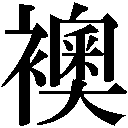の向こうから何やら聞き覚えのある声が聞こえてきた。「あれ？」と幸吉はに近づき、聞き耳をたてる。
「隣、梅ちゃんの見合いだぞ」
「やめろよ、みっともない」と止める信郎には耳を貸さず、幸吉は盗み聞きを続ける。やがて、我慢できなくなったのか、和子も幸吉の隣に来て、耳をすます。しばらく幸吉の実況を聞いていた信郎も、ついには腰を上げた。の向こうから落ち着いた男の声が聞こえてきた。
「梅子さんは、どうして大学病院を辞めて開業されたんですか」
「あの......大学病院が嫌というんじゃなくて......それよりもやりたいことが見つかったんです。昔からお世話になってるご近所の人たちのために、少しでも役に立ちたかったんです」
「ほう、それは感心だ」と相手の父親らしき男の声。「面倒見のいい方なら結婚相手にはうってつけだ」
そのとき、梅子が意外なことを言いはじめた。
「そうでしょうか......私、結婚には向いてないかもしれません。昨日、往診で患者さんのご夫婦とお話ししたんです。そのご夫婦は、お互いのことをすごく信頼していて......結婚って、ひとりの人を一生かけて愛して大切にすることなんだって思いました......でも、医者は患者のみなさんを大切に思って、幸せを願う仕事です。ひとりの大切な人ができたときに、患者さんみんなを大切にできるのか......なんだかそれが心配になって......」
しばしの沈黙が見合いの席を包む。それを破るように見合い相手の父親が言った。
「あなたの考えによると、医者はみんな独身を通さなければいけないことになってしまう」
「おかしいのはわかってます......でも......」
そのとき、人が来る気配がして、安岡家の三人は慌てて自分たちの席へと戻る。しかし、座敷に入ってきたのは、見合い相手ではなく仲介をした和也と康子だった。ふたりは申し訳ないと頭を下げ、見合い相手から急に断りの電話が入ったことを康子が告げた。もっと大きな工場を想像していたのに、家族だけでやっている小さな町工場だったからというのが、その理由だった。
むしゃくしゃした思いを酒で晴らそうと、幸吉がガバガバとビールを飲みはじめた。「やめろよ、みっともない」と信郎が幸吉の手からコップを奪おうとする。幸吉は抵抗し、その拍子にのほうへと倒れた。派手な音とともに幸吉はをなぎ倒し、隣室へとなだれ込んでいく。
いきなり登場した幸吉に、下村家の面々は然とした。
「お前たち、何をしてる!? まさか、人の見合いを邪魔するために」
わなわなと手を震わせる建造に、幸吉が「んなわけねえだろ」と軽く言う。「たまたまだよ。蒲田で見合いするような場所っていやあ、ここくらいのもんだ」
「見合いなんかしてないじゃないか」
「うるせえ！」
和子と康子がとりなし、幸吉を連れ戻した。「どうもすみません」と信郎と和也がを直しはじめ、建造も「もうお気になさらずに」と見合い相手の家族に恐縮してみせる。
「まったく、下品な人たちだ。いずれ、医院を山の手に移されたらどうですか」
見合い相手の口からこぼれた言葉に、梅子はムッとして顔を上げた。
「......お断りします。あの人たちは、私の大切な人たちなんです。あの人たちのおかげで私は医者になれたし、今も医者をやってられるんです......謝ってください」
梅子の勢いに押され、「......失礼しました」と見合い相手は謝る。顔を上げた相手の複雑な表情を見て、梅子はハッと我に返った。
「す、すみません......」
梅子の見合いがさんざんな結果に終わった翌週の日曜日、竹夫が下村家を訪れた。ちょうど松子も来ていたので、久しぶりに三人で話そうと梅子の部屋に行く。
静子と付き合いはじめた竹夫は私生活も充実している。会社では甘い顔を見せまいとついつい静子に厳しく当たってしまい、気の強い彼女を怒らせたりもするが、そういう他愛のないケンカも含めて、恋人のいる生活を楽しんでいるようだった。
「歌謡ショー？」
梅子は竹夫に聞き返した。竹夫はうなずき、から一枚のチラシを出した。
「あの安西千恵美のコンサートに、おじさんがマネージャーをしてる神崎珠代が前座で出してもらえることになったらしい」
「安西千恵美って、結構好き」と梅子はチラシを手に取った。ドレスを着た歌姫の写真の片隅に神崎珠代の写真が小さく載っている。「券、もらえるの？」
「いや。神崎珠代を前座で出す代わりに入場券を相当な数買い取らなきゃいけなかったそうだ」
竹夫は陽造に頼まれ、チケットを三十枚購入していた。松子や梅子にも買ってもらおうと思ってこの話をはじめたのだった。一枚五百円だというので、松子は五枚、梅子は三枚買うことにした。竹夫は礼を言い、チケットをふたりに渡す。
「そうだ。梅子、見合いはどうなったんだ？」
「だめだった」とさほど残念そうでもない口調で梅子は竹夫に答える。「今は、私は仕事が一番だから。やっぱり結婚はもっと先でいいの」
「仕事とか家の事情とか、そんなのはなんとでもなるもんだ。相手のことが好きっていう気持ちさえあれば」と竹夫が実感のこもった思いを伝える。
「でも......医者はほかの仕事とは違うから」
「どう違う？」
「医者は......たくさんの人の幸せを願う仕事でしょ。なのに、結婚してひとりの人を大切に思っていけるのかどうか......」
松子と竹夫は梅子の極端すぎる考え方に一瞬言葉を失った。竹夫があきれたように口を開く。
「ばかか」
「そうよ。そんなこと心配するようなこと？」
「だって......」
「逆に考えてみろ。ひとりを大切にできない人間が、たくさんの人を大切にできるか」
もっともな意見に、梅子は口ごもる。
「梅子、そんな余計なこと考えてるくらいなら、結婚しちまえ」
「いいかげんなこと言わないでよ。相手もいないのに」
「そう言えば、信郎君も見合いするとかいう話だったな。向こうはどうだったんだ」
「......だめになったみたい」
「じゃあこの際、だめだった者同士で信郎君とどうだ。意識しないくらい近くにいる人が、案外いい相手だっていうことはあるからな」
「私もそう言ったの」と松子も目を輝かせる。
「ノブは......ノブは工場を継ぐでしょ。結婚相手は家事をやったり、工場の仕事手伝ったり、そういう人じゃないと。私がノブのお嫁さんになれるわけないのよ」
「今度はあっちの事情か......そんなこと、いちいち気にすんな。要するに、梅子が信郎君をどう思ってるかどうかだろ」
「そうよ。どうなの？」
ふたりに問われ、梅子はあらためて信郎について考えてみる。子どもの頃からずっと、そばにいて見守ってくれていた。うれしいときも悲しいときも、ずっと......。
「......ノブは、これまでずっと......いつもそばにいてくれた......近くにいすぎて、意識したことなかったけど......ノブがそばにいてくれると......うれしい」
梅子の告白に、松子と竹夫は笑みをかわす。善は急げと、ふたりは工場へと向かう。梅子も慌ててあとを追った。
いきなり工場にやってきた竹夫と松子に、信郎は何ごとかと梅子を見つめる。当の梅子はなんだか落ち着かない様子だ。
「折入ってきたいことがあるんだ」と竹夫は信郎へと顔を向けた。
「やっぱりいい。やめて」と割って入ろうとする梅子の手を払いのけ、竹夫は言った。
「単刀直入にくが、信郎君は梅子のことをどう思ってるんだ」
「梅子を？」
「そのき方じゃだめよ」と松子が竹夫の前に出た。「もっと単刀直入にくわ。信郎君、梅子と結婚する気はあるの？」
「えっ、梅子と結婚？」
梅子は信郎の言葉を待った。自分でも意外なくらいドキドキしている。
「......そんなわけないでしょ」と信郎は真顔で言い切った。「俺が梅子と結婚なんかするわけないじゃないですか。冗談はやめてくださいよ」
踵を返して工場へと戻っていく信郎を、三人は呆然と見送った。
数日後、衝撃的な事件が下村家を襲った。陽造が詐欺の容疑で警察に逮捕されたのだ。その夜、事情を調べた竹夫が下村家へと報告に来た。
「詐欺をしたって、本当なの？」ねる芳子に、「本当らしいです」と悔しそうに頷くと、テーブルの上にあったコンサートのチラシを手にとり、竹夫は話しはじめる。
「このコンサート、安西千恵美が同じ日に別の仕事を入れてることがわかって、結局中止が決まったそうなんです。おじさんはその中止を知った上で、あちこちで券を売っていたそうです」
「じゃあ、私たちに券を売ったときは」
「......もう、中止は知ってたはずだ」
「どうしてそんなことを......」と正枝は悲しげに眉をひそめる。
「......誰が警察に通報したのかな。券を売りつけられた人は、まだコンサートが中止なんて知らないはずなのに」
竹夫の疑問に答えたのは、建造だった。
「......俺だ」
一同は驚き、建造を見つめた。みんなの顔に、「どういうこと？」と疑問が浮かぶ。
「陽造が真っ当な仕事をうまくやってるなんて怪しいと思ったんだ。調べてみたら案の定......」
「だからって、弟を警察に売るようなこと」と竹夫が非難のまなざしを向ける。
「放置しておいたら、見ず知らずの人たちがもっと被害に遭うんだぞ」
「途中まではうまくいってたんですよ。安西千恵美側のミスさえなけりゃ、普通にコンサートは開かれてたんです。おじさんのせいじゃない」
「だからって、詐欺行為をしていいことにはならない」
「ほかにやりようがあったはずです」
そう言うと、竹夫は憤然と家を出ていった。
翌日、梅子は警察に赴き、陽造への面会を求めたが、取り調べ中だからと追い返されてしまった。梅子は自分に何ができるか懸命に考える。その夜、梅子は正枝に相談を持ちかけた。
「話って何？」
「陽造おじさんのこと......どうしてお父さんはこんなことまで......陽造おじさんは実の弟なのに」
「......建造さんもつらいのよ」と正枝は、建造と陽造の確執の原因について語りはじめた。
もともと父親が甲斐性がなく金にもだらしなかったせいでふたりは貧乏暮らしを余儀なくされていた。頭もよく、勉強も好きだった建造はその行く末を案じられ、十歳のときに下村家の養子となった。そこで一度ふたりの縁は切れたのだが、建造が医大に通い出してから、陽造が下村家に顔を出し、金をせびるようになったのだ。
「建造さんは文句を言いながらも貸してやってたわねえ。私には言いにくいらしくて、自分で必死に働いてお金を工面して......私ね、見るに見かねてお金を出してあげたことがあったの。それから陽造さん、私のところにもちょくちょく来るようになって......建造さんは嫌がってたけど、私は追い返したりしなかったわ。もうひとり息子ができたような気がして、ちょっとうれしかったのよ。それに......兄弟のうちひとりだけ養子にした私のせいで、ふたりの間に溝を作ってしまったんじゃないかって......そんな罪の意識もあったしね。建造さんは、そういう私の気持ちもたぶんわかってるのよ。だから私の前では陽造さんに余計厳しく当たってしまうの」
話を聞き終えた梅子は、ふたりの仲をどうにかしようと強く決意するのだった。
次の日も仕事を終えると梅子は警察を訪れた。しかし、やはり面会は許されなかった。警察署の前で、「お願いします。面会させてください」と何度も頼むが、閉じられたドアの向こうから答えはない。そのうちポツリポツリと雨が降ってきた。
小雨が豪雨へと変わっても、梅子はその場に立ち続けた。足元には雨のしずくがたまっている。そこへ傘が差し出された。振り向くと、信郎が立っていた。
「何やってんだ。こんなに濡れて......しょうがないやつだな」
信郎は苦笑気味に梅子に微笑む。
「でも、わかるよ......梅子はおじさんを助けたいだけじゃなくて、自分の親父さんや、ほかのみんなのことも考えてるんだな......梅子はそうやって、人の心配をしてるのが似合うよ」
「え......」
「お前はそうやって、患者とか周りの人とかみんなのことを心配してる。なんだか、自分がしょせんその中のひとりでしかないんだなって気がしてくるんだ。だから、俺......梅子と結婚する気があるかってかれて......そんなわけないって答えちまった」
「何よ、それ......私、ノブに嫌われたかと思った」
「ばか。そんなわけないだろ」
「......どうして来てくれたの？」
「......梅子のやってることの手伝いくらいはできると思って」
梅子は傘の下で信郎を見上げ、言った。「......手伝って」
「うん......じゃあ、お前も俺のやること手伝ってくれるか」
「うん......」
「そうか......じゃあ......オヤジたちがまた見合いとか言い出す前に、結婚しちまうか」
「うん」と何げなく答えた梅子は、我に返って驚く。「えっ!?」
「嫌か？」
「なんかその言い方......」
「どんな言い方ならいいんだよ」
「......さあ。あるでしょ。もっと気の利いたこと」
「言えるかよ。そんなこと」
愛情を込めて、梅子は言った。「ばか」
「で。答えはどうなんだよ」
「今、言った」
「ばかっていうのが？」
「うん」
「それじゃわからない」
微笑み返す梅子を、信郎は優しく抱き寄せた。
「......ずっと」
梅子の心に、幼い頃からの信郎との日々がよみがえる。あんな日々がこれからも......ずっと続いてほしい......。そんな素直な思いが、口からこぼれる。
「......ずっと、そばにいて」
「ああ」
「お父さん！」とずぶ濡れで駆け込んできた梅子を、建造と芳子、正枝がギョッと見る。梅子はかまわず続けた。「明日、陽造おじさんと面会できるって。警察の人がやっと許可してくれたの」
梅子の粘りに、ついに警察も根負けしたのだ。面会に行ってくれと頼まれ、「なんで俺が」と建造は戸惑う。
「おじさんがやったことを反省して、相手に謝ってお金を返せば、刑務所には行かなくてもすむかもしれないんだって......でも、おじさん開き直ってて、刑務所に行っても仕方ないって思ってるみたいなの。だから、みんなが心配してるって、話してあげて」
「俺は行かん。誰か代わりに行け」
「お父さん以外に誰が行くの」と梅子は一歩も引くものかと建造に立ち向かう。
「おじさんは、私や竹夫兄さんにいろいろと世話をしてくれたの。私たちがここまで来れたのはおじさんのおかげもあるのよ。どうしてそこまでしてくれたんだと思う？ 私たちが、お父さんの子どもだからでしょ。家族だからでしょ」
「......今回だけじゃない。昔から、あいつはうちにさんざん迷惑を──」
「私はなんとも思ってませんよ」と建造の言葉を正枝がさえぎった。「だって、子どもが親に迷惑をかけるのは当然でしょ。私には、建造さんも陽造さんも、大切な息子なんだから」
「......お母さん」
「......おじさんは、私たちの家族よ」
三人の真険なまなざしに、建造の頑なな心がほぐれていく。
翌日、建造は警察署へと向かった。
ドアの向こうで待っていたのが建造だったので、陽造は驚く。「兄貴か......梅子か、竹夫あたりかと思った」と言いながら、建造の正面に座る。
「すまなかったな」素直に謝り、陽造は問われるまま、詐欺行為をした理由を話す。おいしい話に舞い上がって、最後まで話を詰めずに突っ走り、結局、また多額の借金を作ってしまった。
「どうして......」
「仕返ししたくなったのかな」と陽造の口から本音がこぼれ出る。
「あんただけ裕福な家に養子に行って勉学さしてもらって......俺がどんなだったか知ってるか。あのいいかげんな親父のもとで、物乞いみたいなことまでしたこともあった。けど、そんなことでヤケになったらこっちの負けだ。俺は俺でうまくやってやるって、ずっと思ってた......」
「............」
「それにしても、あんたの子どもたちはみんなお人好しだなあ......インチキだって早く気づいてくれって、どっかで思ってたんだが見事にだまされて......心の優しい連中だ。うらやましいよ。あんないい子に恵まれて。結局、負けたよ......俺には、あんないい子たちはいない......」
どうしようもなく寂しくなって、陽造は涙ぐんだ。「誰もいない......」
「......いるぞ」
「えっ」
「うちの子どもたちが、お前をどれだけ慕ってるかわからないのか。梅子がどれだけ、俺たちを仲直りさせようと......母だって、お前のことを本当の息子だと思ってくれてる。それに......」
少し言いづらそうに、しかし、建造はしっかりと言った。
「たったひとりの兄がいることも忘れるな......ひとりじゃない」
建造の口から出た温かな言葉に、陽造の胸が締めつけられる。
「さいわい、被害は限られてる。金は工面した。竹夫や松子や梅子が被害者に弁償して回ってる。被害届も取り下げてくれるよう頼んでる......出てきたら、いつでもうちに来い」
「......ありがとう」
陽造の を熱い涙が伝った。
を熱い涙が伝った。
陽造の一件がどうにか落着し、梅子と信郎はいよいよ自分たちの結婚について、みんなに打ち明けることにした。その日の夕食を下村家で食べようと集まってもらったのだが、しかし、あらたまっての話となるとなかなか言い出しづらく、ふたりがまごまごしているうちに両家の親たちは、互いの次の見合いの相手について話しはじめる。
「ちょっと黙っててくれないかな」と、いつものように話がこじれ、またぞろケンカを始めそうな勢いの幸吉と建造を信郎がさえぎった。「話があるんだ」
「話？ ......そうだ。お前がなんか話があるからって、みんな集まったんだな。早く言えよ」
「俺たち......」
「俺たちって？」と和子がねる。
「俺と、梅子」
みんなの視線がふたりに集まる。
「俺たち......結婚する」緊張の面持ちで信郎が言い切った。
予想外の展開に、一同はキョトンとふたりを見つめる。
「いつの間に......」
「ふたりで、話して決めたの」と梅子は芳子に答える。
みんなどう返答していいかわからず、妙な静けさが食卓を包む。
「梅ちゃん......料理は？」と和子がとりあえず気になることをねた。
「全然できません」
「あー、そう......」
すると、芳子がいきなり和子のほうを向き、「お願いします」と頭を下げた。「料理のことは大目に見てやってください。これから少しは練習させますから」
梅子も和子に向き直り、「練習、します」と頭を下げ、和子は「あ、うん」と曖昧に頷いた。
「けどよ......そっちはどうなんだ」と幸吉が建造にねる。戸惑う建造に向かって、信郎が正座し、言った。
「俺、梅子を幸せにします。梅子は......医者として、町の人の役に立ちたいっていう目標があります。俺も工場をどんどん大きくしていくつもりです......お互い忙しいと思うけど、でも......いや、だから、夢を持ってる者同士助け合って、支え合っていけると思うんです。お互いだめなところもあるの、わかってるし......苦労することもあると思うけど......まあ、なんとかなるでしょう......いや、なんとかなるっていうのは、そういういいかげんなあれじゃなくて......その......」
うまく思いを言葉にできず、焦る信郎に梅子はハラハラしている。見かねた建造がさえぎるように言った。「趣旨はわかった......よろしく頼む」
「あ......はい！」
梅子と信郎の顔に笑みが咲く。
「ありがとうございます」
「そっちはどうなんだ。梅子でいいのか？」
建造が幸吉に水を向けると、幸吉は梅子に向かって言い放つ。「こんなんでいいなら、好きにしろ」
それを合図に場は一気に祝福ムードへと変わった。
「じゃあ、乾杯ね」と正枝が言い、幸吉がグラスを掲げた。
「乾杯！」
喜びの声が下村家に響いていく。もう何十年もの長い間、隣同士として同じ時を共有してきた二つの家族が、今、一つの家族になるのだ。こんなにうれしいことはない。
第十九章 新しい家族
梅子と信郎の結婚宣言から半年あまりが過ぎ、いよいよ式の日が近づいてきた。この半年の特訓のおかげで、梅子の料理もどうにか人様に出せるくらいになっていた。
「そう......君が」
布団に横たわったまま目だけ動かし、新造は八重子のうしろに座った信郎を見つめる。「はい」と神妙にうなずく信郎に、「すみませんねぇ、わざわざ」と妙子が恐縮する。
「梅子先生が結婚すると聞いて、どうしても相手の人を見たくなった」
半年前に比べると驚くほど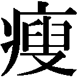せてしまった新造の体を診察しながら、「どうぞ、見てください」と梅子は苦笑する。新造にじっと見つめられ、信郎の視線が泳ぐ。
「思ったより長く生きられたのは......神様が、あなたを見せようとしてくれたんでしょうね」と新造は信郎に向かって微笑んだ。「この人はね......私がひとかたならぬお世話になった人なんだ。私が言うのも変だが、くれぐれもよろしくお願いしますよ」
「はい。わかりました」と信郎は力強く頷く。
「ありがとう。付き合ってくれて」
診療所まで戻ってきたところで、梅子は仕事を抜けて来てくれた信郎に感謝の気持ちを伝えた。
「いや......あの人、悪いのか」
「うん......がんが全身に転移してるから、本当は体中がすごく痛いと思うの......でも、そんな素振り全然見せないで......」
「そうなのか......でも梅子だって、あんなに普通に接して」
「医者だから」と微笑む梅子に、信郎はプロの顔を見て誇らしく思う。
そこへ、安岡家から和子が出てきた。ふたりを見ると、「大変だよ」と手招きする。和子に連れられ、ふたりは二階の信郎の部屋に向かう。ドアを開けるや、目を丸くした。狭い部屋が新品の家具でギュウギュウ詰めになっているのだ。絶句するふたりに和子が言った。
「梅ちゃんのお父さんからだよ」
そこに幸吉がやってきた。苦々しく部屋を眺め、口を開く。「あのオヤジ、嫌がらせとしか思えねえ。この間、お前たちが結婚して入る部屋が一間しかないって言ったら文句タラタラだったんだ。これはな、これだけの家具が入る部屋を用意してみろっていう挑戦状だ」
「そんな言い方......せっかくこんなにしてくれたのに」と和子がたしなめる。
梅子は部屋に入ると、新品のタンスにそっと触ってみる。あの頑固な父親がどんな顔でこれらの家具を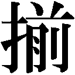えたのかと思うと、梅子の心には温かな灯がポッと灯るのだった。
料亭の広間にしつらえられた祝いの席。近所の神社での式を終えた梅子と信郎が並んで奥に座り、その両側に親族や招待客の膳が並ぶ。建造は一番手前で口をへの字に結び、仏頂面で座っている。
仲人の和也のぎこちない挨拶が終わり、宴会が始まると、場は一気ににぎやかになった。さっそく梅子の前に弥生、須藤雪子、園田江美ら医専時代の仲間が集まってくる。「おめでとう」の声に笑顔で応え、梅子は江美に言った。「江美さんも、おめでとう」
江美は大きなお腹をさすりながら、「ありがとう」と照れ笑いを浮かべる。仲間の中では瀬川典子だけが出席できなかった。どうしても目が離せない患者がいたのだ。
「典子さん、すごく残念がってたわ。それでね、梅子にこれ渡してって」と雪子がフェルトで作った人形を手渡す。それは梅子に似せた花嫁人形だった。梅子は「わあ」と声を上げ、顔をほころばせる。そんな梅子を見ながら、弥生はため息をついた。
「梅子にも先を越されて......残りは、私と雪子さんだけか......」
「どっちが早く幸せになるか、競争しましょうか」
「結婚しないと幸せじゃないの？ 考えが古いのよ」そう言い返す弥生に、雪子が「強がって」と応酬する。
昔のように火花を散らすふたりに、「相変わらずね」と梅子と江美が苦笑する。
医専の仲間たちが席に戻ると、信郎が幸吉の席へ目をやりながら、「繁おじさん、来たんだな」とつぶやいた。梅子が見ると、幸吉が何やらかしこまった様子で同年代の男と話している。信郎によると、繁は和子の兄で、幸吉はかつて繁に金を借りたことがあり、それ以来頭が上がらないのだそうだ。
気まずい再会もあれば懐かしい再会もある。八重子と隣り合って座った岡部が何やら微妙な空気を醸し出しながら話をしている。八重子を見る岡部の表情から、このふたりの間にも何やら淡い関係があったのだなとわかる。
竹夫の隣には静子が座っている。最初は、あらたまって竹夫の家族と会うということで、静子にしては緊張した様子だったが、ようやく表情もやわらぎはじめた。そんなふたりの前に陽造が腰を下ろし、「彼女のこと、兄貴に紹介したのか」とねた。
「ええ、さっき。そしたら、よさそうな人じゃないかって」
「へえ。意外だな」
「私がそう言われると、そんなに意外ですか？」少しムッとする静子に、陽造は笑った。「そうじゃないよ。兄貴はなあ、何に対してもひとくさり文句を言わないと気がすまないたちなんだ」
「ま、今日は梅子の結婚で上の空なんだろ」と竹夫。
静子はチラリと建造を見る。建造は誰と話すでもなく、黙々と杯を干している。
「おめでとう」と徳利を持った繁が新郎新婦の前にやってきた。信郎は杯を出し、酒を受ける。
「信郎、お前はこれから工場を大きくしていくんだろう？」と繁がねた。
「そのつもりです」
「そういうときに、かみさんが外で仕事をしてて大丈夫なのか」
信郎は戸惑いながら、答える。「そんなこと関係ないです」
「関係ないことがあるか」と繁は責するように少し声を荒らげた。一同が驚いて繁を見る。繁はかまわずに続けた。「工場をやっていくのは大変なことだ。従業員の世話や忙しいときは工場の仕事だって......必ず女房の助けが必要だ。どうなんだ、そこんとこ」
「心配ありません」と言う信郎に首を振り、繁は梅子に目を向けた。「あんたはどうなんだ」
「それはあの......なるようになるかな、と」
梅子の答えに、「なんだ、それは」と繁は気色ばむ。一同が緊張して見守る中、弥生が繁に向かって言った。「梅子さんは、努力家です。飲み込みは悪くても、最後にはものにします。実際、なるようになってきたんです。長い目で見てあげてください」
「長い目で見ろと言っても。工場の仕事は明日も明後日も続いていくんだ」
「たしかに最初のうちはハラハラすることもありますが......」
「最初だけかな？」と山倉に耳打ちされ、「ずっとでしょ」と雪子が笑いながら小声で答える。
「そこ、ずっとだって言ったな。俺は〝地獄耳の繁〟と言われてるんだ」
いきなり振られ、雪子は慌てて答えた。「あ、あの......梅子はたしかに周りをハラハラさせます。でもそれは、本人がいつも一生懸命だからで......例えば、医専時代、医薬品を横須賀まで取りに行ったことがありました。あのとき、梅子はありったけ持って帰ろうって言い出して、結局雨の中で立ち往生して......でも、梅子は医専のためを思ってそうしたんです」
「大変だったけど、なんとかなった。いい思い出だ」と江美が言い、仲間たちが微笑み合う。
「梅子の思い出ならこんなのもあるぞ」と今度は陽造がコーラ製造事件を語りはじめる。それからは梅子の起こした珍騒動の暴露大会となり、場は再び盛り上がる。繁はすっかり毒気を抜かれて、おとなしくなってしまった。
「まあ、兄さんよ、もういいじゃねえか」と幸吉に言われ、「しかし」と繁は首を振る。「そんなうわついたことで、医者としても町工場のかみさんとしても大丈夫なのか」
そのとき、信郎がスッと立ち上がった。繁を見下ろし、毅然と言う。
「俺の嫁さんに文句言わないでください。俺が選んだんです」
梅子は頼もしげに信郎を見上げた。
「欠点の数なら、俺だって梅子といい勝負です。うちのオヤジとオフクロだって、欠点だらけのふたりでうまくやってきたんだ。オヤジたちを見習って、ふたりで補い合ってやっていくって決めたんです。だから、俺たちは大丈夫です」
「......しかしだな」
「もういいだろ。めでたい日なんだから」と幸吉が食い下がろうとする繁をとりなす。
「兄さんよ......言う相手が違わねえか。ここで何を言っても、倅は帰ってこねえよ」
動揺し、言葉をなくした繁から一同へと視線を移し、幸吉は言った。
「みんな、すまないな。元どおり続けてくれ」
そのとき、建造が繁に向かって口を開いた。「息子さんが、どうかしたのかな」
建造のおだやかな問いかけに、繁は少し逡巡しながらも、やがてゆっくりと語りはじめた。
「うちの倅は......私に反発して、家を飛び出しておりましてな......何不自由なく育てたつもりなのに......私よりずっとできの悪いこの男の倅が、こんなにすくすくと育って、いい嫁さんをもらって......それが悔しかっただけなんです......ねたましかったんです......申し訳ない」
涙ながらに頭を下げる繁に、「心配ないでしょう」と建造が声をかける。「うちの竹夫も、一時は家を飛び出しておりましたが、今ではそれなりのものになって、こんなにいい女性ともご縁ができて、なんとかやっております」
不意の優しい言葉に、静子は感動で胸が詰まった。
「梅子も、私の反対を押し切って開業医になりましたが、それなりにやっております。親から見れば子どもはいつまでも子どもですが、いつの間にか一人前になっているものです。だから、あなたの息子さんも、きっと......」
「ありがとうございます」と建造に礼を言い、繁はあらためて信郎と梅子に向き合った。
「信郎、梅子さん、おめでとう」
「ありがとうございます」とふたりは声を合わせた。
新婚夫婦の部屋を占領していた家具は下村家の二階で預かることで一件落着し、梅子の安岡家での生活が始まった。料理の担当は朝食が梅子で昼食は和子、夜はふたりで分担することになった。仕事と家事の両立は大変だったが、嫁として認められたい一心で梅子は頑張る。
そんなある日、松子が下村家に遊びに来た。せっかくだからと和子にうながされ、梅子は久しぶりに下村家で夕食をとった。食事のあと、台所で片づけをしながら松子は梅子に言った。「今日ね、私、お母さんに呼ばれてきたのよ。梅子がいなくなって寂しいのよ、お母さん。話し相手がほしかったんじゃないの」
「私なら、いつも隣にいるのに......」とお茶を淹れながら梅子はつぶやく。
「隣にいても、自分から切り離されたみたいな寂しさってあるんじゃないかな。できるだけ用事作って、お母さんに甘えてあげなさい」
「そうもいかないわ。お嫁に行ったんだから」
そう言って、梅子はお茶を載せた盆を手に居間へと向かう。
「梅子って妙なところで真面目なのよね。やっぱりうちの家系なのかな。結婚って、他人同士が一緒になるものでしょ。私なんか、たまにお姑さんの相手するだけでも疲れるのに、梅子は向こうのご両親と同居でしょ。少しは気を抜かないとまいっちゃうわよ」
話しながら居間に入った松子は、ちゃぶ台の横に倒れている梅子を見て仰天した。
松子はすぐに二階にいる芳子を呼ぶと、自分は安岡家へと走った。
「梅子！」と駆け込んできた信郎は、芳子にシッと指で合図され、足を止めた。見ると、梅子はおだやかな顔で寝息をたてている。
「寝てるだけみたい」と苦笑する芳子に、信郎は「なんだ......」と安する。
目を覚ました梅子は、「......あれ？」と部屋を見回す。たしか実家にいたはずなのに、いつの間にか安岡家の自分の部屋に戻っている。しかも、もう朝だった。
梅子が居間に下りていくと、和子がいた。「あら。まだ寝てなさい。今日は日曜よ」
「お義母さん、私......」
「......お座りなさい」と和子は梅子に言い、先に座る。その前に梅子がひざを折った。
「梅ちゃん......無理しなくていいんだよ。毎日毎日食事作らなくてもいい」
「......でも......」
「言いにくいけど......梅ちゃんの作る料理、日に日に味が濃くなっていってるんだよ。疲れてるから、味が濃いものが食べたくなるんだろ」
「気がつきませんでした......」
「もういいよ、食事は時間があるときだけで」
「......すみません。いたらない嫁で」
「ううん」と和子は首を振る。
「私......ばかみたい......努力してるつもりが、迷惑かけて......」
「いいのよ。私はね、娘の心配ができてうれしいんだよ。うちは父ちゃんとノブとキノやんと、男ばっかりで、味気ないったらありゃしない......お隣は松ちゃんや梅ちゃんがいて、うらやましいなって思ってたの。そりゃ、結婚式の前は、お嫁さんは料理や家事ができなきゃって思ってたけど、今はもう、いてくれるだけで十分って思ってるの......だって......梅ちゃんがいてくれて楽しいんだもの」と和子は梅子に向かって手を差し出す。梅子はその手をギュッと握った。
「......ありがとう。娘になってくれて」
涙ぐむ和子に、梅子の胸も詰まる。「......お義母さん」
「さて......今日はごちそう作らなきゃね」
「今日何かあるんですか？」
「青森から集団就職の男の子が来るのよ」
「あ、そうでしたね」
工場の仕事も順調に増え、この際一から若い職人を育てようと、組合が採用した集団就職の人材に幸吉が求人を申し込んでいたのだ。
やってきたのは純朴そうな坊主頭の少年だった。「佐藤光男です。よろすくお願いします」と青森弁でペコリと頭を下げる。その夜の安岡家の夕食は木下も加わって、光男の歓迎会となった。
「光男君は何人兄弟？」と和子がねる。
「六人す。おらは三男で......親の畑は一番上の兄が継いでますし、青森だばまだまだ人口を支えるほどの産業がありません。んだがら東京さ出てきて、日本の経済成長に貢献したいと思い、集団就職さ申し込んだ次第です」
まだ十五歳とは思えぬ光男の立派な考えに、一同は「ほう」と感心する。
「立派なのね。難しい言葉知ってるし」
「本、読むのは好きでしたから」と光男は梅子にうなずく。「学校の図書室の本、片っ端から読みました」
「だったら、高校に進学すりゃよかっただろ」と木下が面白くもなさそうに言う。せっかく新米が入ってきたというのに、自分より賢そうなのがなんだか気に入らなかった。
「うちさはそんな余裕はありません。まだ弟や妹は小さいですし......んだから、一生懸命働く所存ですので、よろすくお願いします」
そう言って、深々と頭を下げる光男に、皆はさらに感心するのだった。
人柄は申し分なかったが、問題が一つあった。光男の寝る場所である。住み込みで雇ったのに幸吉はそのことをまるで考えていなかったのだ。梅子の同居でさえひと騒動あったくらいなので安岡家には余った部屋など一つもない。木下の下宿に同居してはという意見も出たが、木下は断固として拒否した。結局、光男は信郎と梅子の部屋に寝ることになった。
翌朝、廊下ですれ違った信郎に眠い目をこすりながら梅子はねた。「眠れた？」
「いや......」と信郎もあくびまじりに答える。光男のいびきがうるさくて、ふたりともよく眠れなかったのだ。
「ね、光男君が私たちの部屋にいること、私のうちの家族には黙っててね。父に知れると、また何か言い出すかもしれないから」
「そうだな......」と信郎は頷いた。
新造の闘病生活はいよいよ終わりを迎えようとしていた。体力の低下がひどく、もう床から起き上がることもできない。新造は枯れ枝のように細くなってしまった腕を梅子に預けながら、「そろそろかな......」とつぶやく。
「何がですか」
「私がおいとまする時期だよ」
梅子は表情を変えず、答える。「そんなこと言わないでください」
「肝臓がんの末期は、意識不明になってゆっくり衰弱していくそうだな。意識がなくなってそのままだと、いつ別れを言えばいいのかな......みんなに見送ってもらえるのはいいとしても」
「そんなこと考えなくていいんです」と梅子は静かに答えた。
「ずいぶんと落ち着いたな」と新造は笑う。「あんたを困らせようとして言ったんだ。困る様子がないから面白くない」
「しょうがない人ですね」と梅子も笑った。
「あの絵......」と新造は部屋の隅に立てかけてある桜の絵に目をやる。病に臥してから描きはじめたのだが、花の部分だけ色が入っていなかった。
「桜の色だけ、入ってないんですね」
「花が咲くまで生きてたら......色を入れようと......」と新造が梅子に答える。
「きれいな絵になるでしょうね」と梅子は微笑む。
「ああ......」と答え、新造はゆっくりと目を閉じた。
それから数日後、梅子が診療所で診察の準備をしていると芳子がやってきた。妙子から電話が入ってると聞き、梅子はついにその時が来たのだと思う。
受話器を置いた梅子は、出勤準備をしていた建造につい目を向ける。
「......早野さんか」
「はい」
「慌てずに、冷静に振る舞いなさい」
「わかりました」
「きちんと、見送ってあげなさい」
「はい」と頷き、梅子は出ていく。
早野家には、すでに子どもを連れた小夜子が来ていた。梅子は小夜子に会釈し、新造のそばに座る。「早野さん、わかりますか」
しかし、その声はもう新造に届くことはなかった。やがて、苦しそうに上下していた新造の胸の動きが止まり、口だけの静かな呼吸に変わった。ハッとする妙子と小夜子に、梅子は言った。
「......お別れを」
ふたりは新造におずおずと近づく。妙子は新造の手をとり、言った。
「あなた......ご苦労さまでした」
「お父さん......ありがとう」
「聞こえてるみたい。手を握り返してくれたわ」
妙子はそう言って、新造の手を小夜子へと渡した。小夜子がゆっくりと新造の手を握る。
新造の呼吸は徐々に浅くなり、最後に小さく息を吐いた。それきり、もう二度と新造の胸が動くことはなかった。
「ご臨終です」
梅子は妙子と小夜子に頭を下げる。「みなさんに囲まれて、幸せな最期だったと思います」
「いろいろと......長い間、ありがとうございました。下村先生がいらしてくださったおかげで、主人はどれだけ心安らかだったか......」と妙子が涙に濡れた目を梅子に向ける。
「先生がいらっしゃらなければ、私はこうして父を見送ることはできませんでした......」
「病気だけじゃなく......私たち家族のことまで......」
小夜子と妙子はそう言って、梅子に頭を下げる。
「いえ......こちらこそ......早野さんには、本当にたくさんのことを教えていただきました」
静かに眠るように横たわる新造に、梅子は「ありがとうございました」と微笑みかける。
帰り際、梅子はふと新造の残した桜の絵に目をやった。色のついていない桜の花びら......あらためて新造が逝ってしまったと感じ、涙がれた。
その夜、一日の診療を終えた梅子が新造の死亡診断書を書いていると、フラッと建造が診療所へ入ってきた。「どうだった」
「......亡くなりました」
「開業して初めてか、患者を看取るのは......開業医は、患者さんと個人的な関わりも深くなるだろう。あまり、引きずるなと言っても難しいかもしれないが......」
「大丈夫です」
「そうか。お母さんにも、そう言っておこう。少し心配してたからな」
「はい」
「松子が来てる......梅子もあとで来るといい」
ぶっきらぼうに言って出ていく建造の、無器用な優しさが梅子にはありがたかった。
仕事を終えた梅子は、さっそく下村家へと向かった。
「こんばんは。これ、お義母さんが」と両手に抱えたはっさくをちゃぶ台に置く。「わぁ、ありがとう」と松子がうれしそうに手を伸ばし、皮をむきはじめる。
「幸吉さんのところに、集団就職の男の子が来たみたいね」と正枝が口火を切り、しばし光男の話になった。光男はどこで寝ているのかとかれ焦ったが、「二階にすごく小さい部屋があって......そこで」ととっさに梅子はごまかした。さいわい建造は気にしていないようだった。
「幸吉さんのところは電気釜買わないの？」と芳子が話題を変える。さっき松子から電気釜の便利さをさんざん聞かされて、どうしてもほしくなったのだ。
「そのうち買おうって言ってる」梅子の答えを聞き、「ほら」と芳子は建造を見る。
「梅子が嫁に行って、うちは三人だ。家事も楽になったろう。これ以上楽になってどうする」
「松子のところはふたりなのに電気釜買ったのよ」と正枝が建造に反論したとき、「あ、そのことなんだけど......」と松子が口を挟んだ。
「うん？」と自分を見る一同に、松子は少し恥ずかしそうに言う。
「実はうち......もうすぐ三人になるの」
「もしかして、赤ちゃん？」芳子の問いに、松子は照れながらうなずく。次の瞬間、下村家の食卓に家族皆の笑顔の花が咲いた。
むいたはっさくを食べ、「すっぱいものがほしくなるって本当なのね」と口をすぼめる松子を見ながら、梅子はなぜだか涙が出そうになる。
「梅子、どうしたの？」
「ううん」と正枝に首を振り、「うちの人にも知らせてくる」と梅子は家を飛び出した。
この世を去っていった命があれば、新しく生まれてくる命もある。
命の不思議に、運命の不思議に、梅子の胸はさまざまな感情でれそうになる。
ものすごい勢いで階段を駆け上がっていく梅子を怪そうな顔で見送った信郎は、すぐにあとを追った。部屋の戸を開け、「どうした」と梅子にねる。
「......松子姉さんに、赤ちゃんができたの」と梅子は信郎に笑みをつくった。
「そうか......よかったな」
「うん......」
「今日は、悲しいことと、うれしいことがあったんだな」と信郎は梅子に言った。新造の死のことを和子から聞かされていたのだ。
信郎と話しているうちに、梅子の顔が次第にゆがんでいく。
梅子は信郎の胸に顔をうずめ泣きじゃくりはじめた。震える肩を信郎の大きな手がそっと包む。
翌朝、家から出た梅子は建造とバッタリ顔を合わせた。挨拶を交わし、ふと工場のほうを見た建造が梅子にねる。「彼か。集団就職で来たのは」
建造の視線の先に光男がいるのをたしかめ、「そう」と梅子はうなずく。「すごく真面目なの......いびきさえなきゃね」
行きかけた建造の足がふと止まった。「いびき？ どうして梅子が彼のいびきで困るんだ」
「あっ......いや、それは......」
しどろもどろになる梅子の様子から、建造は何かを隠しごとがあると察し、問い詰める。梅子から事情を聞いた建造は、その足で工場の中へと入っていった。
「どういうことだ。説明してもらおう」
「説明も何も。部屋がねえからよ」と幸吉は建造の怒りをいなすように軽く答える。
「これからどうするんだ。ずっと従業員と同居させるつもりか」
「あの......すみません」と光男が申し訳なさそうに頭を下げる。
「君に責任はない。このオヤジと話をしてるんだ」
「昔っから、嫁に出すってことは一生の別れと同じだって言われてたんだ！ ごちゃごちゃ言ってんじゃねえよ」
幸吉ではらちがあかないと建造は信郎に向き直る。「君は俺に約束したな。梅子を幸せにすると」
「はい......」と信郎は神妙に頷いた。
「私は幸せよ。だからいいの」と梅子がふたりの間に割って入る。
「しかし......」
「これは、安岡家の問題なの」
「何？」
「だとよ。文句あるか」
建造は幸吉をにらみつけると、憤然と工場を出ていった。梅子はその背中を困ったように見送るのだった。
その夜、安岡家では光男の部屋について話し合いが行われた。そこで信郎が提案したのは、自分たち夫婦が下村家で暮らすということだった。家具だって向こうに置いてあると言う信郎に、「人間が家具のあと追いかけていってどうするんだ」と幸吉は反対する。
梅子も、「部屋を移るだけじゃないのよ。私のうちに住むってことは、あのお父さんと暮らすってことなのよ」と心配そうに言う。そう言われると信郎もなんだか不安になってくる。
「朝晩、あの仏頂面がいるんだぞ。すげえいいことがあって有頂天になっても、一緒に喜ぶどころか、『うちの中で騒ぐな』とか言われるんだぞ。なあ」
幸吉の話に、「うん。だいたいそうです」と梅子も苦笑しながらうなずく。
「我慢できんのか？ 無理に決まってら」
「......それは......」と口ごもる信郎に、幸吉は「はい、お開きお開き」と話を終わらせる。
自分のせいでこんなことになってしまったと、光男は責任を感じていた。そんな気持ちを察した梅子は、工場にポツンと座っている光男に声をかけた。
「光男君......あなたが気にすることないのよ」
「んでも......」
「困ったことになったと思うけど......でもね、私、心のどこかで、楽しいの。だってね、このうちの人も私のうちの人も、みんなちょっと変じゃない......変なことですぐムキになって。でも......ケンカするからこそ仲良くなれると思うの。ノブのお父さんと私のお父さんはいつもケンカしてるけど、きっと好きでしてるのよ......とにかく、なんだかんだ言ってるうちに、きっといい答えが見つかる......私は、そう信じてる」
梅子は光男を安心させると、一緒に部屋に戻った。誰もいないと思ったら、押し入れからヌッと信郎が顔を出す。「結構、落ち着くな、ここ」
いびきでふたりに迷惑をかけるからと、光男は最近押し入れで寝ていたのだ。
押し入れで考えた結果、信郎は自分と建造がうまくやっていけさえすれば問題は解決すると結論づけた。そのための第一歩として、建造と酒を飲みながらじっくり話し合うと言うのだ。
「それで、うまくいくってとこを見せてやるよ。そしたら、うちのオヤジだって納得するだろ」
「......わかった。やってみて」
梅子はうなずくと、「うちのお父さんとうまく話すにはコツがあるのよ」と話し出す。
次の晩、信郎は「みかみ」に建造を誘い、ふたりきりで飲みはじめた。信郎はさっそく梅子から授かった作戦を試みた。梅子曰く、建造は知的な人を好む。だから、信郎が意外と教養があるということを示せれば、これまでのイメージが覆され、感心するのではないかというのだ。
そうはいっても、昨日今日ですぐに知的な人になれるわけもない。だから話題を東西の冷戦に絞る。信郎は一日かけて新聞を読みあさり、必死に勉強したのだった。
「......だから、その、去年オーストラリアが中立を宣言して東西の緩衝帯になったことも、対立ムードが弱まる理由になったと思うんです」
信郎は勢いをつけようと、どんどん酒の杯を重ねていく。
「ほう、詳しいな。一つ指摘すると、オーストラリアではなくオーストリアだが」
「えっ、あ、そうですよね」
「これからは、一市民といえども国際感覚が必要だ。君はオヤジとは違うようだな」と建造も機嫌よく酒を口に運んでいく。「だいたい、君のオヤジは何ごとにおいてもいいかげんすぎる」
「けど......東西陣営も雪解けですし、うちのオヤジとも仲よくできませんか」
「無理だな。イデオロギーの違いはそう簡単に乗り越えられるものではない」
「イ、イデ？」
「私と君のオヤジは何もかも違いすぎる。自由主義と社会主義以上の違いと言っていい」
「というより......そうなんでもかんでも文句言ってちゃ、うまくいくものもいかないでしょ」
「何？」
いつの間にか酔いが理性のたがを外していた。信郎はいい気分のまま思ったことを口にする。
「人間なんて、一緒に裸で風呂入るとか、酒飲むとか、それで仲良くなれるもんでしょ」
「アメリカ人とソ連人が一緒に風呂に入れば、冷戦が終わるのか？」
「そうです。お互い、裸を見せんのが嫌なだけでしょ」
「面白い比喩ではあるが、問題の矮小化は解決にならない」
理解できない難しい言葉を使われ、信郎はだんだんイライラしてきた。
「わけのわかんない言葉使ってんじゃねえよ。思い切ってパーッと脱いで、ザブーンと湯に入りゃいいんですよ」
「......やっぱり、あのオヤジの息子だな」
そのとき、信郎の中で、プチンと何かが切れた──。
第二十章 親ごころ
突然やってきた康子に、信郎と建造が店でケンカしてると聞かされ、梅子は家を飛び出した。店の入口からそっとのぞくと、たしかにふたりが口論をしている。梅子はおずおずと近づき、ふたりの間に入った。「ねえ、ふたりとも落ち着いて」
「おう、梅子。もうやめたぞ。梅子のオヤジだからって、ペコペコする必要はねえ！」
ろれつも怪しくそう言う信郎に、梅子は頭を抱える。建造も建造で、「梅子、この結婚は間違いだったようだな」と信郎をにらみつける。
どうやら酒を飲んで仲良くなる作戦は大失敗に終わったようだ。
反省した信郎は、翌朝出勤する建造の前に飛び出すと、「昨日は、す、すみませんでした」と頭を下げた。その様子を陰で梅子が見守っている。
「......いや、お互いに酔っていた」
「あの......俺、謝ります」
「そうか......」
「だから......お義父さんも、謝ってください」
「えっ」と建造はまじまじと信郎を見つめる。梅子も少し驚いた。
「うちのオヤジをばかにされて、そのままってわけにもいかないので......謝ってくれたら、水に流します」
「......私は間違ったことは言ってない」と表情を硬くする建造を見て、梅子は矢も盾もたまらず出ていった。「お父さん」とたしなめる。しかし、建造はプイと顔をそむける。
梅子は信郎を引っ張り、建造から離れた。「ああなると、父は引き下がらないわ。このままだと、またケンカよ」
「......しょうがないな」と信郎はため息をつき、建造のほうに向かう。その脇をスッと小さな影が追い抜いた。光男だ。光男は「おはようございます！」と建造の前に立つと、頭を下げた。
「頼みがあります！ おらを......下村家さ置いてけねべか」
「どうして......？」と梅子と信郎は驚く。
「おらが隣さ行けば、信郎さんと梅子さんはあの部屋ばふたりで使えるんだべ」
それはそうだが、光男にそんな気をつかわせるわけにはいかない。三人が押し問答していると「勝手にそんな話をされても困る。もう行く時間だ」と建造は行こうとする。
「あ、あの、今夜、あらためてお話しします」
「そうか。じゃ、行くぞ」と建造は梅子に言って立ち去った。
よく考えてみたら、光男が下村家に下宿することで問題はすべて解決する。梅子もそう思ったし、その夜の話し合いで、何ごとも理詰めで考える建造も納得した。
幸吉は、建造に借りを作ることになると嫌がったが、光男に「みんながうまぐ暮らしていくためにおらなりに考えた結果です」と頭を下げられると、認めるしかなかった。そもそも、幸吉がちゃんと部屋を用意してやらなかったのがいけないのだ。
こうして光男は下村家で暮らすことになった。光男が本好きだと知るや、建造は書斎の本を好きなだけ読ませることにした。光男は、建造の好む知的で真面目な少年だった。芳子と正枝も、新しく息子ができたみたいだと光男との同居を喜んでいる。
光男が下村家に移った次の日、工場はいつにも増して緊迫していた。得意先の発注ミスで一度納品した部品を作り直さなければならなくなったのだ。必死に工作機械に向き合うみんなの横で雑用をこなしながら、光男は自分の無力さを痛感していた。
その夜、梅子は工場のほうから聞こえてくるかすかな物音で目を覚ました。「泥棒？」と信郎を起こし、ふたりで様子を見に行く。中に入ると、やはり人の気配がある。
「だ、誰だ！」
信郎の声に、うずくまった人影が振り向いた。その顔を見て梅子は安する。
「光男君......何してるの？」
光男が手にした工作道具を見て、信郎は察した。早く自分も仕事を手伝えるように練習していたのだろう。すると、そこへ幸吉と和子もやってきた。
「オヤジさん、教えてください」と駆け寄った光男を、幸吉は「バカヤロー！」と怒鳴りつける。
「職人ってのは、最初は雑用係って決まってんだ。やっと旋盤に触らせてもらっても、簡単なことしかやらせてもらえねえ。それでもうまくいかずに失敗ばかりだ。何してんだ、バカヤローって怒鳴られる。そうやって何度も怒鳴られながら、ゆっくり上達していくもんだ」
「んでも......役に立たねえのに給料ばかしもらって」
「それでいいんだ。一から育てようってことで、お前を採用したんだ。今さえよけりゃな、熟練工を採用するさ。ノブだって、何もわかんねえとこからここまで来たんだ。自分の子どもを育てんのと一緒だ。赤ん坊がはいはいしてるのに、さっさと走れって怒るばかがどこにいる」
「......すいません」
「わかったら、寝ろ」
幸吉と和子が去り、「そういうことだ。戻って寝ろ」と信郎も出ていく。とぼとぼと行こうとする光男の背中に、梅子が声をかけた。光男が足を止め、振り向く。
「私ね......昔から、何やってもだめだったの。医専に入った最初の年は、四科目も赤点取って、再試験だったのよ。そのあとも、いつもギリギリでなんとかすり抜けてた感じ。そんな私だって、少しずつ頑張って、周りの人たちから力をもらって、ふと気づいたら医者になってる。時間をかけるって、大切だと思うのよ。光男君も焦らないで」
「はい。ありがとうございます......」
目尻の涙をぬぐい、光男はペコリと頭を下げた。
あくる日、朝食をとりながら建造は光男にねた。「今、何を読んでるんだ？」
「本棚にあった『蟹工船』をお借りしてます」
「プロレタリア文学の代表作だな......本を読む時間はあるのか」
「はい。工場の昼休みのとぎなんかに」
「隣のばかオヤジが、職人が本を読む必要はないなどと言ったら、私が言い返してやる」
「そったらことは......」
「労働者の過酷な現実は『蟹工船』の時代と同じだ。隣のばかオヤジは労働者の権利など──」
「ばかオヤジではありません」と建造の言葉を光男がさえぎった。「オヤジさんは......おらば本当にいい職人に育てようって思ってくださってます。信郎さんと同じように、自分の息子と区別なく育てようと......こったらありがてえことがどこにあるでしょうか......下村先生っていったって、オヤジさんを悪くしゃべることは見過ごせません」
建造は光男をじっと見つめる。感情のまま言葉を吐き出してしまったことに気づき、光男は少しうろたえる。「すいません。偉そうなことを」
「いや......」
朝食を終え家を出た建造は安岡製作所へと足を向けた。不意に顔を出した建造に、信郎は驚く。
「なんの用だ」とねる幸吉に、「ちょっと仕事を見に来た。見て悪いか」と仏頂面で答える。
「......か、勝手にしろ」と幸吉は作業を再開した。黙って仕事を見るだけかと思いきや、建造は矢継ぎ早に疑問を口にした。幸吉はいちいちそれに答えていく。
「あー、もう、やりにくくてしょうがねえんだよ」
幸吉が作業の手を止めたとき、建造が信郎に声をかけた。
「信郎君......この間は、あんなことを言ってすまなかった。私が悪かった」
「いえ......」建造の態度に信郎は少し戸惑う。
「光男君は、いいところに就職した」
最後に光男にもそう言って、建造は工場を出ていった。
信郎から朝の出来事について聞いた梅子は、光男が建造の心を動かしてくれたのだと気がついた。そして、幸吉も今朝の建造の潔い態度には、心を動かされていた。
「よう、ノブ......やっぱり、お前ら、隣で暮らすか」
信郎と梅子、和子も驚く。
「いいのかよ」
「梅ちゃんのオヤジが意地張るのをやめたんだ。俺だけ意地張ってたんじゃ、カッコつかねえ。それに、光男はやっぱりうちで暮らすのが筋だ。自分のガキと同じだなんて言った以上、寝起きもともにして、育てていかないとな」
「お義父さん......ありがとうございます」梅子は礼を言って深く頭を下げた。
「礼なんか言うなよ」と幸吉は照れる。
翌日、さっそく梅子と信郎は同居のことを建造に頼みに行った。代わりに光男は安岡家に戻したいと言うと、「行ったり来たり......まったく落ち着きのない連中だな」と建造はあきれる。
「でも、光男君が早く仕事を覚えるためにも、あっちで暮らすほうがいいと思うの」
建造は光男を振り返り、言った。「いつでも本を借りに来なさい」
建造の言葉に、信郎がおずおずと前に出る。「お義父さん、それでは、これからよろしくお願いします」
「ああ......君は言ってたな。誰でも裸になって一緒に風呂に入れば、仲良くなれると」
まさか、これから一緒に風呂に......と信郎は焦る。
「うちのお風呂に男ふたりは入れませんよ」と芳子は慌てる。
「べつに一緒に風呂に入ろうと誘ってるわけじゃない。たとえだ、たとえ」
信郎はホッとし、正枝と芳子に「ご厄介になります」と頭を下げた。
「梅子、診療所の看板、この際、安岡医院に変えたらどうだ」
「え、いいの？」
「隣のオヤジがお前たちがこっちで住むのを許したんだ。こっちも何か折れないと借りを作ることになる」
「どこまでも素直にものが言えない人ね」と正枝は苦笑する。
ムッとした建造に、梅子は「ありがとう、お父さん」と微笑んだ。
昭和三十一年十一月、梅子と信郎が下村家で暮らしはじめて、半年あまりが過ぎた。松子は臨月を迎え、下村家に里帰りしていた。光男はすっかり仕事にもなれ、今では訛りも消えている。
「最近、ときどきお腹が痛くて。陣痛かと思っちゃうの」
梅子の問診に、松子が答える。気になることがあるからと診療所を訪れたのだ。
「陣痛はまだ早いから、ただの便秘じゃないかな」
「便秘か。そう言われると......」
「この時期は動くのはいいけど、無理な姿勢をとったり、重い物を持ったりとかはしないように。あと、ちょっと足がむくんでいるから塩分は控えめにね。水も飲みすぎないように気をつけて」
「はい。先生」
そう言って微笑んだ松子の顔が不意にゆがむ。お腹を押さえて苦しみ出した松子を、梅子は慌てて診察台へと寝かせ、触診する。真剣な顔で、梅子は松子の苦痛の原因を探っていく。
「お邪魔します！」と下村家の居間に飛び込んできた加藤と昌子は、楽しそうに梅子たちと談笑している松子を見て、然となる。
「あ、来たの？」
「来たのじゃないわよ」と昌子が加藤を押しのけて前に出る。「具合が悪くなったっていうから飛んできたのよ」
「ご心配おかけしてすみません。なんともないって電話しようとしたら、もうそっちは出たあとで」と松子が昌子に頭を下げる。
「ただの腸けいれんでした。ガスも出て治まったので、もう大丈夫です」
梅子の言葉に、加藤と昌子は安の息をつく。
「まあ、プロのお医者さんがついてるから大丈夫とは思いましたけど」と加藤は腰をおろす。
すっかり安心した昌子は芳子や正枝とおしゃべりを始める。話題は下村家が買ったばかりの冷蔵庫から、テレビへと移った。流行りものには目がない昌子は、テレビがほしくて仕方がないのだ。人気番組の話で盛り上がったとき、建造が帰ってきた。
一同勢いに、目を丸くしながら、「いらっしゃい」と昌子に会釈する。そして、梅子たちのほうを向いた。「......お前たち何してるんだ」
「今、テレビの話してたの」と梅子が答える。
「テレビか......そうやって、流行ってるものに飛びつくのは軽薄な人間の証拠だ。だいたい、世間の流行なんてものは......」
芳子と梅子は思わずばつの悪そうな顔を建造に向ける。すると、昌子が口を開いた。
「たしかにね......私みたいな軽薄な人間はね、流行に振り回されてますよ」
建造はしまったと昌子を見る。「あ、いや......」
そこに仕事を終えた信郎が帰ってきた。勢いしたみんなを見て、顔がほころぶ。
「こんばんは。なんの話をしてたんですか？」
昌子が当てつけっぽく信郎に答える。「下村先生が、テレビなんて見たがる人は流行に振り回される軽薄な人間だっておっしゃってたの」
昌子の嫌みに気づかず、信郎は建造の機嫌をとろうと同調してみせる。「あー、僕もそう思います。まったくですよね。最近、お義父さんと話が合うようになってきましたね」
急に空気が一変したのを感じ、信郎は一同を見渡した。
「どうかしました？」
このときは笑い話ですんだが、数日後、テレビが原因でとんでもない騒動が持ち上がった。和也が康子に内緒でテレビを買い、大ゲンカになったのだ。
和也は、テレビさえあればそれを目当てにした客が見込めるし、二千円の月賦を払っても売り上げが増すから大丈夫だと主張するが、康子はその考え方が気に入らなかった。ライバル店に客をとられているのは、向こうにテレビがあるからではない。「みかみ」の味が飽きられているのだ。それなのに和也は、味をよくしようとか新しいメニューを考えようとか、そういう努力をまったくしようとしない。それが康子にはもどかしかった。
ふたりが冷戦状態のまま迎えた日曜日。康子がアンテナコードを奪ったために何も映らないテレビには〝調整中〟の貼り紙がしてある。千恵子は、そっぽを向きながら仕事をしている両親を見ながら、「いいかげん、仲直りしてよ」とつぶやき、店を出た。
安岡製作所の前を通ると、工場の中に光男がいるのが見えた。千恵子は外から声をかけた。
「日曜日も仕事？」
光男は振り向き、ドギマギしながら答える。「いや......ちょっと」
「仕事、大変？」話しながら、千恵子は工場の中へと入っていく。
「......みんな、いい人だし」
「家族から離れてひとりで東京に来るなんて......想像つかない」
「もう慣れた」
「家族がずっと近くにいるのも、うっとうしい。うちの親なんか、ずっとケンカしたままよ」
「......ケンカか......うちの父っちゃと母っちゃも、いっつもケンカしてた......」
光男はどこか懐かしげに答える。
ちょうどそのとき、梅子が下村家から出てきた。工場の前に立って、中をのぞいている和也に気づき、「和也さん」と声をかける。和也は人さし指を唇に当てると、梅子にねた。
「うちの千恵子、よく来てんのか？」
和也の視線の向こうには、千恵子と光男の姿があった。どうやら仲良さそうに話しているふたりを偶然見かけて、心配になったようだ。
「ううん、そんなことない」梅子の答えに、和也は安心する。だが、そこで千恵子の口から思いがけない言葉が飛び出した。
「うちのお父さん、だめなのよ。仕事だってちんたらしてるし、あんまり考えもなくテレビ買っちゃうし......作る料理だって、そんなにおいしいわけでもないし......私も、遠いとこに就職しようかな」
和也の心の痛みが届いたのか、光男がふと前を見た。そこに和也と梅子の姿を認め、ハッと顔色が変わる。その表情に、千恵子も振り返った。視線の先にこわばった表情の和也が立っていた。
「お父さん......」
和也は無理やり笑みをつくり、言った。「俺の作る飯、そんなにまずいか」
「ううん」と千恵子は慌てて首を振る。「まずいなんて言ってない......」
「そうか。ハハハ」と和也は乾いた笑いを浮かべ、ポツリと言った。「テレビ、返すか......」
肩を落として去ろうとする和也に、千恵子は少しがっかりした。娘にこんなふうに言われて、怒りもせずに帰るなんて......そんなふうだから、母が怒るのだ──。
そのとき、和也の足が止まった。クルッと踵を返すと、千恵子のもとへと駆けてくる。
「いやいや、そういうことじゃないんだよ。やっぱりあれだろ。テレビ見たいだろ。あったほうがいいだろ、テレビは」
「う、うん」
勢いに押され、うなずく千恵子の手をとり、和也は工場を出ていった。
外出先から店に戻った康子は、梅子と光男の姿に驚いた。今日は定休日なのに......怪そうな顔の康子に、梅子は厨房を目で指す。厨房をのぞくと、和也が千恵子と一緒に料理をしていた。千恵子に味見をさせながら、ああでもないこうでもないと試行錯誤を繰り返している。
「何やってんの」
康子の声に、ふたりはハッと振り向いた。
「あの......なんだ......あの店は、テレビはあるけど飯はまずいなんて言われちゃ、しゃくだからな......テレビに負けない味にしなきゃと思ってな」
康子はつかつかと近づき、「どれどれ」と料理を味見する。
「......まだまだだね。もっと甘みをつけたほうがいいね」
「そ、そうか」
康子が加わり、千恵子の顔に笑みが咲く。親子三人の作業を見ながら、梅子はつぶやく。
「よかったね」
しかし、幸せそうな光景を見つめる光男はどこか寂しそうだった。
数日後。梅子の診療所では、町工場の組合の健康診断が行われている。若い男たちでにぎわう診察室に光男が入ってきた。すると、身長測定の列にいたひとりの少年が、光男に近づいてきた。
「光男......光男じゃないか!?」
声に振り向いた光男は驚いた。中学校の同級生の吉田達也だった。
「達ちゃん」
「懐かしいなぁ」と達也は親しげに光男の腕をとる。
「知り合いなの？」と梅子は光男にねた。光男は「中学校の......」とうなずく。すぐに達也があとを引き取った。「俺たち、一緒に集団就職で出てきたんです。俺、六郷の工場にいるんだ。お前は？」
「すぐそこの、安岡製作所......」
「同郷の人と会えてよかったね」と微笑む梅子に、光男もはにかんだ笑みを返した。
健康診断での再会からしばらくして、光男は達也から遊びの誘いを受けた。お互い給料をもらったばかりだし、せっかく東京に来たのだから一緒に楽しもうというのだ。
どこで買ったのか、いつもの着古した普段着とは違う真新しいシャツ姿で部屋から下りてきた光男を見て、幸吉は目を丸くした。しかも、家に迎えに来た友達の中には女の子も交ざっているではないか。
「大変だ！ 大変だ！」と幸吉は下村家へと走り、梅子と信郎に、「光男がめかしこんで、女の子と出かけるぞ」と報告する。三人は裏から工場のほうへと回り、そこから外をのぞき見た。工場にはすでに和子の姿もあった。安岡家の前には、なるほどオシャレをした光男と達也、そして同年代の女の子がふたりいた。達也が女の子たちに光男を紹介しているようだ。
「あの男の子......光男君と一緒に集団就職で来たんですって」と梅子が達也のことを三人に説明する。出かけていく様子を見ながら、「女の子も誘って出かけようって話になったのね」と梅子は頷いている。
「おー、青春だねえ」と幸吉はうれしそうだ。
「ちょっと遊んでる感じの子たちだったね......」と少し心配そうに和子が言う。
「いいだろ、ちょっとくらい。本ばっかり読んでちゃ、梅ちゃんのオヤジみたいになっちまうぞ。バランスってものをとらないとな」
しかし、光男はその夜、遅くまで帰ってこなかった。
安岡家の戸がガラガラと開いたのは、夕食もとうに終わり、寝る時間も過ぎた頃だった。光男が玄関に入ると、幸吉が仁王立ちしていた。
「帰ってきたか」
「すみません、遅くなって......」
そこに下村家で様子をうかがっていた梅子と信郎が駆け込んできた。
「何してたの、こんな時間まで」
梅子に問われても、光男はうつむいたまま答えない。そのとき、「バカヤロー！」と怒声を上げ、幸吉が思い切り光男のを張った。
光男は顔を上げ、「すみません」と再び謝る。
「どこ行ってたんだい」と優しくねる和子に、「深夜喫茶」と光男は答えた。
「未成年がそんなところに」と和子は眉根を寄せた。
「俺はな......お前が人を心配させるような奴じゃないと思うから、遊んでこいって言ったんだ。それがなんだ、このざまは」
「申し訳ありません......」
「もういい。風呂入って寝ろ」
光男は頭を下げ、背を丸めて家の中へと消えた。
数日後、健康診断の結果を受け取りに来た達也に、梅子は言った。
「一つお願いしていいかな。光男君と仲良くしてくれるのはうれしいの。でも......夜遅くなっても遊んだり、危ないとこに連れていったりするのはやめてくれないかな」
「俺はべつにそんなこと......」
「でも、この間は......」
「いや、あれは、あいつが......」
達也から先日の夜遊びの真相を聞かされた梅子は、昼休みに光男を診療所へ呼び出した。少し警戒しながら、光男は梅子にねる。「なんでしょう？」
「この間の夜、深夜喫茶に行ったんじゃないんでしょ。達也君が話してくれたの。みんなで新宿を歩いてたら、途中でいなくなっちゃったんですって？ 達也君、ずいぶん捜したらしいわよ。結局、見つからずに帰ったんですって。あなたのこと、心配してたわ......何があったの？」
「達ちゃんと歩きながら、いろいろな話をしました。楽しかった......でも、郷里の話になったらケンカみたいになって......達ちゃんは郷里のことをよく言わないんです。貧しいとか、不便だとか。あんなとこに二度と帰りたくないなんて......言葉も、無理して東京の言葉を使おうとして」
「光男君も最近はお郷里の言葉、あんまり出ないわね」
「郷に入っては郷に従えとも言いますし、そのほうがいいかなと思って......でも、達ちゃん見てたら、だんだん悲しくなってきて......自分も達ちゃんみたいに、このままふるさとのことを忘れていくんだろうかって......そしたら、たまらなくなって......」
「そう......それで、どこに行ってたの？」
「上野駅です」と光男は答えた。「木の短歌を思い出したんです」
「短歌？」
「ふるさとの訛なつかし停車場の人ごみの中にそを聴きにゆく......」
「あ......女学校の授業で教わったかも。その停車場が、上野駅......」
「はい......上野駅に行けば、ふるさとの言葉が聞けるかと思って......」
「聞けた？」
光男は首を振った。「上野にはたくさんの人がいます......いろいろな言葉が聞こえました......東北といっても広いです。津軽の言葉と僕の郷里の南部の言葉は違います。郷里の言葉が聞きたくて......歩いて、歩いて......でも、あんな広い場所で、やっぱり郷里の人と会うことはできませんでした」
「そう......でも、どうして上野に行ったことを黙ってたの？」
「......働きに東京に出てきたのに、ふるさとや親兄弟のことを考えてるなんて、みっともないと思って......オヤジさんや信郎さんは、俺を一人前の職人に育てようとしてくれてるんです。そのお気持ちに応えるためにも、一日も早くふるさとのことを忘れて、仕事に邁進しないと──」
「それは違う」と梅子は光男の言葉をさえぎった。「お義父さんやノブは、あなたを一人前に育てようとしてる。あなたを家族同然に思ってる。でも......だからってふるさとを忘れろなんて思ってない。だって......人って、家族とかふるさとを大切に思う気持ちがあるから、余計に頑張れるんじゃないの？ 私だってそう。私のふるさとはこの町よ。ここにいる家族や近所のみんなが大切。だから、頑張れるの。みっともなくなんかない。ふるさとのことを思い出して、ときどきは泣いたりしたっていいじゃない......そんなときは、私たちを新しい家族だと思って、甘えていいのよ。言葉も直す必要なんかない。私......光男君のお郷里の言葉、好きよ」
「いがったあ」と光男は笑顔になった。「東京の言葉、難しくて」
久しぶりに聞いた光男の訛りに、梅子の胸は温かくなった。
自分の気持ちを梅子に打ち明け、もう我慢することはないんだと吹っ切れた光男は、より積極的に仕事に取り組むようになった。以前は言われたことを黙々とやっていただけだったが、自分から意見を言うようになったのだ。
光男の変化をうれしそうに話す梅子に、芳子は言った。「あの歳で、家族から離れて暮らすって、私たちが想像する以上に不安だったり、寂しかったりするでしょうね......」
「そうね......」と梅子がしみじみとうなずく。
「今度、『みかみ』にみんなでテレビを見に行こう」
建造の口から突然飛び出した言葉に、みんなは驚く。
「どういう風の吹き回し？」と芳子が建造の顔をのぞき込む。
「俺が意地を張っていては、信郎君がかわいそうだ」
信郎はテレビ嫌いの建造に気をつかい、まだテレビを見に行ってなかったのだ。
「ノブ、よかったね」
「ありがとうございます」
「礼を言われるほどのことではない」と建造が仏頂面に戻ったとき、松子の表情が「うっ」とゆがんだ。梅子がすぐに寄り添い、具合をみる。
「いよいよみたいね」
「それじゃ」と芳子は助産婦を呼ぶために電話に手を伸ばした。
連絡を受けた加藤と昌子が下村家へ駆け込んできた。
「どうですか!?」
「だんだん痛みの間隔が短くなってきたって」と正枝が答える。松子は梅子の診療所で、新しい命を産むために懸命に闘っている。ただ待つことしかできない歯がゆさに唇をむ加藤に、芳子は言った。「大丈夫ですよ。梅子たちがついてますから」
長い辛抱の時が過ぎ、やがて空が白みはじめた。張りつめたような早朝の空気を、「オギャー！」という元気な産声がふるわせる。居間でうとうとしていたみんなは、外から聞こえてきたその声に、ハッと顔を見合わせた。そこにドタドタと建造が入ってきた。
「う、産まれたか......産まれたのか!?」
あたふたする建造に、「落ち着いてください」と芳子が声をかける。少しして、梅子がやってきた。梅子は一同を見回し、言った。
「元気な男の子です。母子ともに......健康です」
次の瞬間、一気に歓喜の声が上がった。
さっそく赤ちゃんの顔を見ようと、全員で家を出た。
大きな仕事を終え安の息をつく梅子に、信郎が言った。「ご苦労さん」
「ううん」
「梅子もおばさんだな」
「自分だって、おじさんでしょ」
ふたりは顔を見合わせ、笑い合う。
「また家族がひとり増えたわね......」
「どんどんにぎやかになるな」
「さっき松子姉さんのお産見て思ったの。お母さんは赤ちゃんに、早くおいで、この世はいいことがたくさんあるよって......赤ちゃんも、早くこの世に出してって......なんか、そんなふうに言ってる気がした......」
「なるほど。それじゃ人が増えるわけだ」
安岡家のほうから、幸吉のでたらめな歌が聞こえてくる。信郎は苦笑し、言った。
「この世がそんなにいいかね。厄介なこともいろいろあるけど」
「それが楽しいのよ」
「そうだな」
ふたりは笑みを交わし、窓の向こうの朝日を眺めた。
第二十一章 魔法のことば
昭和三十二年三月。松子が長男・孝介を産んで、四か月が経った。出産後しばらくは下村家にいた松子だったが、今はもう加藤家へと戻っている。慣れない育児に戸惑う松子の手助けをし、初孫の世話をするのが楽しくて仕方がなかった芳子は、ぽっかりと心に穴が空いてしまったようだった。正枝には、自分の楽しみを見つけたらと言われるが、どうにもピンとこない。
掃除でもしようかと梅子の診療所に行ったが、掃除は毎朝自分がやっているのでと八重子にやんわりと断られてしまった。梅子はこれから治療費の集金に行くという。お人好しの梅子は、持ち合わせがないと患者に言われると、治療費を受けとらずに帰してしまう。税金の申告の前に少しでも回収しなければならないと八重子に尻を叩かれたのだ。
「ねえ、梅子。お母さんも手伝っていいかしら」
「え......お金の取り立てよ」
「戦時中、一番苦しいとき、結構いろいろなお店への払いを待ってもらったことがあったのよ。ツケを頼むのができたんだから、払ってもらうのもできるんじゃないかしら」
まったく逆だと八重子は言うが、梅子は「じゃあ、お願い」と芳子に頼んだ。
昼過ぎ、徒労感をにじませた梅子が両手いっぱいに海苔を抱え、診療所へと戻ってきた。机の上にどさっと置かれた海苔を見て、「現物払いですか......」と八重子がため息をつく。梅子はうなずいた。金がないと泣きつかれ、海苔なら売るほどあるからと持たされたのだ。
「品物をもらうとしても、ちゃんとお金に換えられるものにしませんとね。現金を払ってもらえたところはありましたか？」
「二軒だけ......相沢さんは？」
「なんとか半分ほど......お母さまはお帰りじゃないようですね」
「まだですか？ 遅いですね......」
結局、芳子が帰ってきたのは、梅子や建造が仕事を終えて家に戻ったあとだった。ドタバタと夕食の支度をはじめる芳子に近づき、梅子がねる。「どうしたの？ こんな時間まで」
芳子は手を止め、梅子に向かって「ごめんなさい」と頭を下げた。「一軒目はね、よかったのよ......ちゃんと払ってくれて。二軒目に行ったらね、ひどく貧乏な暮らしをしてるようで......話を聞いてたら、お気の毒で......だから、もういいですって帰ろうとしたの......そしたら別の借金取りが来て、払え払えって大きな声がして......」
梅子は嫌な予感がした。「それで？」
「お母さん......一軒目でもらったお金、渡してきちゃったの......」
梅子のお人好しは、母親ゆずりだった。
「ごめんなさい」と謝る芳子に、「いいのよ」と梅子は首を振る。
「お母さんにそんな仕事を頼むからだ」と建造はあきれた。
「私がやりたいって言ったのよ......でも、ほかも回ったけど、どこも払ってくれなくて......」
「余計なことはしないで、うちのことだけやってろ。それより飯だ」
「はい。すみません、すぐに」と芳子は夕食の支度に戻る。梅子も隣で手伝ったが、芳子の表情にいつもとは違う暗い影が差していることには気づかなかった。
「軽い胃炎ですね。お薬を出しておきますから」
診察を終え、梅子は正面に座る老婦人に笑みを向けた。その患者、村田アサは服を直し終えると言った。「失礼ですが、先生、経営のことでお悩みなんですか？」
診察の前に八重子から治療費の回収について厳しいことを言われたのだが、それを待合室で聞いていたらしい。梅子が戸惑いつつ、「ええ」とうなずくと、アサは「実は」と身を乗り出す。
「私の息子が税理士をしておりまして、特に病院関係を得意にしてるんですよ。税金の申告はもちろんですけど、経営のこともお役に立てるかと思うんです。なんなら、ご紹介しましょうか」
建造からも、この診療所は下村家の家屋を担保に借金して作ったのだから、金を返せなくなると家が差し押さえられると脅かされている。これは渡りに船ではないかと梅子はチラリと八重子をうかがう。八重子がうなずくのを確認して、梅子は「ぜひお願いします」と答えた。
「お医者様のお役に立ててうれしいですわ......というのも」とアサはふと遠い目になる。「私が最初に好きになった男性が、お医者様だったんです。その方は......ロシア人でした」
「えっ、ロシア人!?」梅子は驚いて身を乗り出す。
「......青い目がとても美しい青年でした。その方は......日露戦争で従軍していたロシアの軍医さんだったんです」
「日露戦争......ずいぶん昔ですね」
「ええ。私もまだほんの小娘でした......彼は捕虜となって収容所にいたんです。私は、父が医薬品を収容所に納入していた関係で、父の手伝いで収容所に......そこで彼と出会ったんです」
「それで恋に落ちたんですか？」
梅子の問いに少し照れながら、「そういうことです」とアサはうなずく。「でも......すぐに別れがきました。彼が本国に送り返されて......」
「あー......じゃあ、それっきり......」
「いえ......私、どうしても彼に会いたくなって、行ったんです、ロシアまで。飛行機なんてない時代です。ウラジオストクからモスクワまで、シベリア鉄道に揺られて一週間......」
「それほど好きだったんですね......で、会えたんですか？」
話に引き込まれていく梅子に、「先生、次の患者さんが」と八重子が釘を刺す。
「あっ、ごめんなさいね。じゃ、この続きはまた機会があれば」とアサは立ち上がる。八重子から薬を受け取ったアサは、財布を開け、「あ......」と困った顔になった。「持ち合わせが......いけませんね、税理士を紹介しようと言っておきながら、こんな」
「次で結構ですよ」と梅子はアサを笑顔で見送る。八重子は顔をしかめたが、「また来てもらえれば、お話の続きが聞けるじゃないですか」と梅子に言われ、苦笑した。
翌日、再びアサが診療所にやってきた。痛みが引かないというのだ。とりあえず薬を飲んで、それでも症状が改善しないのなら大きな病院で検査をしたほうがいいという梅子の助言にうなずくと、「ところで」とアサは税理士の息子へと話題を変えた。今は仕事で長崎に行っているので戻るまで少し待ってもらいたいと言い、数日くらいならと梅子は了解する。それよりも、梅子はアサの恋愛話の続きが聞きたかった。
「あの......昨日の話の続きを......」
期待に目を輝かせる梅子に、「じゃ、次の患者さんがいらっしゃるまで」とアサは語り出す。
突然ロシアにやってきた自分に彼は驚いたが、すぐに温かく迎えてくれた。だが、幸せな時間はそう長くは続かなかったという。
「その頃、帝政ロシアは終焉を迎えていました。革命前夜......そう、彼は革命の闘士だったの」
またもドラマチックな展開に、「それで？」と梅子は身を乗り出す。
「彼は逮捕されて......ついにはシベリアに送られたの。私は必死で彼の行方を追いました......でも、見つかりませんでした」
「そうなんですか......」
「でも、そのとき気づいたことがあったんです......私のお腹には、彼の子が......」
「えっ......あの、それじゃ、今度紹介していただける息子さんって......」
「青い目をしています」
「そうなんですか」
すっかり感心している梅子とは対照的に、八重子は探るようにアサを見つめている。
梅子が往診に出かけようと一階の居間に下りてくると、ちょうど芳子が帰ってきたところだった。「おかえりなさい。竹夫兄さんどうだった？」と梅子はねる。芳子はこの日、竹夫の会社を訪れていた。竹夫は仕事が忙しくなかなか実家に顔を見せないので、様子を見に行ったのだ。
仕事で外出しなければならないということで竹夫とはほとんど話せなかったが、静子とは少し話をすることができた。芳子としてはなかなか結婚に踏み切らない竹夫に焦れる思いもあるのだが、当の静子は「今はまだ仕事をさせてあげたいんです」と達観した様子だった。
「なんだか忙しそうだったわ」そう話をまとめると、芳子はつぶやく。「みんな、忙しいのね」
「そう言えば、お父さんも最近、遅いことが多いわね」
「そうなの。詳しくは言わないけど、難しい患者さんがいるみたいね......」
「大学は大学で大変ね......」
「......大変じゃないのは、お母さんだけ」
「結構なことじゃない。戦時中や終戦直後はすごく苦労したんだから、少しは楽してよ」
「そうよね」
その後、梅子が家を出てしばらく経ってから建造が帰ってきた。上着を受けとりながら芳子がねる。「お食事は？」
「病院ですませた」
「そうですか......」と芳子は横目で建造の食事を用意したテーブルを見る。建造の隣を離れると、芳子はそれを片づけはじめた。「お父さん......最近、病院のほう大変そうですね。その難しい患者さん、いかがなんですか？」
建造は新聞を開き、面倒くさそうに「お前になんの関係がある」と答える。
「いえ......お父さんの体が心配で」
「私は医者だ。お前に心配してもらう必要はない」
「そうですね......」
ため息を押し殺し、芳子は話題を変えた。今度、町内の婦人会で俳句の会が始まるので、それに参加しようと思っていたのだ。しかし、建造は新聞から目を上げることもなく、「余計なことしないで、お前はうちのことだけやっていればいいんだ」と話を終わらせる。
「余計なことですか......わかりました」
こらえていたため息が、芳子の口から漏れていく。
翌朝、二階から起きてきた梅子は台所に母の姿がないのに首をひねった。いつもならこの時間は台所で朝食の支度をしているはずだ。正枝にねても知らないという。すると、居間に入った正枝が「梅子！」と慌てて戻ってきた。手にした紙を「こ、これ」と梅子に見せる。
『少し家をあけます。心配しないでください。芳子』
芳子が家出した話は、幸吉が楽しげに推測した建造の浮気説とともに、すぐに近所中に広まった。病院からの帰り道、偶然それを聞きつけた建造は、家に入るや不機嫌さ丸出しで梅子と信郎に吐き出した。「浮気などした覚えはない。あいつが勝手に出ていったのに、どうして俺のせいみたいに言われなきゃいけないんだ。まったく不愉快だ！」
「じゃあ......お母さんが出ていった理由ってなんなのかな」と梅子はねる。
「知らん。ほっとけ。行くとこなんてないんだ。どうせそのうち帰ってくる」
だが、芳子は松子や竹夫のところにも行っていなかった。母の友人がこの界隈以外にいるのかどうかも梅子は知らなかった。
「あのー、うちのオヤジは形だけでもさっさと謝っちまうことにしてるみたいですけど」
おずおずと口出しした信郎に、「なんで俺が謝る必要がある。だいたい、形だけ言ってなんの意味がある」と建造が返す。「ですよね」とすぐに信郎は引き下がった。
「あっちこそ、俳句の会とか言って男と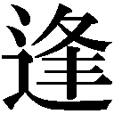い引きするつもりだったのかもしれない」
「そんなわけないでしょ」と梅子は建造をにらんだ。
「勝手に出ていったんだ。放っておけばいい」
「......お父さんのせいかも。お父さんが、いつもそうやって突き放すような態度だから、嫌になって出ていったんじゃないの？」
責める梅子に、「知らん」とぴしゃりと言い、建造は居間から出ていく。その頑なな態度に梅子はあきらめのため息をついた。
下村家に松子から電話が入ったのは、それから少し経った頃だった。芳子が訪ねてきたというのだ。安する梅子に、受話器の向こうで松子が説明する。
「今日一日、銀座でブラブラしてたんだって。あと、映画観て、それでうちに来たらしいわ......とにかく今夜はうちに泊まってもらうから。お母さんと代わるわね」
「梅子......ごめんなさいね」
聞こえてきた芳子の声に、梅子は安心して涙が出そうになる。
「もう。心配したわ。ね......どうしてなの？」
「どうしてかしらね......」
芳子はそう言って、しばし考える。自分でもはっきりとした理由はわからなかった。ただ、いつの間にか閉塞感に押しつぶされそうになり、このままでは息ができなくなってしまいそうな気がしたのだ。
「......ずっとうちの中にいて、ちょっと外の空気が吸いたくなったのかしら」
芳子の答えの真意を梅子が考えていると、建造が居間に入ってきた。「あっ、お父さん。お母さんが松子姉さんのところに来たって」
建造は素っ気なく「そうか」と返すと、受話器を差し出す梅子を手で制す。書斎へと戻っていく建造を目で追いながら、梅子は再び受話器を耳に当てた。寂しげな母の声が聞こえてくる。
「お父さん、怒ってるんでしょうね」
「うん......」
「せっかくだから、少し松子を手伝おうかしら。うちのことお願いできる？」
「うん......おばあさまもいるし、なんとかなるわ」
ところがその翌日、診療所に正枝が運ばれてきた。友達とボウリングに行って、腰を痛めてしまったのだ。初めて体験したこの遊びが楽しくて、つい歳を忘れてはしゃいでしまったと正枝は反省する。「これじゃ家事はできないし、芳子さんに戻ってもらわないと」
しかし梅子は首を振った。
「お母さんにも骨休めしてもらいたいし、私ひとりでなんとかする」
「大丈夫なの？ 仕事だってあるのに」
「大丈夫。なんとかなるわよ」
梅子の見込みは甘かった。診療所での仕事を終えてから家事をこなすのは、それほど簡単なことではなかった。
勤務を終え、夕食の買い物をして帰宅すると、どうしても信郎や建造より遅くなる。手早く料理できるものをと考えると、簡単なものか出来合いのものになってしまう。しかも、梅子の料理の腕はまだまだ芳子には遠く及ばない。当然建造や信郎から文句が出る。自分では何一つせず言いたいことを言う男性陣に、梅子は正直腹が立っていた。
「遅くなってごめんなさい。すぐに作るわ。今日はちゃんとうちで天ぷら揚げるから」
言いながら居間に入った梅子は、ギョッとした。建造と信郎がすでに親子丼を食べていたのだ。
「腹減ったから、『みかみ』から出前とった。おばあさまは部屋で食べてる」
食べながら平然と言う信郎に、買い物カゴをさげた梅子の手が震える。梅子はドンドンと足を踏み鳴らしながら台所に行くと、買ってきた食材を乱暴にしまいはじめた。台所から聞こえてくる耳障りな音に、信郎はようやくまずいと気づいた。建造の袖を引っ張り、小声でねる。
「なんか......梅子、怒ってます」
「え？」と建造は台所へと目をやる。梅子が鬼のような形相で戸棚に無理やり物を押し込んでいる姿が見える。鈍い建造でもはっきりとわかるくらい、怒っている。
「そうだ。私は仕事があるんだ。向こうで食べる」と丼を持ち、そそくさと書斎へと逃げる建造のうしろ姿を、信郎は呆然と見送った。
部屋中にとげとげしい空気が満ちている。梅子は無表情で淡々と布団を敷いているのだが、その静かさがかえって信郎には恐ろしい。つばを何度か飲み、ようやく信郎は口を開いた。
「ごめんな......」
「何が？」と梅子が振り向く。
「梅子が大変なのに......」
「大変なのに、何？」
「大変なのに、ごちゃごちゃ文句言ったり......出前とったりして」
梅子はじっと信郎を見つめる。その強い視線に信郎は少したじろぐ。
「そう怒るなよ。謝るから。機嫌直せよ」
「機嫌直せって、それは指図？」
「......機嫌直してください。すみませんでした」と信郎は畳につくくらい頭を下げた。
「......わかった」梅子の顔に浮かんだ笑みに、信郎は心の底からホッとする。
「よかった......梅子があんなふうに怒るなんて、初めてだからびっくりしたよ」
「私、そんなに怒ってたかな」
「......怖かった」
「......たまには怒ろうかな」と笑う梅子に、「いいよ」と信郎も笑みを返す。
「でも......お母さんは、全然怒らなかった。どんなに文句を言われても、不平ひとつ言わず家事をやってた......ひとりでやってみてわかったけど、すごく大変なのよ。時間もかかるし......外の空気を吸いたいっていう気持ち、少しわかる気がする。うちのこと忘れてのんびりしたって、罰は当たらないわよ」
「ああ」と信郎はうなずいた。
松子が孝介の服のすそをめくり、手足を手ぬぐいで乾布摩擦している。横で片づけをしながら芳子がねた。「孝ちゃん、寒くないの？」
「こうやって摩擦しているから寒くないんだって。皮膚も強くなって、いいらしいのよ」
「そう。育児の考え方ってどんどん変わるのね......」
松子から、せっかくだからどこかに遊びに行くよう勧められても、行きたいところが思いつかない。家を出ても、結局こうやって家事をするしか時間をつぶすすべがないのかと思うと、芳子はなんだか憂鬱になってくる。そこへ玄関のチャイムが鳴り、「どうも」と昌子が入ってきた。芳子の顔を見て、「あら、こんにちは」と挨拶するが、すぐに孝介へと駆け寄る。
「孝ちゃ～ん、こんな薄着で寒いわねー」と服のすそを戻す昌子に、「あの」と松子が声をかけるが、昌子はまるで聞いていない。「さ、あったかくしましょうね」とさらに孝介に上着を着せる。「ほら～、ご機嫌よ」と孝介を抱え上げる昌子に、松子は何も言えなくなる。
「松子さん。家事のことは、若い人には若い人のやり方があるんでしょうよ。でもね、子育ては昔と今で変わるもんじゃありませんからね」
芳子は松子が何か言い返すのではないかと、ハラハラしながらふたりを見守る。しかし、松子は「たしかにそうですね」と笑みを浮かべた。そして、芳子へと顔を向ける。「じゃあ、お母さん、いろいろと教えてね。まだ、うちにいてくれるんでしょう？」
「え......」戸惑う芳子にかまわず、松子は昌子へと視線を戻した。
「母がまだしばらくはいますので、昔から変わらないやり方を教えてもらいます」
そう言われると、昌子は悔しそうに松子を見るしかなかった。
日曜日、松子は夫の加藤を連れ、下村家を訪れていた。孝介の面倒は芳子がみてくれている。久しぶりの夫婦での外出に、松子はどこかウキウキしていた。そんな姉に、「喜んでる場合じゃないでしょ」と竹夫が釘を刺す。今日は芳子の家出問題を話し合うために松子も竹夫もやってきたのだ。すかさず竹夫が切り出す。「その後、お母さんの様子は？」
「うちで、いろいろ家事を手伝ってくれてるわ。正直言うと、結構助かってるの」
「お父さんは？」と竹夫が今度は梅子にねる。
「ほっとけって......」
「だからって、ほっとくわけにもいかないだろう。俺たちでなんとか解決策を考えないと」
ずっとそばで芳子のことを見ていたんだから何か思い当たることはないかと竹夫にかれ、梅子は考える。しかし、かいがいしく家事をするいつもと変わらぬ芳子の姿しか思い浮かばない。そして、はたと気がついた。いつもと変わりないのが問題なのではないか、と。
「私、お母さんの代わりをやってみて思ったの。お母さん、家の中で無視されてたのかなって」
「そうね」と松子も同意する。「私も無視されてるって感じることあるわ」
「えっ、そうなのか？」と加藤は驚く。
「男のほうに全然自覚がないところが問題なのよ」と松子が非難めいた視線を加藤に向ける。
「今の話からすると、問題はお父さんにあるってことになる......たしかに、あのお父さんと三十年一緒にいたら、いいかげん頭にくる頃かもしれないな」
「私なら、三年ともたないわ。梅子は？」竹夫に同調するように松子もうなずいた。
「......そもそも結婚しないと思う」
娘ふたりにこうまで言われる父親って......と竹夫は少し建造がかわいそうになる。
「とにかく、今回は時間をかけても、お父さんにわかってもらわないとだめだな」
建造に芳子のありがたみをわからせる──それが三人で話し合った結論だった。
梅子が出前の器を返しに「みかみ」を訪れたとき、店の前をアサが通りかかった。「あ、村田さん」と思わず口にした梅子の言葉に、和也と康子が通りに目をやると、康子が言った。「あの人、アメリカ人の旦那さんと再会できたのかしら」
「えっ、アメリカ人？」と梅子が振り向く。
「そうなのよ。戦前にアメリカ人と恋に落ちて、結婚したんだって。でも戦争で引き裂かれて......やっと旦那さんの居場所がわかったらしいのよ。この間、話聞いて泣いちゃった」
梅子が怪そうな顔で康子の話を聞いていると、近くのテーブルの客が「知らないのか」と話に入ってきた。「あの人、あっちこっちでホラ話をして回ってんだぞ。結構いい家のご隠居さんらしいけど、うちじゃ家族に相手されてないんだろうな。つい寂しくて、話を聞いてくれる人を見つけちゃ、ホラ話をしてんだよ」
「なんだ。泣いて損した」という和也の言葉を聞きながら、梅子はふと芳子のことを思った。
アサの息子があてにならないことがわかり、梅子は弥生に連絡した。弥生の実家の病院の経理を担当している税理士を紹介してもらおうと思ったのだ。弥生はすぐにベテラン税理士を派遣してくれ、どうにか税金の申告の期限に間に合わせることができた。
翌日、梅子は松子に呼び出され、加藤家へと赴いた。
松子は、昌子と対決するつもりだった。今日こそは、これ以上家事や育児に口を出さないでほしいとはっきり言うのだ。「あなたからもちゃんと言ってよね」と言われ、加藤は戸惑う。
「でも、オフクロだって悪気があるわけじゃ......困ったな」
「板挟みで困ってる被害者みたいな顔しないで」
「そんなことないよ......わかったよ。言うよ」
「お願いね......私、お母さんを見てて、言うべきことはちゃんと言わなきゃって思ったの。だって......お母さんがお父さんに、いつでも言いたいことをちゃんと言えてたら、家を出ようなんて思わなかったんじゃないの？」
松子に言われ、「そうなのかしら......」と芳子は考える。しかし、よくわからなかった。
「この間、梅子や竹夫とも話して、そうなんじゃないかってなったのよ。でも、お母さんにどうこう言う前に、自分のことを解決しなきゃ」
「それで、梅子さんはどうして？」と加藤がねると、梅子が答える前にチャイムが鳴った。
家に入ってきた昌子は、梅子への挨拶もそこそこに孝介のもとへと向かった。「孝ちゃ～ん、今日は孝ちゃんに積み木を買ってきてあげたのよ」
買い物袋から積み木を出した昌子に、松子は言った。「それは孝介には早すぎると思います」
「こういうことは早いほうがいいのよ。だってね──」
昌子の言葉を加藤がさえぎる。「孝介の育児のことは、俺たちに任せてくれないかな」
昌子は驚きの表情で息子を振り返る。「何言ってるのよ、私は──」
「私が母親ですから」とすかさず松子が口を挟む。昌子の顔色が変わった。
「そんなことはわかってますよ。でもね、この子は加藤家の跡取りですよ。松子さんの言うとおりにしてたらどうなるの。孝ちゃんに薄着ばっかりさせて。風邪ひいちゃうじゃないの」
待ってましたとばかりに、「梅子、お願い」と松子は梅子をうながす。
「あ、はい......赤ちゃんもお母さんと同じくらい着ていれば十分なんです。昔のように何枚も着せすぎると、皮膚が弱くなって風邪をひきやすくなってしまいます」
「というお医者様の意見もありますので」と松子が梅子の言葉を引き取る。
「な、梅子さんというお医者さんだってついてるし、大丈夫だよ」
「そう......みんなして、私を邪魔にするのね。あー、そう......ここには私が来ないほうがいいって言うのね。わかりましたよ、もう来ませんよ」グスグスと鼻を鳴らしながら、昌子は腰を上げた。「誰も、私のことなんかわかってくれないのよ」
「......私、わかりますよ」
ポツリと口にした芳子を、みんなが見つめる。
「昌子さん......ご主人はとうに亡くなって、ひとり息子の加藤さんが結婚して、ひとり暮らしでしょう。私にはお父さんがいて、梅子もうちにいて......でも、家族と一緒にいて、いろいろ話をしてても......それでも寂しいってことがあるのよ......家族がいるのに、そんなことがあるかって思うかもしれないけど」
「ううん、わかるわ」と梅子が強くうなずく。「私が一生懸命家事をやっても、お父さんもノブも当たり前みたいな顔をして......自分がなんだか価値のない人間だって言われたような気がした。なんだか寂しかった」
「そう言われると、私もときどきそんなことがあるわ」と松子が続く。
「そうね......旦那が生きてた頃は、私も」と昌子。
「ありがとう......わかってくれて」と芳子が梅子に微笑む。
「ううん......お礼を言うのは、私......ありがとう、お母さん。私たちのことを一生懸命世話してくれて......私たちがこうしていられるのは、お母さんのおかげ......もっと、いつもちゃんと感謝すればよかった......ありがとうって、言えばよかった」
「......ううん......十分よ......今ので十分......」感極まったように芳子は梅子を見つめる。
そんなふたりを見ていた松子が、ゆっくりと昌子のほうへと顔を向ける。
「......お義母さん、すみませんでした」
頭を下げられ、昌子が驚く。「私......なんでもかんでも自分でやらなきゃって思ってました。お義母さんをもっと頼って、ここは自分でやるけど、ここはお願いしますって言えばよかったのかもしれません。いつも私たちを心配してくださって、ありがとうございます」
「ううん......いいのよ」
昌子の表情がやわらいでいく。こうして加藤家の嫁姑問題はどうにか丸く収まったのだった。
「今日は終わりでいいですね」
待っている患者がいないのを確認して、梅子が八重子に言った。時計の針ももうすぐ午後六時になろうとしている。今日は早く帰ってきてほしいと建造に頼んでいた。梅子はある計画を実行しようとしていたのだ。八重子がうなずくのを見て、梅子は白衣を脱ぎはじめる。そのとき、ドアが開き、アサが診療所に入ってきた。「先生、こんにちは」
「こんにちは。どうぞ」と梅子は白衣を戻し、自分のイスに座った。やっぱりお腹の具合がよくないと言うアサを、梅子は診察しはじめる。しかし、悪いところは見当たらない。
そう告げると悪びれることなくアサは言った。「ここに来て、先生と話してるとよくなってくるんですよ。そう言えば、息子がもうすぐ帰ってくるそうです。長崎から」
「そうですか」とうなずき、梅子はすかさずねた。「それで、アメリカ人のご主人とは再会できたんですか？」
「ええ、もうすぐ」と笑顔で答え、アサはハッとする。「どこでお聞きになったんですか？」
「ちょっと......『みかみ』で」
「あらー、せっかくのお話を途中をはしょって聞いてしまったのね」
「えっ、どういうことですか」
「だって、ロシア人の彼が亡くなってから、アメリカに渡って今の旦那と出会うまで、いろいろと途中のお話が。次の患者さんもいないようですし、お話ししましょうか」
戸惑う梅子に首を振り、八重子が割って入った。「すみません。病気がなんともないようでしたら、もう来ないでいただけませんでしょうか。患者さんがいないときでも我々はいろいろと仕事があるんです。ホラ話にお付き合いする時間はないんです」
厳しい言葉にアサの表情が変わる。そのまま無言で立ち上がると、診療所を出ていった。
「また、別のところであのお話をするんでしょうか......」
「さあ、私たちには関係ないことです......あっ、ツケを払ってもらうのを忘れました。まあ、しょっちゅう来られるよりいいでしょう」
「はあ......」
そのとき診療所のドアが開き、再びアサが入ってきた。「すみません。お金を払うのを忘れました」と財布を出す。「もう来ないでしょうから、払っておきませんとね」
「......二百円です」
「じゃ、二百円」と八重子に渡し、アサは出ていく。梅子は反射的にそのあとを追っていた。アサの背中に「あの」と声をかける。振り返るアサに、梅子は言った。「また来てください。ロシアから、どうしてアメリカに行くことになったのか......ぜひ聞かせてください」
不思議そうに梅子を見ていたアサの顔に、次第に笑みが広がっていく。
「いいですよ。じゃあ、また」
診療所に戻った梅子は、「どうして」と問う八重子に言った。「診療所の経営のためには病気じゃない人は追い返す。それって正しいことなんでしょうか......患者さんは、医者に話を聞いてもらって気持ちが安定するっていうことがあります」
「だからって、ホラ話の相手をする必要は」
「きっと寂しいんです、あの人も......時間のある限りは、聞いてあげたいと思います」
本当にこの人は......と八重子は心の中でため息をつく。しかし、そんな梅子をなぜか許してしまう自分がいる。自分の変化に八重子は苦笑するのだった。
六時には帰ってきてほしいと言いながら、梅子はまだ帰ってないのか......薄暗い室内を電灯をつけ、脱いだ上着をハンガーにかけながら、建造は芳子がいないことを実感する。新聞を読んでいると、ようやく梅子が帰ってきた。
梅子は建造のそばに座ると、「お父さん......」とあらたまったように話しはじめる。
「医者は患者さんの話をできるだけ聞いてあげるようにしたほうがいいわよね」
「ああ......それがどうした」
「どうして、お父さんはお母さんの話をもっとちゃんと聞いてあげられなかったの？」
「え......」
「お母さんが俳句をやりたいって言ったときだって、ろくに話も聞いてあげなかったんでしょ」
「患者と家族は違う」
「どう違うの？」と梅子に問われ、建造は言葉に詰まった。
「お父さんだって、仕事が大変ならお母さんに愚痴をこぼしたりすればいいんじゃないかな」
「そんなことができるか」と建造は新聞を広げ、話を終わらせようとする。すかさず梅子が言った。「お母さんが今、康子さんの店に来てるの。お父さんが帰ってきてくれって言ったら、帰るって」
「......どうして俺がそんなことを言わなきゃならん」と建造は新聞で顔を隠す。「うちに帰りたければ、帰ってくればいいだろ」
「お父さんから、帰ってくれって言って」
「知らん」
「そう。じゃ、そう言ってくる。お父さんはお母さんと話す気はないって」
扉が閉まる音を聞くと建造は新聞を置いた。梅子の言葉が心をざわつかせる。
店に入ってきた梅子が残念そうに首を振るのを見て、芳子は「そう」とため息をつく。力なく芳子の前に座ると梅子は言った。
「お父さんがお母さんに帰ってくれって言ったら、これからいろいろなことが変わる気がしたんだけど......ときどきはねぎらいの言葉をかけたり、ちょっと親身に話を聞いたり......」
「どうするの？ ここで少しねばってる？」
「うん。待ってみる」と梅子は康子にうなずく。そのとき、不意に芳子が席を立った。
「梅子、ありがとう」と笑みを見せ、店を出ていく。
梅子の言ってることは正論だ。患者も家族も同じだ。家族なんだから言葉にしなくてもわかってもらえるというのは、自分の傲慢だったのかもしれない......。
これまでのことを思い返し、建造が立ち上がったとき、玄関の扉が開く音がした。続いて聞こえてきたのは「ただいま」という芳子の声だった。建造は慌てて座り直し、新聞に手を伸ばした。
「お夕飯、今作りますから」と芳子は建造に言い、台所に向かう。包丁がまな板を叩く小気味のいい音を聞きながら、建造は「おい」と芳子に声をかけた。
「はい」
「......梅子が作る飯は、まずくていかん......お前じゃなくちゃ、だめだ」
包丁の音が止まった。
「......もう出ていくな......頼む」
「......わかりました。勝手に家を空けて、すみませんでした」
「ああ」
再び包丁の音が聞こえてきた。建造はなんとも言えない安心感に包まれる。当たり前のことが当たり前にある。それは、このうえなく幸せなことなのだ。
第二十二章 意地の上塗り
テーブルに置かれた二つの鍋の中で、ぐつぐつと牛肉が煮えている。すき焼き鍋を囲むのは下村家一同と松子一家、そして竹夫と静子のカップル。今日は芳子の呼びかけで、久しぶりに家族がみんな、顔をえていた。一同は洗濯機の話題で盛り上がっていたが、その話題に入れない建造は加藤に仕事の近況をねた。慌てて肉を飲み込み、加藤が答える。
「うちの会社が今度、道路の建設にも乗り出すことになりまして、その営業を担当してます」
「ほう。大したもんだな」
「これからの世の中は車社会でしょう。うちも自動車の部品の仕事が多くなってるんですよ」と信郎も話に加わった。
「今年は自動車の生産が三十万台近くまでいくそうですからね」
加藤の話に一同は「へえ」と感心する。ということは、工場を大きくするという信郎の夢も、案外遠い話ではないのかもしれない。
「竹夫はどうなんだ」と建造は竹夫のほうを向いた。
「特に問題もなくやっています。実は今度、家具の輸出にも手を広げようと思ってます」
「飛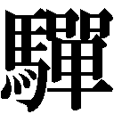の家具なんです」と静子が誇らしげに言う。昔気質の頑固な飛の職人から輸出の許可をもらうのに、竹夫はかなり頑張ったのだ。
「すごいじゃない」とすかさず正枝が褒めたが、そこに建造が水を差した。「すごいと言っても他人が作ったものだろう。その点、加藤君と信郎君は大したものだ。医者はどんなに偉そうな顔をしてても、モノを作り出すことはできない」
職業に貴賤はないが価値の高低はあると持論を展開する建造に、竹夫が怒りを抑えつつねる。
「流通や販売が製造より価値が低いということを、もっと論理的に説明してもらえますか」
「金けにばかり必死になっていると、いつかしっぺ返しを食う」
「金けばかりだなんて」とムキになって反論する竹夫を、「もういいでしょ」と静子が止める。
「お前が口を出すな」と言い放つ竹夫に、「静子さんにあたるな」と建造がそれを制す。
場の空気は一気にピリピリしたものに変わり、梅子らが必死になごませようとしたのだが、二度と元に戻ることはなかった。
不機嫌そうに帰る竹夫を梅子は追いかけ、静子ともども「みかみ」へと引っ張っていった。
「お父さんに認めてもらえないのは、つらいわよね。私もわかる」
「梅子は医者になって、開業もして......お父さんは、梅子のことは今じゃちゃんと認めてるよ」
「私だって、今も毎日小言ばっかり言われてるわ」
「小言を言うのは、ある程度認めてる証拠だ......お父さんは結局、俺が医者になるのをあきらめたことを許してないんだ」
「......だとしたら、どうなの？」と静子が苛立ったように言う。「お父さんに認められないとそんなに嫌なの？ オヤジなんかどうでもいい、自分は自分の道を行くって思えばいいじゃない」
「そう思ってるさ」
「思ってない。ウジウジして。そんなふうに思うのは、自分に自信がないせいでしょ」
「......自分に自信がなくてウジウジしてる......俺のことをそんなふうに思ってたのか」
噴き出しそうになる怒りを懸命にこらえながら、竹夫は言う。「そういうことじゃ......」と静子が言葉を探していると、幸吉が店に入ってきた。すぐに静子に目を留め、「このべっぴんさんは......竹夫君の彼女だったな。ふたりはいつ結婚すんだ」
いきなりズケズケとそんなことをかれ、竹夫は「しません。結婚なんて」と反射的に答えた。そして、「帰るぞ」と席を立つ。だが、静子は席を動かない。「私、まだいる」
「俺は行くぞ」と竹夫はひとりで店を出ていってしまった。
梅子が部屋に戻ると、信郎がクッキーを食べながらのんびりと雑誌を読んでいた。自分がいらぬ世話を焼いたせいで、竹夫と静子がケンカをしてしまい、あろうことか結婚なんかしないとまで竹夫に言わせてしまった......落ち込みながらことの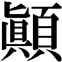末を話した梅子に、信郎は言った。
「でも、ふたりのことは本人たちに任せるしかないんじゃないか。梅子が世話を焼いても、余計ややこしくなるだけじゃないのか」
まさに図星を指されて、梅子は腹が立った。「何よ、全然親身じゃないんだから......あっ、それ、私が患者さんからもらったクッキー！」
梅子は信郎の横に置いてあったクッキーの缶をのぞき、「全部食べちゃったの？」と目を三角にする。「私、食べてないのに......」
「ごめん......」
「もういい」と部屋を出ていこうとする梅子に、信郎は慌てて言った。
「俺が竹夫さんと話してみようか。男同士で、本音を聞いてみるよ」
「ありがとう......でも大丈夫？」
「任せとけって。クッキー、ごめんな」
「ううん」と梅子は笑顔になる。だが、ふと顔をゆがめ、お腹を手でさする。
「どうした？」
「なんか、胃のあたりが」
「肉、食いすぎだろ」と信郎は苦笑した。その上、まだクッキーを食べようとしたのだから、まったく梅子らしい。
次の晩、信郎は「みかみ」に竹夫を呼び出し、一緒に飲むことにした。助っ人として加藤も呼んである。既婚者ふたりが結婚の魅力を説き、竹夫を結婚へと踏み出させようという作戦だった。
「ところで、お義兄さん。どうですか？ 結婚生活は」
前振りも何もなく、いきなり信郎が加藤に切り出す。「うん、なかなかいいもんだよ」と答える加藤のセリフもわざとらしい。「そうですよね。やっぱり結婚っていいもんですよね」と信郎が大きくうなずいたとき、竹夫が合点がいったように「ははん」と笑った。
「そういうことですか。僕に結婚生活はすばらしいという話をして、早く結婚させようと。今日はそういう趣旨ですか。たぶん、梅子あたりが仕組んだんでしょう」
慌てて否定するふたりに余裕の表情を見せ、ではご意見を拝聴しましょうと竹夫は座り直す。あらたまってそう言われると......とふたりは戸惑う。そこに幸吉と木下がやってきた。すでに酔っているらしく顔がかなり赤い。遠慮なく同じテーブルにつくや、康子にビールを注文する。話題が結婚だと聞き、幸吉は言った。
「そういえば竹夫君、結婚なんてしねえとか言ってたな。あんな彼女がいるのにもったいない」
「だから、聞いてたんですよ。結婚がそんなにいいんですかって。大先輩にも聞きたいな」
「いいですよね、結婚は」「いいよな」と加藤と信郎が畳みかけるように言う。だが、幸吉は「よくねえよ」と即答した。
「じゃあ、なんで結婚しろって言うんですか」
「なんでって、そりゃお前、決まってるだろ。独身で自由気ままに暮らしてる奴を見ると腹が立つから、こっちの仲間に引き入れようとしてんじゃねえか」
然とする信郎と加藤をよそに、「やっぱりそうですか」と竹夫がうなずく。
「そりゃそうだろ。お前ら、結婚してそんなにいいことがあったか？ 汗水たらして働いて、せっかく稼いだ金をみんな吸い取られてよ。しかも、どうでもいいことでゴチャゴチャ言われて」
「まあ......今の言葉はだいたい事実とは合致してますが」と加藤は思わず認めてしまった。
「松ちゃんなんか、いかにも口うるさそうだな」
「実はそうなんですよ」と加藤は愚痴をこぼしはじめた。かなりたまっていたのか、さっきのセリフとは違う感情のこもった言葉を次々と吐き出した。
「その点、梅ちゃんはそういうことはなさそうだな」
幸吉がそう言うと、竹夫と信郎は同時に首を振る。
「梅子は意外に口うるさいですよ」
「そうそう。昨日も俺が部屋に置いてあったクッキーを食っただけでブツブツ言って」
「あいつは、特に食いもんにはうるさいからな」
「女ってのはそういう動物なんだよ。目先のことばっかりグチグチ言ってよ。物事をこう、大きく見るってことができねえんだ」
幸吉の言葉に、みんなが大きくうなずく。勢いに乗った幸吉は、こう締めた。「要するに、結婚って制度はな、女に都合よくできてんだよ。男は損するばっかりなんだよ」
「じゃあ、やっぱり結婚はしないほうがいいという結論でいいですか」
そう言う竹夫に信郎と加藤が「そうそう」と首を縦に振ったとき、店に梅子と松子が入ってきた。入口のほうを向いていた幸吉はハッとなるが、背を向けている信郎と加藤は気づかない。さらにふたりで、いかに結婚という制度によって男がひどい目に遭っているかを語り合う。
「今日はなんだかスッキリしたなぁ」と加藤が笑顔になる。話が一段落し、ようやくふたりは幸吉の目配せに気づいた。恐る恐る振り返ると、松子と梅子が仁王立ちしていた。
「結婚って、そんなにつらいの」と冷たく言い放つ松子。
「そんなに吸い取られてるの」梅子も射るような目で言う。
姉妹はそれぞれの夫にいいわけする間も与えず、プイと店を出ていく。加藤は慌ててあとを追ったが、信郎はタイミングを失ってしまい、仕方なくひたすら酒をあおるのだった。
翌朝、信郎は謝ったのだが、梅子の中のわだかまりは消えなかった。複雑な思いを抱え、梅子は静子に電話した。昨夜の信郎と加藤との話し合いのせいで、竹夫との関係がこじれてしまったのではないかと心配になったのだ。
別にいつもと変わらないという静子の答えに、梅子はとりあえずホッとする。むしろ、いつも自分たちのことを気にかけてくれて、申し訳なく思っていると言う静子に、梅子は言った。
「当然じゃないですか。兄と、兄が好きな人のことを心配するのは」
「ありがとうございます。だったら......あの、相談に乗ってほしいことがあるんです」
静子の声のトーンが少し落ちる。会社の電話ではできない話だというので、その夜、「みかみ」で会うことにした。
静子の話は、過去の男のことだった。田舎にいたときにしつこくまとわりつかれた男がおととい、アパートの前に現れたというのだ。
「私、今さら話すことなんかないって逃げて......その夜も昨夜も友達の家に泊まってるんです。乱暴な男で、何をするかわからないところがあって......」
以前も男関係のトラブルがあったから竹夫には話せなかったと言う。「これからどうしたらいいんでしょう......」と途方に暮れる静子に、「私が、なんとかします」と梅子は答えた。
家に戻った梅子は信郎に説明を終えると、言った。「なんとかしてあげて」
「え、俺？ でも、警察に相談しても、こんなことで何もしてくれないだろ......」
「だからノブ、明日の夜、静子さんのアパートに行って、その人が来てたら、話をして、もう来るなって言ってよ。この間、せっかくの機会を台無しにした罪滅ぼしよ」
そう言われたら引き受けるしかない。「わかったよ」とうなずく信郎に住所と男の特徴を説明し、最後に梅子はこう付け足した。「結構乱暴な人らしいから、気をつけてね」
「えっ、先にそれを言えよ......」
勤務を終えた八重子と入れ替わるように、静子が診療所へとやってきた。今、アパートに信郎が行っていて、その男の人と話ができたら電話が入ることになっているのだ。
「すみません......いろいろと」恐縮しながら静子が中に入ると、そのうしろからヌッと大柄な男が現れた。振り向いた静子の表情が凍りつく。
「よう」
静子は男から逃げるように梅子のそばに歩み寄り、小声で言った。「この男です......」
「えっ!?」
男は薄笑いを浮かべながら、静子のほうへと近づいてくる。梅子は気丈にも男と静子の間に割って入った。「......け、警察呼びますよ」
「べつに取って食いやしねえよ。なんで俺から逃げたんだ」
「あなたと何かあったのは昔でしょ。当然だと思います」と梅子が男に言った。
「そうだ......ずいぶん昔だなあ。戦争前だったもんなあ。お互い、まだこんなだった」と男は手で子どもの背くらいの高さを示す。梅子がぽかんとそれを見ていると、信郎と竹夫が入ってきた。
「あ、正岡さん、もう来てたんですか」
「どうも」と正岡と呼ばれた男は、信郎に会釈する。
「どういうこと？」
「アパートの前でこの人と会って話をしたんだ。で、いっそ竹夫さんも一緒に話をしたらどうかと思って、この人を先に行かせて、俺は竹夫さんを呼びに行ってたんだ」と信郎が説明する。
「話をするって何を......あ、それより、まだこんなだったって、どういう」
「この人、小学校の同級生なんです。私のこと好きだ好きだって追いかけ回して」と静子。
「......初恋だったんだ」と正岡は照れる。
よくよく話を聞いてみると、正岡は単に静子の父親に頼まれ、東京出張のついでに見合い話を持ってきただけだった。想像していたのとあまりに話が違っていて、梅子は呆然とする。
「親父さん、心配してたぞ。体の調子もよくないみたいだし......お前、ちっとも連絡してないそうじゃねえか。この人はどういう人なんだ。結婚の約束でもしてるのか？」
竹夫を見ながらねる正岡に、静子は口ごもる。そのとき、竹夫が正岡の前に出た。
「結婚の約束はまだしてませんが、お付き合いはしています。いずれ結婚するつもりです」
静子は驚いたように竹夫を見つめる。
「なので、この見合い話は......」と竹夫は静子をうかがう。
「......そうなの。ごめんなさい」
「そうか......」正岡は少し寂しそうに静子を見たが、すぐに竹夫に目を向け、言った。
「わかりました。静子を幸せにしてください」
「はい」
正岡が出ていき、一同は安の息をつく。竹夫と静子は熱く視線を交わしている。
「すまん......この間はあんなこと言って」
「あれからずっと黙ってるから、もうだめなのかなって思ってた」
「結婚のことは、いずれちゃんと話さなきゃって思ってた......でも、結婚するからには、お前を幸せにする自信がなきゃだめだと思うんだ。お前はこれまでいろいろと苦労してきたんじゃないか。結婚するからには、苦労はさせたくない。楽させて、幸せにしてやりたい。そのためにはまず仕事なんだ。もう少しだけ待ってくれ」
竹夫の誠実な思いに、静子の胸が熱くなる。「ありがとう」と自然に笑みがこぼれた。
数日後、竹夫が新しく大きな仕事に取り組みはじめたようだという電話が静子から入った。静子との結婚に向かって、自分に気合いを入れたのかもしれない。信郎も今までよりも高度な技術が必要な仕事を受け、張り切っていた。結局、男というのは仕事が一番なのだなと梅子は思う。
自分も仕事を頑張ろうと机に向かったとき、またお腹に違和感を覚えた。最近どうも調子がおかしい。でも、普通の腹痛の症状とは違うような......考えているうちに、梅子はあることに思い至った。
その日、昼食の場に梅子はいなかった。用事があるから昼食はいらないとどこかに出かけていったのだ。みんなが食後のお茶を飲んでいるときに梅子は帰ってきた。その硬い表情に、幸吉が「お前ら、まだケンカしてんのか？」とねる。信郎と梅子はそんなことないと首を振った。
「ま、せいぜいケンカすることだ。俺と母ちゃん見てみろ。ケンカしちゃ仲直りして、その何百回という繰り返しで今日があるわけだ」
「雨降って地固まる、ですね」と光男が言う。
「そうなんだよ。俺たちなんか固まりすぎだよ」
「......あの、それより」と梅子が何か言おうとしたとき、「仕事だ、仕事」と信郎が立ち上がった。幸吉も時計を見て、「よし」と腰を上げる。
金属を削る大きな音が響く中、梅子はゆっくりと信郎のもとへと歩を進めた。梅子の姿に先に気づいたのは幸吉だった。「どうした、梅ちゃん」
「ノブ......あのね」
しかし、旋盤の音が邪魔になって何を言っているのかわからない。「何？ 聞こえない」
梅子は言い直すが、やっぱりよく聞こえないようだ。
「だから！」と梅子が声を張り上げたとき、幸吉が木下に機械を止めさせた。
「赤ちゃんができたの！」
工場中に響きわたった自分の声に、梅子はハッとする。だが、それ以上に驚いたのは信郎や幸吉だった。信郎は放心状態で固まっている。「梅子......」
「梅ちゃん、もういっぺん言ってみろ」
「......赤ちゃんができた」
「ほ、本当か、梅ちゃん」
「......さっき、産婦人科で確かめてきた。間違いないだろうって」
「そうか......やったな！ ノブ！」
幸吉は梅子と信郎の手を握ると、「母ちゃん！ 母ちゃん！」と家に駆け戻っていく。
梅子は信郎と照れたように視線を交わし合うのだった。
妊娠したからといって診療所を閉めるわけにはいかない。だが、つわりがひどいとどうしても診療は難しくなる。梅子は建造に相談して、帝都大学付属病院から助っ人として弥生を派遣してもらうことにした。久しぶりの再会と梅子の妊娠を祝ったあと、弥生はしみじみと言った。
「梅子がお母さんか......信じられない。どうなの？ お腹の中に子どもがいるって」
「まだよくわからない......不思議な感じ......私、自分がちゃんと大人になったっていう自覚がないから、母親になんかなっていいのかなって」
「自分が子どものほうが子どもの気持ちがわかるかもよ」
「そうかな......」
八重子と挨拶を終えると、弥生はあらためて診療所を見回した。「開業医か......」
「弥生さん、いつお父さんの医院を継ぐの？」
「本当ならとっくに継がないといけないのよ。でも、私はまだ大学にいたくて。研究を続けたいの。今、気管支ぜんそくの治療法を研究しててね。まだまだ時間がかかるのよ」
「そう......でも弥生さん、もともとお父さんの医院を継ぐために医専に入ったのよね」
「最初はね。でも、今は研究が好きなの。難しい病気の患者さんが、この研究で治るかもしれないと思うと、力が入るのよね」
「へえ。人ってどこでどうなるかわからないものね。だったら、内科医の男性と結婚して、旦那さんに医院をやってもらえばいいんじゃないの？ そしたらお父さんも納得するし、弥生さんは研究を続けられるじゃない」
「あ、そうね......だけど、そんな都合のいい相手がいるわけないじゃない」
そこにフラッと山倉が入ってきた。「やあ、梅子さん。おめでただそうですね」と相変わらずの軽い調子で梅子を祝う。
「夜勤明けのくせに何しに来たの」と突っかかる弥生を、「自分だって」といなし、山倉は梅子に申し出た。「僕も手伝いますよ。町医者の経験もしてみたいし」
「だからって、今来る必要ないでしょ。ふたり医者がいてもしょうがないんだから」
以前と同じふたりのやりとりに梅子は笑った。
会社を今よりも大きくするために竹夫が挑戦しようとしていたのは輸入業だった。現地に渡って直接交渉するわけにはいかず、手紙と国際電報のやりとりだけで契約を決めるのはけだったが、早く権利を獲らないと商売敵に先を越されてしまう。
電話を置いた竹夫は「銀行に船積み書類が届いたらしい」と部下のほうを振り向いた。いよいよ輸入という新しい仕事の一歩を踏み出せると、部下の森下たちもうれしそうだ。
「これから入金しに行って書類を受け取ってくる」
「百万円ですか」と森下の表情が引き締まる。その額の大きさに静子は目を見開いた。
「そんなお金、どうしたの？」
「借りたに決まってるだろ」
「ずいぶん、思い切ったのね」
今回の品はまだ日本には出回っていない新しいものだ。当たれば大きな利益が見込める。たとえリスクがあろうが、勝負するべきだと竹夫は判断したのだ。
「ああ......じゃあ行ってくる」
出ていく竹夫を、静子は思わず追っていた。ドアの外で「ねえ」と呼び止める。
「私のことを楽させてやりたいって言ってくれたけど......私はべつに......」
「自分がどこまで行けるか、試してみたいんだ」
「そう......」
「この仕事がうまくいったら、結婚しよう」
静子は不安を振り切るように、うなずいた。
一方、信郎は新たに挑戦した難しい部品の製作に成功し、満足感に浸っていた。部屋で飽きることなく自分の作った部品を眺めている信郎に、「よかったね、うまくできて」と梅子が微笑む。信郎はクルッと梅子のほうを向くと、「俺、気づいたことがあって」と話し出す。
「俺、ずっと工場をでかくしたいと思ってた......仕事増やして、新しい機械入れて、人雇って、工場をどんどん大きくしていくんだって。でも......なんか違うかもしれないっていう気がしてきたんだ。工場をでかくするよりは、うちにしかできないことをするべきなんじゃないかって。大きい工場で、最新のでかい機械使って、安いコストでモノを作ってるところはいくらでもある。俺もそういうとこに対抗したいって思ってた......でも、そういうことじゃないんだ。でかいとこと勝負しても限界がある。そういうとこに勝つには、コストじゃないんだ。うちにしかできないことをやるしかない。安いからじゃなくて、値段が高くても、お宅に頼みたいって言われるようなモノを作れるようにならなきゃいけないんだ」
「そう......」
「そのためには、何が必要なんだろうな」と信郎は再び手の中の部品に視線を戻す。「生まれてくる子に、自慢できるような仕事しないとな......」
そんな信郎を、梅子はまぶしそうに見つめるのだった。
入金も完了し、契約は成立した。卸のルートはすでに手筈がついている。かなりの利益が見込めるはずだ。つい表情がゆるむ竹夫の前にお茶を置き、静子は言った。「おめでとう」
「ああ......君は、俺が金けにのめり込んでるように見えて、少し心配なんだろう」
「え......そうね、少し」
「でも、金けだけが目的じゃない」
竹夫は立ち上がると、自分のデスクの上に置いてあったカップを手に取った。
「元はと言えば、国内の小さな村で作ってるこの食器を外国の人に紹介したいと思って、この仕事を始めたんだ......海外でも売れるようになれば、生産地の人も喜んでくれる。でもな、会社が小さいとできることにも限界があるんだ......今回の輸入がうまくいけば会社の資金力も上がる。そうすれば日本の職人が作ったいいものを、もっと世界に紹介できるんだ」
大事そうにカップを手にしながら話す竹夫が、静子には輝いて見える。不意に竹夫がねた。
「どんな家がいい？」
「え？」
「俺たちの住む家だよ」
「気が早い」と静子はうれしそうに微笑んだ。
静子から、いろいろあったが結婚話がうまく運びそうだという連絡を受けた梅子は、ふたりで下村家に来て、新しい仕事のことや将来について建造に話すよう提案した。結局、竹夫と建造の間にあるわだかまりが根本的な問題なのだから、そのもつれた糸をほぐすことでより早く結婚にたどり着けるのではないかと思ったのだ。
その夕食の席。竹夫と静子に向かって梅子や信郎が、妊娠していることがわかった今、いかに戸惑っているかという話をして盛り上がっていたのだが、それに水を差すように建造が言った。
「今日はなんだ。梅子のお祝いはこの間やっただろう」
「あのときは、竹夫兄さんはいなかったし......」
しかし建造は、竹夫ではなく信郎に話しかけた。「今、新しい仕事をやってるそうだな」
信郎は今の仕事がいかに技術的に困難なものかを熱く話しはじめる。
「......あ、こんなこと言ってもしょうがないですよね」
「いや、かまわん。頑張ってるようだな」
「お父さん......竹夫兄さんも頑張ってるのよ」と梅子は思わず口を挟む。
「余計なこと言うな」
「いいじゃない」と竹夫を制し、梅子が建造に竹夫の新たな挑戦を説明しようとする。そこに電話のベルが鳴った。電話は、竹夫の会社からだった。芳子に差し出された受話器から竹夫の耳に聞こえてきたのは、震えるような森下の声だった。
「社長......今日着いた荷物ですが、中身がガラクタしか入ってないんです。先方にも連絡がつかなくなっていて......」
「よく確認しろ。何かの間違いじゃないのか」
話を聞きながら青ざめていく竹夫の表情に、梅子たちにも不安が広がっていく。
「とにかく会社に戻る」と電話を切り、竹夫は家族のほうを向いた。「すみません。仕事でちょっとした問題が発生しまして。僕は会社に戻りますから、食事続けてください」
「大丈夫？」とうかがう芳子に、「ええ」と笑みをつくり、竹夫は席を離れた。
せっかく機会を作ってもらったのにと静子は申し訳なく思うが、それよりも電話中の竹夫の深刻な表情が気になった。竹夫がいないのに長居するわけにもいかず、静子もすぐに下村家を辞した。そして、静子の不安は的中した。
翌日から竹夫と連絡がつかなくなってしまったのだ......。
建造が帰宅すると、玄関の前に人影があった。静子だった。目が合い、慌てて会釈する静子に、建造はねた。「どうしました」
「あの......こちらに竹夫さんから連絡は来てませんか？」
「いや」
「会社にも来てなくて......いろいろと外を走り回ってるみたいなんです」
「......ま、上がりなさい。何か連絡があったか聞いてみよう」
「あの......竹夫さんは、お父様のことが大好きなんです。竹夫さん......子どもの頃、いい成績をとったり、学校で作文が褒められたりしたら、真っ先にお父様に見せに来ませんでしたか？」
「え......そうだな......そういうこともあったと思うが......」
「優等生だったから、いつも褒めてあげてたんでしょう」
「ああ......そうだった」
「大学やめてから......竹夫さん、寂しかったんだと思います。何をすれば、前みたいにお父様に褒めてもらえるか、ずっと考えてたんだと思います......私は結婚して、楽をしたいなんて思ってません。竹夫さんとなら、貧乏でもかまいません......お金けなんて、どうでもよかった......でも、竹夫さんはお父様に認めてほしくて、今まで頑張ってきたんです」
「............」
「私、もう一度会社に戻ります。もし竹夫さんから連絡があったら、会社に電話ください。お願いします」
一礼して去っていく静子の背中を見ながら、建造は竹夫への態度をあらためて考えてみる。先日の芳子の家出の件もそうだったが、思いというのは言葉にしないとなかなか伝わらないのかもしれない。たとえ、親と子であったとしても......。
玄関に入ると、芳子が小走りにやってきた。「お父さん、竹夫から電話なんです。お父さんに代わってほしいって」
建造は家族みんなが見守る中、受話器をとった。「もしもし......」
「お父さん......」絶望したような暗い声音に、建造はドキッとする。
「お父さんの言うとおりでした......金けにばかり必死になっていると、いつかしっぺ返しを食う......そのとおりになりました。会社、もうだめです」
建造が言葉を返す前に、電話は切れていた──。
竹夫が会社に戻ってきたのは、建造に電話をかけたその翌日のことだった。今回の詐欺で会社は致命的なダメージを受けてしまった。竹夫は会社を畳むことを決意し、社員たちの退職金を調達するために駆け回っていたのだ。
呆然とする森下ら社員たちに、退職金の入った封筒を渡し、竹夫は頭を下げる。
「俺の責任だ......すまん」
みんなが会社を出ていっても、静子は動かなかった。「君にも」と竹夫は封筒を差し出す。
「何、それ......まさか、私たちもこれで終わりなの？」
「仕方ないじゃないか」
「会社がだめになることと、私たちの間になんの関係があるの？」
「大ありだ。これから、借金の返済に追われることになるんだぞ。当分は貧乏暮らしだ。とても結婚なんかできる状態じゃない。さっさと別の相手でも見つけろ」
静子は竹夫をキッとにらむと、言った。「私はここにいる」
「......勝手にしろ」
そう言い捨て、竹夫は会社を出ていった。
竹夫を心配して会社を訪れた梅子は、ドアの前に建造が立っているのを見て驚いた。
「お父さん......どうして」
「べつに......」
「べつにってことないでしょ」とドアを開け、逡巡する建造を会社へと押し入れる。しかし、中には静子の姿しかなかった。
「兄は......」
「さあ。わかりません」
「......これが竹夫の会社か」と感慨深げに見回す建造に、静子が言った。
「こうなる前に、見てほしかったでしょうね」
胸の奥が鈍くうずき、建造はわずかに顔をゆがめた。
そのとき、廊下から乱れた足音がしたと思うとドアが開き、竹夫を抱きかかえるようにして陽造が入ってきた。竹夫からは酒の匂いがする。足どりもおぼつかないほど酔っているようだ。陽造は竹夫をソファに座らせると、みんなに「よう」と笑みを向ける。
「駅前の飲み屋でバッタリ会ったんだ。竹夫が酔っぱらうなんて珍しいと思って、すっかりわけを聞いたよ。ま、こういうときはヤケ酒飲むのも悪くない」
「ばか......心配かけて」
建造の口からそんな言葉がポロリとこぼれる。竹夫はうつろな目で建造を見た。
「すみません......僕はだめな奴です......結局、大したこともできずに会社もだめにしてしまって......もうだめだ......みんな無駄だった」
肩を落とし、今にも泣き出しそうな竹夫に、梅子が声をかける。
「竹夫兄さん......本当に無駄だと思うの？ 医者になるのをやめて、これまで頑張ってきたことがみんな無駄だと思うの？ そんなわけない......」
「だって、そうだろう......何もかも失って......」
梅子は竹夫のデスクの上から、あのカップを取り、言った。「じゃあ、こんなもの、もういらないのよね。壊せばいいじゃない。だって、無駄なものなんでしょ」
竹夫が動けないのを見ると、「だったら、私が代わりにやってあげる」と梅子はカップを振り上げた。
「やめろ！」
まるで時間が止まったかのように、梅子の手も止まる。時を動かしたのは、ドアの開く音だった。みんなが一斉に振り向くと、森下がひとりの中年男性を連れて入ってきた。
「あ......山下さん」
「ご無沙汰してます」
山下は竹夫が扱っている食器会社の社長だった。
「どうして」といぶかる竹夫に、山下は英文の手紙を見せた。
「アメリカから、うちの食器を見本市に出品したいと依頼が来たんです。外国の、しかも一流の品物が集まる見本市に出してもらえるなんて、光栄なことです。いやぁ、いいものを作るために精進してきたかいがあった。でもね......これは下村さんのおかげなんですよ。下村さんが、うちの品をアメリカに紹介してくれなかったら。あれは何年前でしたか......」
山下は遠い目でみんなに語り出す。「この人がいきなりうちの工場を訪ねてきて、アメリカに輸出したいと言うんです。たまげました。戦争で負けた国のものを使ってもらえるのかと......でも、ものがよければきっと受け入れられると、この人が......それは本当でした。今ではうちの生産の半分以上は輸出向けです」
聞いていて、梅子は涙がこぼれそうになる。「竹夫兄さん......やっぱり、無駄じゃなかったじゃない。竹夫兄さんにしかできないこと、してたんじゃない......」
山下は竹夫に向かって、言った。「聞きました。会社が苦しい状態とか......もしよければ、お手伝いさせてもらえませんか。これまでの恩返しです」
「僕もまだ、会社を辞めたつもりはありませんから」と森下も真剣なまなざしを送る。「ほかの連中も、金策に回ってます......なんとか社長ともう一回やりたいって」
「竹夫兄さん......」
「......わかりました」と竹夫は顔を上げた。目には涙が光っている。
「じゃあ、静子さんとも」梅子が静子のことをすかさず口にした。
だが、すがるように見つめる静子に、竹夫は首を振った。
「いや、やっぱり無理だ。俺との結婚はあきらめてくれ。会社をやり直すのは、並大抵じゃない。前に言っただろ。お前に苦労させるわけにはいかないって」
「でも、私は──」
「お前は見合いでもしろ......俺なんかといても、苦労するだけだ」
静子は悔しそうに唇をむ。
そのとき、「ばかもの！」と建造の雷が竹夫に落ちた。竹夫はハッと建造を見る。
「夫婦というものは......一緒に苦労するものだ......静子さんが一緒に苦労すると言ってくれてるのに......断るばかがいるか！」
「............」
「これまでよく頑張った......こんな立派な会社に、立派な部下に、お前を信頼してくれる取引相手......それに、お前をこんなに愛してくれる人......大したものだ」
建造はそう言って、真っすぐに竹夫を見つめる。
「お前なら、もう一度やり直せる」
「お父さん......ありがとうございます」
竹夫の目から涙がこぼれた。ようやく、この父の息子に戻れたような......そんな気がした。
第二十三章 みんなの宝物
昭和三十三年三月。臨月を迎えた大きなお腹を抱えるように、梅子が診療所の前の道を歩いている。すると、向こうから近所の妊婦仲間である千鶴子がやってきた。ふたりは道端でしばし立ち話をする。梅子の医師ならではのアドバイスに感心しつつも、千鶴子はふと暗い顔になる。
「でも......お医者さんでもどうにもならないことがありますよね......」
「なんですか？」
「浮気です......してるんです、うちの主人。男はこういうとき、必ず浮気するんですよ。もしかしたらお宅のご主人だって」
「うちは......まさか......」
「油断大敵ですよ」と不気味な笑みを浮かべ、千鶴子はその場を去った。
安岡家で昼食をとりながら、梅子はつい信郎の表情を探ってしまう。だが、幸吉と午後の仕事の段取りを真剣に話し合っている姿はいつもと変わりない。木下が駅前の喫茶店の女の子に片想いをしているという話題でみんなと一緒に笑っているうち、梅子の中のもやもやも晴れていった。
その晩は竹夫と静子が下村家を訪れていた。結婚式は挙げず、籍だけ入れることを報告しに来たのだ。挙式費用くらい出してやるという建造にも、「結構です。自分たちでやりたいんです」と竹夫は首を振る。
「でも、それじゃ」と芳子が口を開きかけたとき、建造が言った。
「竹夫がそこまで言うのなら、それでいいだろう」
一同は意外そうに建造を見る。静子の両親にはふたりで挨拶に行くということで芳子も納得した。そのとき、「俺、ちょっと工場の機械が気になるから」と信郎が立ち上がり、出ていった。
見送りに出た梅子に別れを告げ、竹夫と静子が歩き出す。だが、すぐにふたりの足が止まった。梅子が怪そうにふたりの視線を追うと、路地の奥に人影が見えた。ひとりは信郎でもうひとりは見たことのない女だった。妙に色っぽい雰囲気のあるその女に、信郎が何ごとか必死に話している。しかし、女は首を振り、去ろうとする。その腕を信郎がとろうとした。
梅子は自分の顔がこわばってくるのがわかった。
女は信郎を振り切り、去っていった。うなだれて道を戻ってきた信郎は、家の前に梅子たちの姿を見て、然とする。「あ......いや......梅子、あのな......」
「知らないっ」と梅子は家に駆け戻ろうとしたが、その瞬間、お腹に鋭い痛みが走り、その場にうずくまった。
「梅子!?」
信郎の浮気現場を目撃したそのショックで、梅子は産気づいてしまった。診療所の寝台に運ばれた梅子の具合を、助産婦がみている。そばに芳子が付き添い、その横では静子が元看護婦ならではの要領のよさでテキパキと出産の準備をしている。
「ノブ......ノブのばか......」
下村家には幸吉と和子が駆けつけていた。みんながじりじりと待っていると、芳子が急ぎ足で入ってきた。「もっとお湯がいるんですって」と台所で用意を始める。お湯を入れた大鍋を持って診療所に戻ろうとする芳子に、信郎が近づく。
「あの......梅子、なんか言ってませんでしたか」
「あ、そう言えば......ノブのばかって」
「やっぱり......あの」と信郎は芳子に向かって事情を説明しはじめた。
産婆の「いきんで」のかけ声に応え、梅子は渾身の力を腹に込める。そこに「お湯持ってきました」と芳子が戻ってきた。静子に大鍋を渡すと、苦しそうにうなっている梅子に顔を近づける。
「梅子......信郎君、浮気なんかしてないのよ。あれはね、木下さんの好きな人なんだって」
食いしばっていた梅子の口が、「え......」とゆるんだ。
「木下さんから、自分では気持ちを言えないから代わりに言ってくれって頼まれて、言ってあげたの。そしたら、ふられちゃったんだって。信郎君が浮気なんかするわけないでしょ」
微笑みかける芳子に涙目で頷き、梅子はさらに力を込めて、「うーん」といきんだ。
「オギャー」という元気な産声がかすかに聞こえてきた。「産まれた!?」と下村家に集った一同が顔を見合わせる。そこに芳子が駆け込んできた。弾む息をおさえ、にっこりと笑う。
「元気な男の子よ」
下村家は歓喜の声に包まれた。「うちの跡取りだ！」と拳を突き上げる幸吉に対し、建造は複雑な顔をしている。普段感情を表に出さないので、喜びをどう表現していいかわからないのだ。その隣では信郎が魂が抜けたようにボーッとしている。そんなふたりに、どいつもこいつもと幸吉は苦笑する。ハッと我に返った信郎に、みんなからの祝福の声が飛ぶ。
「......これが俺たちの子か」
梅子の隣で眠っている赤ん坊を見て、信郎は胸が締めつけられそうになる。想像以上に小さくて、でも力強く呼吸している。この子を守り、育てていく──新たな自分の使命を感じ、背筋がスッと伸びる気がする。
信郎は梅子に目を移し、言った。「ご苦労さん。ありがとうな」
「うん......」
「ばか......俺が浮気なんかするわけないだろ」
「だって......」
信郎は梅子の頭を優しく撫でると、もう一度ふたりの愛の結晶を見つめた。
「これが親としての初めての大仕事だな」
ふたりは部屋で赤ん坊の名前を考えていた。そばで眠るわが子の顔を見ながら、ああでもないこうでもないと頭を悩ませる。
いいかげんな気持ちでつけられた名前なんだと悩まないように、この子にはちゃんとした名前をつけてあげたいと梅子は思う。しかし、いざ名づけるとなると本当に難しかった。クシャクシャに丸めた紙が、信郎の足元にどんどんたまっていく。
次の日曜日、梅子は松子夫妻と竹夫と静子のカップルを家に招いた。赤ちゃんのお披露目と同時に命名式をやろうと考えたのだ。
みんなが見守る中、梅子の合図で信郎は持っていた半紙を広げた。
そこには、うまくはないが勢いのある墨文字で『太郎』と書かれていた。思いのほか平凡な名前に、みんなは少し拍子抜けする。「なんかもっとハイカラな名前つけてやったらどうだ。裕次郎とか旭とかよ」と言う幸吉に、梅子と信郎は「いいの」「いいんだ」と同時に言った。
そこで建造が、ふたりに名前の由来をねた。
「えー、太郎の郎は俺から一字とりました」とまず信郎が答える。続いて梅子が口を開いた。
「太郎の太いっていう字は......」と話しながら窓の外の梅の木に目をやる。つられて一同も外を見る。「この梅の木のように、太く大きく生長するように。そういう願いを込めて......」
父と母とのつながりを感じてほしいと一生懸命に考えてつけた名だった。
じっと話を聞いていた芳子が、ふとねる。「梅子、本当は自分の名前が嫌だと思ってたんじゃないの？」
「え？ ......そうなのか」と建造が驚いた顔になる。少し迷って、梅子は頷いた。
「本当は、嫌だった......松子や竹夫より下みたいな感じで、劣等感を持ってたの。でも、そんなのは自分の気持ち次第だってわかったの。考え方次第で、いくらでもいいほうに思えるって」
「そう......」と芳子がわが子の成長に微笑む。すると、建造が納得しかねると口を挟んだ。
「ちょっと待て。梅が松や竹より下とはどういうことだ」
「そりゃ、鰻重でもなんでも、松、竹、梅の順に値段が安くなるじゃねえか」と幸吉が返す。
「学のない人間はこれだから困る」と建造は説明を始めた。「冬の寒さの中でも緑を保つ松、雪の重さにも負けずにスックと生える竹、そして寒さの中で花咲かせる梅。これらは中国では歳寒三友といい、清廉潔白な生き方のたとえとされている。松、竹、梅に上下の順番なんかない」
「じゃあ、お父さんはその中国の話にちなんで、松子、竹夫、梅子ってつけたんですか」
芳子の問いに、「お前もわかってなかったのか」と建造はあきれる。だが、「僕も初めて知りました」「私も......」と竹夫と松子にもそう言われ、建造は愕然とするのだった。
「ちゃんと、考えてつけてくれてたのね」感慨深げな梅子に、「当たり前だ」と建造が答える。
「ありがとう」と梅子は微笑んだ。本当にうれしかった。ただ、子どもたちに名前の由来を教える心づかいがあったなら、自分はあんなにも悩まずにすんだのにとも思う......。
命名式が一段落すると、竹夫が自分たちも報告があると切り出した。
「僕たち、明日区役所に婚姻届を出します。それで、式の代わりといってはなんですが、今度、みんなで写真だけでも撮ろうと思ってるんです。静子に、花嫁衣裳だけでも着せてやりたくて」
「私は、そんなのいいって言ったんですけど......」
「いいじゃない。静子さんのご両親も呼んで、うちでお祝いしましょうよ」
芳子の提案に、みんなも大賛成だった。数日後、家に写真店の店主を招き、記念撮影兼結婚祝いの会は、にぎやかに行われたのだった。
太郎が生まれて半年が経った。梅子は出産一か月後からすでに仕事に復帰している。信郎との話し合いで、できるだけ親の手は借りず、ふたりで子育てをしようと頑張っていた。太郎の世話をする時間を確保するために、診療所は弥生と山倉に手伝ってもらっている。しかし、仕事と子育ての両立は梅子が想像していたより、はるかに大変なことだった。
そんな中、梅子に近所の小学校から校医になってもらえないかという話が来た。健康診断と予防接種をやってくれれば、学校に通う必要はないという。経営も安定するし、ぜひにと八重子に背中を押され、梅子は引き受けることにした。
梅子から話を聞いて、信郎は少し心配になる。「大丈夫か？ 太郎も小さいのに」
「弥生さんや山倉さんも来てくれるし、なんとかなるでしょう」
しかし、現実はそう甘くはなかった。弥生が論文の直しのためにしばらく来られなくなり、山倉も長野の病院への短期出張が決まってしまったのだ。背に腹は替えられず、梅子は母と祖母に太郎の世話を任せることにした。
それでも梅子の激務はさほど改善されなかった。小学校の健康診断は言うほど簡単ではなかったのだ。戦後の第一次ベビーブームの世代がちょうど小学生になっており、どこの小学校も生徒でれていた。梅子は毎日一学年ずつ、合計千人を超える生徒たちを診なければならなかった。もちろん、往診の依頼があれば夜中でも飛び出した。この町にはまだ病院は少ない。梅子を頼りにしている人が、実にたくさんいるのだ。
急な往診から帰ってきた梅子は太郎と信郎が寄り添うように寝ている姿にふっと微笑む。一日の疲れが癒やされたと思ったら、そのまま深い眠りへと引き込まれていった。
深夜、太郎の泣き声で信郎は目を覚ました。泣きじゃくる太郎の横で、梅子は寝息を立てている。「おい、梅子」と信郎は梅子の体を揺するが、まったく起きる気配がない。困っていると泣き声を聞きつけた芳子が入ってきた。「どうしたの？」
「あ、すみません。梅子が起きないんですよ」
「往診で疲れたんでしょう。昼間は学校の健康診断だったし」と言いながら、芳子は太郎を抱き上げた。「おっぱいがほしいのねえ。じゃあ、ミルクつくってあげましょうね」
太郎を連れて出ていく芳子に頭を下げ、信郎は少し不満そうに梅子の寝顔を見た。
ようやく全校生徒の健康診断を終えたと思ったら、今度は欠席していた生徒たちが先生に率いられて診療所へとやってきた。十人程度だろうとたかをくくっていた梅子は、待合室かられ外にまで列をなしている子どもたちにめまいがしそうになる。
気を取り直し、ひとりずつ診ていると気になる男の子がいた。微熱があるのだが、喉の具合を診ようとしても、口を固く結んだまま開こうとしないのだ。
則夫という名の二年生だった。則夫は問題児らしく、引率してきた若い女教師は、「嫌ならいいからほかの子に代わりなさい」と勝手に則夫を身長測定のほうへと連れていってしまった。気になった梅子だが、すぐに次の子どもが前に座ったので、声をかけそこなう。
そこへひょいと陽造が顔を出した。診療所にれた子どもたちに目を丸くした陽造は、「なんだか取り込み中みたいだな」と下村家へ向かった。
健康診断をすべて終えたときには日が暮れていた。下村家に戻ると、陽造は正枝を相手に酒を飲んでいた。「今日はどうしたの？」と梅子が陽造にねる。陽造は酒を飲みながら言った。「実はちょっと胃のあたりが調子悪くてな。梅子に診てもらおうかと思って」
「だめじゃない。飲んじゃ」と梅子が慌てて酒のグラスを奪う。
診療所に場を移し、ひととおりの診察を終えると、梅子は陽造に言った。「軽い胃潰瘍かな。病院で検査したほうがいいわね」
「あ、検査ならしたよ。胃潰瘍だって」
「じゃあ、どうしてうちに来たの？」
「いや......太郎の顔も見たいし、一応な」と陽造はなんだか歯切れが悪い。よくよく聞いてみると病院では手術を勧められたのだが、仕事が忙しくて手術などしている暇はない。どうにか手術をせずに治す方法はないだろうかと梅子を頼ってきたのだった。
梅子は戸惑いながら、顔の前で手を合わせる陽造をうかがい、仕方ないなとため息をつく。ふたりが下村家に戻ると、建造も信郎もすでに仕事から帰ってきていた。
梅子は建造の前に座ると、言った。「お父さん、おじさんにうちに入院してもらいます」
「え？」と建造は読んでいた新聞を置いた。「どういうことだ？」
「胃潰瘍なの。入院というか......しばらくうちにいてもらって、私が治す。上の部屋、一つ空いてるよね。あそこを入院病棟にします」
「何を言ってる。なんで病院に行かない？」
「今、仕事が大事なときなんだって。胃潰瘍は寝たきりじゃないし、うちにいれば相手にここに来てもらったり、電話したりで、ある程度仕事もできるでしょ」
「そういうことでお願いできないかな」と陽造も小さく頭を下げる。建造以外の全員は、にぎやかになっていいじゃないと賛成の様子だ。
「入院させるということは、治療に全責任を負うということだぞ」と建造は梅子に釘を刺す。
「わかってます」
「......勝手にしろ」
こうして、陽造の下村家での入院生活が始まった。しかし、相手はあの陽造である。翌日、梅子はさっそく振り回されることになった。夕食前の薬の時間だというのに、部屋にいないのだ。
帰宅した信郎とすれ違うように、梅子は陽造を捜しに家を出た。「お母さん、忙しいのねぇ」と太郎をあやす芳子越しに、信郎は苦い顔で梅子を見送るのだった。
陽造は「みかみ」で近所の工員を相手に、サイダーを片手に講釈をぶっていた。とりあえず酒を飲んでいないことにホッとしたが、話を聞いていた工員たちの反応が気になった。すごくいい話を聞かせてもらったと目を輝かせているのだ。
帰り道、「みんなにした話って何？」と梅子はねたが、「大したことじゃねえよ」と陽造は答えてくれなかった。
家に戻ると、みんなは太郎が初めて寝返りを打ったと大騒ぎしていた。見逃しちゃって残念だったねえと口々に言われ、梅子は少し落ち込んでしまう。
そして、その夜のことだった。
考えごとをしながら太郎のおしめを替えていた梅子は、尻にうまく当てられないことに気づき、「ああっ」と思わず声を上げた。険しい表情でやり直している梅子に、「どうしたんだよ」と信郎が声をかける。首を振り、作業を続ける梅子に、信郎はボソッと言った。
「なんだか梅子見てると、太郎のことはどうでもいいように見える」
「そんなわけないでしょ!?」と梅子がキッと振り返った。
「そう見えるって言ってんだよ。仕事が忙しくて......人の心配ばっかり」
「私だって本当は太郎のこともっと見ていたい......今日だって、太郎の初めての寝返り見られなくて、寂しかった......でも、そんなこと言ったってしょうがない」
「子育ての間くらい、仕事やめたっていいんじゃないかな」
「陽造おじさんや、町の人はどうでもいいの？」
「ほかにも病院はあるんだし、町の人だってわかってくれるよ。だいたい、陽造おじさんもうちじゃなきゃだめなのか？ 入院するなら大きい病院のほうがいいんじゃないか」
次第にエスカレートし、ふたりの声は大きくなっていく。隣の部屋にいる陽造にも、その声は届いていた。そんなことには気づきもせず、ふたりは口論を続ける。
「母親がそばにいないと、太郎がかわいそうだろ」
「じゃあ、父親はどうなのよ。いなくていいの？」
「え......父親が仕事すんのは当たり前だろ」
「そんなこと誰が決めたの？」
「今、富田さんとこの大事な仕事やってんだぞ。あれをちゃんと継続してやってりゃ、その評判聞いて、もっといい仕事が来るんだ。それで梅子も太郎も食っていけるんだろうが」
「そりゃ......生活を支えてくれてるのはノブだけど......なんか、食わせてやってるから従えっていうのは、ずるいと思う」
「そんなこと言ってないだろ。とにかく、もうちょっと母親らしくしろよ」
そう言うと、信郎は布団をかぶって寝てしまう。
「もう......」
隣室が静かになると、陽造も壁際から離れ、布団に入った。「ふう......」と一つ息をつく。
陽造が煽動したせいで、工員たちがストライキをして困っていると近所の工場主が訴えてきたのは、その翌日のことだった。幸吉からそれを聞かされ、そんなつもりはなかったと陽造はあっさり謝る。
「何を話したの？」と梅子にかれ、「ごく普通の話さ」とさほど反省した様子もなく話しだす。
「あんたら労働者が汗水たらして稼いだ金は、社長がごっそり取って、自分の家族やら妾やらに分配して、あんたらはその残りかすのスズメの涙ほどを給料として受け取ってるだけだって」
「あそこの社長はそんないい暮らししてねえぞ。俺たちと大して違わねえよ」と幸吉に言われ、「まあ、一般論ですよ」と陽造は頭をかく。「経済成長だの、戦後は終わっただの言っておだてられて働かされても、けるのは資本家だけ。労働者諸君ももっと権利を主張しろ......話しだしたら、みんながウンウンと聞くもんで、調子に乗ったところはありますがね、そう間違ったことは言ってないつもりです」
「たしかに、俺も常々そう思ってたんです」と木下が乗っかったとき、光男が口を開いた。
「僕は......あなたのご意見は、世の中の一面だけをとらえてるにすぎないと思います。『蟹工船』を読みました。あれは昭和の初め頃の小説ですが、今の日本にはあそこまでひどいことはあまりないと思います。それに、会社とか工場を経営するのも大変な苦労があるんです。一歩間違えば倒産して借金を背負うんだし......労働者は会社がなくなってもすぐに別の職場を探せるじゃないですか。それに......労働っていうものは崇高なものです。使われる身だろうが使う身だろうが、問題は自分の仕事に誇りを持つことができるかどうかじゃないんでしょうか」
光男の言葉は、陽造の良心をうずかせたが、それをおくびにも出さず、「そういうもんかね」と軽くいなす。
「さすが、いいこと言うな、光男は」と信郎は感心している。幸吉は、ストライキをやってる奴らを説得してこいと光男を送り出した。「みかみ」に集められた工員たちは、光男の演説にすっかり感心し、「なんだか働く力がわいてきたな」と笑顔で帰っていった。康子と和也に「大したもんだ」と褒められ、照れる光男を、店の手伝いをしていた千恵子が熱く見つめる。
「......昨日はすまなかったな。信郎君にも迷惑かけて」
診察が終わり、シャツのボタンを留めながら、陽造は梅子に謝った。
「ううん。もういいの」
「......なんで職人連中にあんなこと話したか、自分でわかってんだ」と陽造は自気味に笑う。
「うらやましかったんだよ、あいつらが」
「え、どうして？」
「あの工員たちが一日の仕事を終わって、やれやれって感じで楽しそうに飲んでるのを見てな、ちょっと茶々入れたくなったんだよ」
「そう......」
「実は俺......仕事なんかしてないんだ。いろいろなことがうまくいかなくてよ......どん詰まりなんだ。調子いいフリしてただけなんだ」
「おじさんがここに来たときの顔見て、なんとなくそうじゃないかって思った......」
「そうか......梅子はやっぱりお見通しだったか」
「でも、おじさんはお父さんにお金のことで頼るのは嫌なんでしょ。私のところに入院すればお金の心配もないし、いいんじゃないかなって思ったの」
「入院というより、体のいい居候だったな」と陽造は苦笑する。
「ううん。具合が悪いのは本当なんだし。いいのよ」
「世の中はどんどん変わってるのによ......俺はちっともその変化に乗れなくて......すっかり置いていかれちまった。結局、俺は古い人間なのかな......闇市の頃はよかった。どこまでも上がっていけると思ったんだがな......けどよ、今の時代、本当にみんな幸せなのかね」
「え？」
「なんか、どこ切っても同じ、金太郎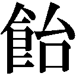みたいな感じがしてな......」
ふと寂しい目をして、「つまらない話、聞かせちまったな」と陽造は立ち上がった。出ていこうとして、思い出したように梅子を振り返る。
「この前、梅子と信郎君がケンカしてたことだけどな。子育てのこと」
「あ、聞こえてた？ ごめんなさい」
「そう神経質になることはないんじゃないかな。子どもなんて、ほっときゃ育つもんだ。ちょっと母親と離れたからって......同じ家の中にいて、夜は一緒に寝てるんじゃないか。そんなことを気に病むことはないよ。戦争の頃の、生きるか死ぬかって頃と違って、世の中がだんだん豊かになると、人間、悩みもぜいたくになっていくもんだなあ」
「でも、やっぱりこれでいいのかなあって......」
「太郎はこれだけ寄ってたかって世話してるんだ。むしろ、甘やかされて頼りない子になるほうが心配だぞ」
「うん......」
梅子が陽造に頷いたとき、「何かご用？」という八重子の声がした。振り返ると、健康診断のときの少年、則夫が中をのぞいている。
「どうしたの？ 具合悪いの？」と梅子は則夫に近づいていく。則夫は口をもごもごさせ、何か言いかけたが、結局はプイと背を向け、行ってしまう。梅子は追いかけようとしたが、タイミング悪く新しい患者がやってきてしまった。うしろ髪を引かれながら、梅子は診察室へと戻った。
『明日から当分の間、休診します』
そう書いた紙を、入口に貼ろうとした梅子の手がふと止まる。そのとき、背後から信郎の声がした。「そこまですることないよ」
「えっ」と振り返った梅子に、信郎がバツが悪そうに言った。「俺も言いすぎた」
「でも......」
そのとき、下村家から血相を変えた芳子が飛び出してきた。梅子の顔を見て、駆け寄る。
「梅子！ 大変なの......太郎ちゃんがいないの！」
「えっ!?」
「ちょっと目を離したすきに、いないのよ」
取り乱しすがりつく芳子を、梅子と信郎は呆然と見つめる。我に返ったふたりは、すぐに捜しに飛び出した。近所を駆け回ったが、見つからない。
太郎がひとりでどこかに行くなんてことはありえない。ということは、誰かが連れ去ったということになる。重い不安がのしかかる中、幸吉が「気になる話を聞いたぞ」とやってきた。
「表通りのタバコ屋のおばちゃんが、見慣れない男が赤ん坊を抱いて歩いていくのを見たって」
「どうしよう」と顔をゆがめる梅子に、信郎は言った。「俺、交番行ってくる」
「俺たちはもう一回その辺を捜してみよう」
幸吉のかけ声にうなずき、みんなが一斉に外に出ようとしたとき、玄関の戸が開く音がした。そして......正枝と、太郎を抱いた陽造が入ってきた。
「太郎！」と梅子は駆け寄り、陽造から奪い取るように太郎を抱き上げた。
「小学校のほうを捜してたら、ちょうど陽造さんが太郎ちゃんを抱いて帰ってきたのよ」と正枝はみんなに説明する。安のあまり梅子はグスグスと泣き出している。
「申し訳ない」と陽造は頭を下げた。「ちゃんと言っておけばよかったな......」と陽造はみんなに説明しはじめた。
診療所を訪ねてきた少年、則夫と陽造は外で話したという。そのときに則夫の事情を知った。
「家に妹がいてな。ここしばらく、病気でふせってるそうなんだ。でも、金がなくてなかなか医者にかかれなくてよ......梅子なら、診てくれるんじゃないかって」
「じゃあ、そう言えばいいのに」と芳子が首をかしげる。
「それが言えないんだよ。そういう子なんだ」
「でも、よく話せたわね、そんな子と」
「まあ、こっちもしょぼくれてる状態なんで、安心したんじゃないですかね......で、話してるうちに、太郎をその妹に見せたいって言うんですよ。その妹は赤ん坊が大好きらしくて......聞いたら、赤ん坊にうつるような病気じゃないっていうし......見せたら元気になるんじゃないかって」
「そうだったの」
「勝手なことして申し訳ない......俺はやっぱり、厄介かけるばっかりだな」
「ううん。もういいのよ」と陽造に言い、梅子はその子の家の場所をねた。
「ああ、えーと、たしか三丁目の──」
そのとき。玄関のほうからドヤドヤと人が入ってくる音がした。芳子が出ると、和也と康子が立っていた。太郎がいなくなったと聞いて、慌てて駆けつけたのだ。外には近所の人たちが集まっていた。これからみんなで手分けして捜すつもりだという。
外に出た梅子は、集まった人の数に驚いた。
「みなさん、すみません......太郎は無事に見つかりました」
一同から「よかった」と安の声が上がる。
「本当にすみません」と梅子はもう一度、謝った。
「何言ってんだ。あんた、うちの子が熱出したとき、夜中でも来てくれたじゃないか」
「ああ。あんたがここにいてくれて、どれだけ助かってるか」
「何かあったらいつでも声をかけてくれ」
近所の人たちのそんな声に、梅子は胸が熱くなる。隣の信郎も同じ気持ちだった。
「みなさん......ありがとうございます」
ふたりは一緒に頭を下げた。
その夜、信郎は、仕事にかまけて子育てをないがしろにしていると責めたことを梅子に詫びた。梅子のために集まってくれたみんなの姿を見て、梅子がどんなに町の人たちの支えになっているかが初めてわかったのだ。
「それに......もう一つ、わかった」
「何？」
「梅子もやっぱり母親なんだってこと......やっぱり太郎のことが一番大切なんだな......」
「当たり前じゃない」
「......じゃ、俺は？ 俺は太郎の次か？」
「ばか......」と梅子は赤くなった。
翌日、診療所に則夫と妹の育代が母親に連れられてやってきた。育代の病気はぜんそくだったがそれほど重いものではなかった。梅子の診断を聞いて、母親は安の表情を浮かべる。
「成長するうちに、だんだんよくなることも多いですから、心配しすぎないようにしてください。お薬出しておきますからね」
「あのー、実は持ち合わせがなくて......」と申し訳なさそうに切り出した母親に、梅子は「大丈夫ですよ」と笑みを向ける。「様子を見て、また連れてきてください。激しい運動はしないこと。あと、風邪をひくと大変なので、うがいと手洗いをしっかりさせるようにしてくださいね」
「ありがとうございます」
梅子は育代に向き直り、言った。「お薬飲めば、少し楽になるから。そしたら、うちの赤ちゃん見に遊びに来てね」
「うん。お兄ちゃんもいい？」
「もちろん」
安心したように則夫も微笑んだ。
数日後、則夫が育代と一緒に家に遊びに来た。しかも、友達を大勢引き連れて......。
「梅ちゃん先生がいいって」
梅子はなんだかくすぐったいような気持ちになる。「梅ちゃん先生......ね」
庭から突然大勢の子どもたちが入ってきて、太郎の世話をしていた芳子は目をむいた。
「この子たちが太郎を見たいって」とあとからやってきた梅子が説明する。太郎の周りに群がり、キャッキャと歓声を上げる子どもたちを見ながら、陽造がつぶやく。
「あれだな......子どもってのは、町の宝なんだな......」
梅子と芳子も笑顔で頷く。
「回復は順調なようだな」
夕食を勢いよく平らげていく陽造を見ながら、建造が梅子に言った。
「うん。食欲もあるし、問題ないみたい」
「梅ちゃん先生のおかげだよ。それに......ここにいるみんなのおかげだな」
不意に殊勝な顔をすると、陽造はみんなを見回し、言った。「申し訳ない。仕事があるから手術できないなんて言ったのは、なんだ」
「おじさん......」
「もういいんだよ」と梅子に言い、陽造は再びみんなに向かって話しだす。
「本当は何もかもがうまくいかなくて、行くとこがなかったんだ。梅子は、わかった上で俺を入院させてくれたんだ......でも、ここに来て本当によかった。すっかりうしろ向きになってたけど......太郎も、近所の子どもたちもかわいいし、みんなにも親切にしてもらって、自分がひとりじゃないって思えたよ」
「ひとりなわけないでしょ」と正枝が言うと、陽造は正枝に向き直ってうなずいた。
「俺、なんだかこの町が好きになった......病気が治って、ここ出たら、この近所に住んでもいいかな......」
「そうね。それがいいわ」と芳子が真っ先に賛成し、みんなもうなずく。
「ありがとう。兄貴......いいかな」
「俺の許可なんか必要ない。好きにしろ」
「じゃ、そうさせてもらうよ」
「楽しくなりそうね」
一同は笑みを交わし合い、食事へと戻る。
その数日後、陽造は無事、安岡医院を退院していった。
「しんかんせん？」
信郎は渡された図面にある『新幹線』という文字に首をひねる。
「なんでも、世界一速い電車を作るんだとよ」と先に説明を聞いていた幸吉が言う。得意先の富田経由で、その新幹線の部品製作の仕事が回ってきたのだ。
今回の部品には相当な精度が必要らしい。仕事を引き受けるかどうか迷う幸吉に対し、信郎の口元には、自然に笑みが浮かんでいる。
「やろう......絶対やろう」
ずっと前、まだこの辺りが焼け野原だった頃、梅子に言ったことがあった。
『新しい時代を掘るんだ』
今、ようやく自分の手で、新しい時代を作れるかもしれない──そんな予感に、信郎はワクワクするのだった。
第二十四章 再会
安岡製作所で作った新幹線の部品が採用されれば、信用もぐんと上がり、工場が発展する大きなきっかけになる。そのあかつきにはテレビを買おうと家族会議で決まった。反対するだろうと思われた建造も、なぜかすんなりと了承した。
しかし、思わぬところから横やりが入った。幸吉が、購入資金の半分を信郎が出すのだとしたら、それは安岡製作所の売り上げから出たものなのに、なぜうちが下村家のテレビを買わなければならないのだと言い出したのだ。挙げ句、自分が半分金を出すからテレビはうちで買うと無茶なことを言う始末だった。
もちろん、その話を聞いた建造は怒り、テレビは棚上げということになった。
「......なんだか面倒くさいなあ、もう」と診療所で雑誌に載っているテレビの広告を見ながら、梅子はため息をつく。いったい、いつになったらうちにテレビが来るのだろう。
仕事を終え、梅子が診療所を出ると、千恵子がやってきた。相談に乗ってほしいと言われ、梅子は千恵子を下村家に招いた。縁側で庭を見ながら千恵子は話し出す。
「私、来年の春で高校卒業なの。それからどうしようかなって......」
「進学か就職か、悩んでるの？」
「うん。親にも学校の先生にも、いいかげん決めろって言われてて......梅子先生って、女学校出るときに医者になろうって決めたんでしょ。どうして？」
梅子は、自分が医師を志したきっかけを話した。食中毒になったヒロシという戦災孤児の少年を懸命に治療する父の姿を見て、医師の仕事のすばらしさに目覚めたのだ、と。
「私も、そんな出来事ないかなあ......」
親からは店の手伝いをしろと言われているが、四六時中親と一緒なのはわずらわしい。かといって勉強も好きではないから、特に進学したいとも思わない。
「何か、私でも人の役に立てるようなこと、できないかな。梅子先生見てて、そう思う。人を笑顔にする仕事っていいなあって......でも、勉強苦手だから医者は無理だし」
「そういう気持ちがあるなら、きっと何かあるわよ」
そのとき塀の向こうから光男が顔を出した。安岡家の庭にふたりの声が届いていたのだ。
「やりたいことがないなんて、ぜいたくな悩みだな。世の中には、やりたいことがあってもできない人がたくさんいるのに」
「そんなこと言ったって......」と千恵子は唇をむ。光男は梅子に会釈すると、戻っていった。
「......光男君は、本当は勉強したかったのよ。でも家族のためにノブのところに就職したでしょ。だから、自由に進路が選べる人がうらやましいんじゃないかな」
自分の悩みがぜいたくだと言われればそのとおりかもしれない。だが、気になる存在である光男の言葉だけに、千恵子の悩みはさらに深くなった。
松岡が留学先のアメリカから戻ってきた。連絡もせず、突然大学病院にフラッと現れた松岡に弥生と山倉は驚く。だが、松岡は挨拶もそこそこに研究内容について語りはじめた。三年経っても松岡は相変わらずだ。弥生と山倉は思わず苦笑した。
「で、アメリカの人とはうまくやってたの？」
松岡が満足げに話し終えると、弥生はようやく話題を変えた。
「うまくやる、とは？」
「仲良くなるとか、友達付き合いするとか」
「医学の研究という点では非常にうまくいった」
「人間関係では？」と山倉がねる。
「さあ。そういう観点でものを考える余裕がなくて......そう言えば、向こうの人によく、日本人はよくわからないと言われた」
日本人が大いに誤解されたのではないか。弥生と山倉は顔を見合わせる。
「あ、そうだ......梅子さんは元気かな」
弥生と山倉はドキッとした。ついに、この話題になったか......。
「どうした？ 彼女に何かあったのか」
仕方ない......弥生はおずおずと切り出した。「梅子ね......結婚したの」
「えっ、そう......」わずかに松岡の表情に驚きの色が浮かぶ。
「去年、子どもができた」と山倉がつけ加える。
「へえ......それはよかった......で、誰と結婚を」と松岡はほとんど顔色を変えずにねる。
「隣の信郎さん」
「あー、あの人......そうなのか......」
松岡の意外なほどの反応の薄さに、弥生と山倉は拍子抜けしてしまう。
ふたりに別れを告げると、松岡は建造の元へと向かった。
「お久しぶりです。ただいま、戻りました。あ、これ、つまらないものですが」
松岡は向かい合った建造に、から取り出した土産を渡す。受け取った建造は不思議そうにねた。「アメリカ帰りで、どうして雷おこしなんだ」
「日本に着いてから何もお土産を買ってないことに気づきまして......ないよりはましかなと」
「そうか......ありがとう。それより帰ってくるなら連絡してくれないと、こちらも用意が......」
「申し訳ありませんでした。研究成果のほうはできるだけ早いうちにご報告します」
「まずは、ゆっくり休め」と建造は苦笑する。「ところで......梅子のことだが」
「ご結婚されて、お子さんもできたと聞きました」
「そうか。聞いたか」と思わず建造の表情がゆるんだ。梅子のことをどう知らせるかが気がかりだったのだ。
「はい。よかったですね。では、事務室に手続きをしに行ってきます」
一礼し、教授室を出ていく松岡を、建造は安の思いで見送った。
話があると梅子に呼び出され、千恵子は診療所へとやってきた。梅子は千恵子を自分の向かいのイスに座らせると、奥で作業をしている八重子を呼んだ。
「千恵ちゃん......看護婦の仕事に興味ない？」と梅子は切り出す。何か人の役に立てることをしたいという千恵子の気持ちを考えたうえでの提案だった。患者たちが絶大な信頼を寄せる八重子の姿を見て、この仕事なら千恵子の希望に適うと思ったのだ。
「看護婦？」
「そう。すごく人の役に立てる仕事よ」
「看護婦は厳しい仕事ですが、とてもやりがいがあります。それに、女性にとても向いた仕事です」と八重子が後押ししてくれる。
「看護婦か......どうやったらなれるんですか？」
「まずは看護学校に行くの」
「試験があるのかな......」
不安そうな千恵子に、八重子が看護学校について丁寧に説明する。具体的な話のあと、八重子は千恵子に言った。「私も結婚したあと、なんとか続けてこられましたし、何よりも元気になられた患者さんの笑顔を見ると、看護婦をしていて本当によかったと思います。自分が看護してもらうようになるまでは、続けるつもりです」
千恵子は気圧されつつも、「......ちょっと考えてみようかな」と頷く。
「もしよかったら、病院に見学に行ってみない？」と梅子は千恵子をうかがう。「私が前に勤めてた帝都大学付属病院。知ってる看護婦さんもたくさんいるから、話も聞けるし。それから考えてみてもいいんじゃない？」
「うん......行ってみたい」
「じゃあ、明日は土曜日でここは午前中で終わりだから、午後からでも行ってみる？」
「ありがとう......でも、梅子先生、どうして私のためにそんなに......」
「私ね、千恵ちゃんの悩みがなんだか他人事みたいに思えないのよ......私も、自分に何ができるかわからなかった。私はたまたま医者っていう目標が見つかったけど......だから千恵ちゃんにも何か見つけてほしいのよ」
「うん......」
翌日、梅子は千恵子を連れ、八重子とともに大学病院を訪れた。長い廊下を大勢の患者や医師がすれ違っていく。梅子の診療所とのあまりの違いに、千恵子はつい辺りを見回してしまう。と、向こうから弥生が歩いてきた。「あ、弥生さん」
梅子の声に、弥生はギョッとする。慌てて近づき、梅子にねた。「どうして？」
梅子は千恵子の横に立つと、「この子、康子さんのところの千恵子ちゃん。看護婦の仕事の見学に来たの」と弥生に紹介した。「こんにちは」千恵子はペコリと頭を下げる。
弥生は千恵子に会釈を返すと、梅子におずおずとねた。「梅子......下村先生から聞いた？」
「え、何を？」
「何って......下村先生、話してないんだ」
弥生がどういうふうに話そうかと困り果てているところへ、当の松岡がこちらに向かって歩いてきた。書類に目を落としたまま歩いているので、さいわい梅子には気づいていない。
「梅子......実は、話があるの」
「何？」
「あのね......驚かないで聞いてね」
言ってるうちに松岡がどんどん近づいてくる。弥生は焦ってしまい、うまく話せない。
「あのね、あの、あの......」
次の瞬間、下を向いたままの松岡が梅子の背中にどんとぶつかった。「ああっ、すみません」
「すみません」と顔を上げた梅子は、「あっ」と固まった。「松岡さん......」
「......梅子さん」
梅子と松岡、三年ぶりの再会だった──。
八重子が気を利かせて、「私が千恵ちゃんを案内します」と連れていってくれた。
「どうしてお父さん、何も言ってくれなかったのかな」と梅子は首をひねる。聞けば、松岡は昨日建造に会っているという。土産に渡したという雷おこしも梅子は食べていた。しかし、建造はそれを患者からもらったと言ったのだ。
「それは、ふたりにいろいろと気をつかったんじゃないかな。ねえ」と弥生は自分だけでは気まずいと無理やり休憩室に引き入れた山倉に同意を求める。山倉は頷くが、梅子も松岡も、なぜ気をつかわれるのかがよくわからなかった。
「あ、そうだ。ご結婚、おめでとうございます」
「ありがとうございます......松岡さんは、ご結婚されたんですか？」と梅子は屈託なくねる。
「その質問には、自分は結婚できたという自慢が入ってますか」
「まだなんですね......」
「お子さんがいらっしゃるそうですね。男、女、どちらですか」
「男の子です」
「梅子さんの子か......一度見てみたいな」
「珍しい生き物みたいな言い方しないでください」
ひとしきり話を終えると、梅子と松岡は笑みを交わし、別れた。ふたりを見送りながら弥生は息をつく。
「何も心配する必要なかったみたいね」
「ホント......男と女って、ああいうもんなのかな」
「男と女っていうより、梅子と松岡さんが、でしょ」
余計な気を回して損したと、弥生と山倉は苦笑する。
大学病院で看護婦の実際の仕事ぶりを見て、いろいろと話も聞いた千恵子は、看護婦の仕事に興味を持ったようだった。梅子は満足だったが、事はそうスムーズには運ばなかった。看護婦を目指すかもしれないと言った千恵子に、康子が強く反対したのだ。
看護婦なんて大変な仕事は千恵子に務まるはずがない。診療所にやってきて、そう断言する康子に、「どうしてそんなこと決めつけるの？」と梅子は食い下がる。
「だって、これまで千恵子は何やっても中途半端で、一つのことを必死にやり遂げたことなんてないんだよ。うちの店を手伝って、適当にお嫁に行くのが一番いいのよ」
「......うちの父と同じ。私も、医専に入る前、同じようなこと言われてた。私にはなんの取り柄もないって。医者なんか無理だって......でも、ちゃんと医者になったわ。千恵ちゃんをもっと信用してあげて。親に評価されないって、つらいものよ」
「......あの子、さっき私が看護婦なんか無理だからやめなって言ったら、わかった、やめるって......すぐにあきらめちゃったのよ。あの子はなんだってそう。必死でやり通すっていう気持ちがなくて......そんなことで看護婦みたいな大変な仕事ができるもんなの？」
「それは......」と梅子は言葉に詰まる。たしかに、一番大事なのは本人の意志だ。
康子は、もうこれ以上余計なことはしないでほしいと釘を刺すと診療所を出ていった。
数日後、今度は千恵子がやってきた。「この間はありがとうございました。それから、昨日お借りした本」と八重子に看護婦の参考書を差し出す。
「もう読み終わったんですか」と受け取りながら八重子はねる。
「いえ。私......うちのお店、手伝うことにしました」
「......そうですか」
千恵子が去ったあと、八重子は残念そうに言った。「あきらめてしまうんでしょうかね」
「......康子さんと約束したんです。こっちからは何も言わないって」
自分の道は自分で決めなければ意味がない、梅子はそう考えていた。
「あれ？ これ、この間捨てたヤツだよな」
木下は作業台の端に置かれた小冊子を手に取り、言った。工作機械の説明書なのだが英語で書かれているので誰も読めず、捨てたのだ。すると、光男が慌ててその冊子を取った。
「なんだよ、お前英語なんか読めんのかよ」
「いえ」と答えながらも光男は冊子を離さない。そこにご機嫌な顔で幸吉と信郎が入ってきた。試作品が採用されたのだ。新幹線の車両自体がまだテスト段階だから、これからもいろいろ変更はあるだろうが、とりあえず安岡製作所の技術が認められたことが信郎にはうれしかった。
今夜は祝杯だと幸吉が言い出し、仕事を終えた一同は「みかみ」へと向かった。
ほかの客も巻き込んで、店内は安岡製作所の快挙で大盛り上がり。手伝いのため店に出ていた千恵子は、幸吉たちの席にビールを運び、光男にボソッと言った。「世界一か......すごいね」
そのどこか寂しげな表情が、光男は気になる。
そこへ梅子が入ってきた。信郎や幸吉に一緒に飲もうと誘われたとき、隅の席に八重子の姿を見つけた。梅子は八重子の前に座り、小声でねる。「どうしたんですか？」
「どうも気になりまして」と八重子は目で千恵子を追う。「実は私も」と梅子もうなずく。
通りかかった千恵子に、幸吉が何げなくねた。「千恵ちゃん、卒業だろ。どうするんだ？」
「私、春からもこの店手伝いますから、よろしくお願いします」と千恵子が答える。
すかさず康子が「そうなのよ」と続けた。「この子はなんの取り柄もないし、勉強が好きってわけでもないしね。せいぜいうちの店手伝って、適当なところでお嫁に行くのがいいのよ」
「そうだな。女の子はそれでいいんだよ、なあ」と幸吉は軽く受け、また騒ぎはじめた。うつむいた千恵子がそばを通ったとき、八重子は誰に言うともなくつぶやいた。
「看護婦は大変な仕事だから、やめておいたほうがいいですよ。時間は不規則だし、肉体的にもきついし......私も、とても続かなかったでしょうね......患者さんの笑顔がなければ」
通りすぎようとした千恵子の足が、ピタリと止まった。そのまま踵を返し、康子の前に立った。千恵子は康子の目を強く見つめ、意を決して言った。「私......やりたい。看護婦になりたい。病院で見学させてもらって、患者さんが看護婦さんに、ありがとうって笑顔で言ってるのを見て、すごくいいなって思った。借りた本も、一晩で読んだ。学校の課題じゃない本を最後まで読んだの、初めてだった......私も、人を笑顔にできるようなことがしたい......してみたいの......」
康子は顔をそらし、言った。「そう......じゃ、やったらいいだろ」
「え......本当に？」
「看護学校って入学試験があるんだろ......手伝いはもういいから勉強しな」
千恵子は信じられないという表情で母を見つめる。康子は決めていた。千恵子が自分で看護婦をやりたいと言い出したら、気持ちよくその背中を押してあげようと。初めて「やりたい」と自分の意志を見せてくれた。そのことが康子は本当にうれしかった。
エプロンを外して店の奥に消えた千恵子を、一同が笑顔で見送る。「なんだか知らねえけど、よかった。なあ、乾杯だ」と幸吉たちが盛り上がるなか、光男だけが暗い表情をしているのが、梅子は少し気になった。
光男のことを気にかけていたのは梅子だけではなかった。建造もそのひとりだ。工場の仕事が忙しいのか、最近光男は本を借りに来なくなった。学ぶことが人一倍好きなのに、たまたま生まれ育った環境のせいで勉強ができない。建造は昔の自分を光男に重ねていた。
ある夜、庭に出てきた光男に縁側から建造が声をかけた。近況を聞いたあと、建造はねた。
「君は定時制の高校に通う気はないか」
「え......」と光男は戸惑う。
「仕事をしながらでも勉強したい人が通うのが定時制だ。勉強する方法はいくらでもあるんだ」
光男が答えられずにいると、話し声を聞きつけた幸吉が出てきた。
「定時制だと？ 余計なお世話だ。なんでてめえがそんなことを」
「光男君は勉強が好きなんだ。頭もいい。それをこんな工場で埋もれさせるのはかわいそうだ」
「こんな工場だと？」幸吉の声音が変わったので、建造は慌てて言い直す。「いや、この工場が悪いというわけではない......私の生まれた家は貧しかったが、下村家に養子に出されて勉学をさせてもらった。そのおかげで今の私がある。生みの親にも、母にも感謝している」
「てめえの話なんか知るかよ。こっちは金かけて職人に育ててるんだぞ。勉強させた挙げ句、もっといい職場に行くって出ていかれたんじゃ大損だ。そうなったらどうしてくれるんだ」
「そうなったら、なったときだ」
ふたりの話し声が響き、居間にいる梅子や信郎にも聞こえてきた。
「第一、本人の気持ちはどうなんだ」幸吉が光男にねる。「お前、そんなに勉強したいのか」
「いえ......職人になるのに勉強はいりません」
そう言うと、光男は安岡家へと戻っていく。建造も庭から戻ってきた。横を通りすぎ、書斎へ向かう建造を目で追いながら、梅子は建造の真意をはかりかねていた。
陽造が玩具店を始めることにしたと報告しにきたのは、それから数日後のことだった。子どもの数はこれから増えるだろうし、将来性のある仕事だと直感したという。何より、近所の子どもの相手をしているうちに、自分が意外に子ども好きだということに気づいたのだ。
陽造が帰ったあと、太郎を寝かしつけた梅子は信郎に言った。「光男君、勉強したくないって本当かな。千恵ちゃんが看護学校に行くことになったとき、なんだか寂しそうだった......」
それは信郎も感じていた。だが、信郎としては工場の仕事に専念してもらいたかった。
「新幹線の車両の製造が本格的になったら、どんどん仕事が来るんだからな。光男にだって今まで以上に働いてもらわないと。あいつも旋盤扱うようになってきたし、給料だって上げてやるつもりなんだ。仕事した分、金を手にできるようになりゃ、夜学なんて通うどころじゃなくなるだろ」
「ノブは、なんでも自分の都合でものを考えるところがあるんじゃないの？ 光男君の気持ちなんてわからないでしょ」
「じゃあ梅子は、光男が勉強して、工場を出ていくなんて言い出してもいいっていうのか」
ケンカになりそうになったそのとき、「失礼します」と玄関で声がした。
客は、松岡だった。
機械音を聞きつけ、幸吉が工場に入ってきた。作業をしている信郎の様子が少しおかしいことに気づき、「何かあったのか？」と声をかける。
「......松岡さんが、来てるんだよ」
「松岡？ あー、前に梅ちゃんと付き合ってた。お前、梅ちゃんとそいつをふたりにしたのか。まずいぞ、それは。焼けぼっくいに火がつくってな......」と幸吉は余計な講釈をはじめる。
「梅子は大丈夫だ。俺は信じてる」
「そのわりにはそわそわしてんじゃねえか。用もないのに仕事なんかしてよ」
「うるせえ」と信郎は作業へと戻った。
一方、梅子と松岡は診療所で向かい合っていた。松岡の話は梅子を驚かせるものだった。建造が名誉教授を辞退して、大学を辞めるというのだ。
「病院ではその話をする機会がなくて......それでお宅にうかがって話を聞こうと」
「そう......」
「このまま先生が病院を去ってしまわれたら、僕はどうしたらいいんだ......まだまだ下村先生には教えてほしいことが、たくさんあるのに」
梅子には建造の考えがよくわからなかった。あれほど医師の仕事が好きなのに、自らそこから退くとは、いったいどういうつもりなのだろう。
「この三年、僕は研究以外のことは考えなかった。それなりの成果はあったと思う。もっと研究を続けるという選択肢もあったけど、早く日本に戻って実際の医療に役立てたかったんだ」
松岡は診療所を見回し、言った。「君も町医者として、着実にやってるようだね」
「ううん......まだまだよ」
「いや、見ればわかる。使い込まれた道具......染みついた匂い......患者さんからの贈り物......すっかり町のお医者さんだな」と松岡は梅子に微笑む。
「僕たちが、あのとき選んだ道は間違ってなかった」
「そうだと思いたい」
「......幸せそうで、何よりだ」
「ありがとう......」
ふたりが笑みを交わしたとき、芳子がやってきて、建造の帰宅を告げた。
信郎はすでに下村家に戻ってきていた。連れ立って入ってきた梅子と松岡を複雑な表情で一する。ふたりが居間に腰を下ろしたとき、書斎から建造が出てきた。松岡は建造に会釈し、単刀直入にねた。「先生が名誉教授を辞退して病院を去られるというのは本当ですか」
「本当だ」
梅子以外のみんなが、驚きの顔になる。
「どうしてですか。わけを聞かせてください」
「......私は、みんなの邪魔になるのが嫌なんだ」
「邪魔？ どういうことですか」
「君はアメリカから大きく成長して帰ってきた。狭山やほかの医者たちも、成長著しい。私の後進を育てるという目標はうまくいった。これ以上、病院にとどまっては、むしろみんなが伸びることを邪魔することになる。それに名誉教授というのは、実体のない、それこそ名誉職だ。どうも肩書にしがみついているような気がしていかん」
「しかし、僕はまだまだ未熟なんです。もっと先生に教えていただきたいことがあるんです」
「甘えるな」
建造の厳しい言葉に、松岡はビクッとする。
「君はもう大丈夫だ。あとに続く者を育てたら、年老いた者は潔く身を引く。そうやって、知識や経験を人から人へ受け渡していかなくてはいけない。私は医学を志して、本当によかったと思ってる。君たちに私が持っているものは十分に引き継いだ。もう心残りはない。あとは、君たちの活躍を遠くから見守ることにする」
梅子は、父の言葉を松岡同様、自分へ贈られたものとして深く胸に刻みつけた。
「えっ、私と松岡さんに何かあるって心配してたの？」
信郎から意外な告白をされて、梅子は楽しそうに笑った。
「もういいだろ......それより、松岡さんって人を見直したよ。梅子のオヤジさんにあんなに認められて......医者って仕事に、あんなに真剣で......理屈っぽいだけの妙な奴かと思ってた」
「そんなわけないじゃない。松岡さんとお父さんの話を聞いて、私も医者になってよかったって思った......」
「そうか......」
「まあ、お父さんにはゆっくりしてもらって......あっ」
「どうした？」
「お父さん、病院を辞めたら、ずっとうちにいるのよね」
「そりゃそうだろ」と答え、信郎は梅子が何を言いたいのかを察した。「ちょっと厄介だな」
「ちょっとですめばいいけど......」
一計を案じた梅子は、翌日、八重子にそれを話してみた。しかし、八重子は首を振る。
「こんな小さな診療所に医者はふたりも必要ありません。それに、院長があなたでお父様がその下で働くなんて変でしょう。やはりお父様を院長にしないと」
「私は、父がそれでいいって言うなら」
「いいとは言わないでしょうね。娘に場所を譲ってもらうようなことを、あの人がよしとするとは思えません。それに、そんなことは娘が心配しなくてもいいんです。本人が考えることです。お父様の心配をするよりは、若い人の心配でもしてあげたらどうでしょうか」
八重子の言わんとすることはわかった。今日は、千恵子の看護学校の合格発表なのだ。
「そうですね」と梅子は仕事に戻る。
午後の診察が一段落した頃、勢いよく戸が開いて、千恵子が入ってきた。
「梅子先生、私、看護学校合格した！」
弾ける笑顔に、梅子は昔の自分を思い出し、涙がこぼれそうになるのだった。
「頑張ってるのね」
不意に声をかけられ、光男は作業の手を止めた。昼の休憩時間、工場にはほかに誰もいない。
「それ、何？」と梅子は作業台の上の冊子を手に取った。英語で書かれた工作機械の説明書のようだ。中のかなりの部分に線が引いてある。「どうしたの？ これ」
「......読めたら、機械のことがもっとわかるかなと思って」
「線が引いてあるのはわからない単語？ どうしてうちの父に辞書を借りに来ないの？」
黙り込む光男に、梅子はねた。「光男君、本当は夜学に行きたいんじゃないの？」
「梅子、どういうことだよ」
幸吉、木下と一緒に休憩から戻ってきた信郎が、ツカツカと梅子に歩み寄る。梅子は光男を見すえたまま言った。「うちのお父さんね、病院辞めるの。どうしてあのとき光男君に、夜学に行きたくないかっていたのか、今はお父さんの気持ちがわかる気がするの。自分が引退したあとを、若い人に託したいような気持ちなのよ、きっと」
「でも、おらはべつに医者には......」
「医者じゃなくていいの。自分の好きな道で、のびのびと活躍してほしいんだと思うの。お父さんは、養子にきた下村家で好きな勉強をさせてもらえたおかげで医者になれたの。だから若い人が勉強したいのにできないのを見るのが、すごく悲しいのよ」
光男の目に迷いが生じる。そこに幸吉が割って入った。「いくら梅ちゃんでもな、工場のことに口出ししてほしくねえんだ。病気になったら治してもらうさ。でもな、こればっかりは......」
「......ごめんなさい」
帰宅した建造が家に入ろうとすると、待ち構えていたかのように八重子が診療所から出てきた。
「少しよろしいでしょうか」と建造を中へと招く。
「病院をお辞めになるのはいいとして、ご家族のことも考えてあげてください。あなたみたいな人がずっと家にいてムスッとしてたら、みなさん迷惑でしょう」
歯に衣着せぬ物言いに、建造はムッとする。「いくら相沢さんでも余計なお世話ではないかと」
「わかってます。ご家族の代弁をしただけです。それともう一つ。あなた......死ぬ最後の瞬間まで医者でいたい......たしか、そんなふうに言ってましたね」
「え、いつのことですか」
「研修医の頃です」
「そんな昔に......そうですか。そんなことを言ってましたか......」
建造が記憶を探っていると、梅子が入ってきた。うしろからはぐったりとした様子の子どもを抱いた母親が続いている。「お父さん......どうして」
「ああ......相沢さんとちょっと話を」
梅子は白衣に着替えると、すぐに寝台に寝かされた子どもの診察を始めた。もはや建造の存在など眼中になく、夢中で患者の体が訴える声を聞こうとしている。その様子を見ながら、建造の脳裏に先ほどの八重子の言葉がよみがえった。
死ぬ最後の瞬間まで医者でいたい──か......。
建造は静かに診療所を去った。
「お義父さんが言ってた、人から人へ受け渡していくってこと......なんかわかる気がする」
その夜、寝室で太郎を抱き上げた信郎が不意にそんなことを梅子に言った。「俺も親になったからかな」
照れくさそうに太郎を戻すと、信郎は灯りを消した。
翌日。みんなが集まっての安岡家で昼食をとっていると、信郎が光男に書類を差し出した。
「あとでこれ読んで、書き込んどけ」
書類は定時制高校の入学願書だった。
「行きたいんだろ」
「いえ......いいんです」と光男は願書を返そうとする。信郎と梅子は、正直になれと翻意をうながすが、光男は頑なに首を振る。「行きたくないって言ってるのに、わかんね人たちだな。おらはこの工場に骨を埋めるって決めたんです。したから学校に行く必要なんかないんです。それよりおらは、旋盤の技術を早く覚えたいんです」
幸吉は安し、「よく言った」と光男の肩を叩く。しかし、信郎も負けてはいない。
「よし。仕事熱心なのは感心だ。じゃあ、業務命令だ。うちの工場の発展のために学校に行け。いつか工場が大きくなったら、経営のこととか経理のこととか、いろいろとモノを作る以外の知識も必要になる。そのときのために勉強しろ。お前はうちの工場の幹部候補生だ」
信郎は幸吉に向き直り、「オヤジ、頼む」と頭を下げた。「お願いします」と梅子も続く。
「けど......本人がよ......」
幸吉に向かって座り直すと、光男は深々と頭を下げた。「お願いします。行かせてください」
「......しょうがねえな」
「ありがとうございます」と光男は涙ぐむ。
「頑張れよ」と光男に声をかけ、信郎は食事に戻った。
「......ちょっとノブのこと、見直した」梅子に言われ、信郎はまんざらでもない。
「ちょっとかよ」とコツンと梅子の額を指で弾いた。
次の日曜日、建造の退職祝いと太郎の一歳の誕生祝いが下村家で行われた。そしてこの日は、下村家にテレビがやってくる日でもあった。
「ちくしょう、来やがったか」と幸吉が悔しそうに画面を見つめる。しばらくはみんな、夢中になってテレビを見ていた。おかげで食事がちっとも進まない。
「そろそろテレビを消せ」と建造が言い、梅子がスイッチを切った。場が静まったところで、建造がおもむろに話しはじめた。
「私は病院を退職することにした......が、よく考えたら、まだ働き足りない。先日、千葉にある病院の院長にならないかという話があった。その話を受けることにした。大きな病院ではないがまだ医療が十分ではない地域だ。もう一度社会に貢献するためには、ちょうどいい」
「千葉ってことは......」
梅子のほうを向くと、建造は頷いた。「移り住むことになる」
途端に幸吉の顔に動揺が走る。「なんだ？ 一家で引っ越しか？」
「そんなわけがあるか。梅子は診療所があるし、信郎君だって工場がある。私と芳子が行く」
「この間、お父さんにその話を聞いてね、一緒に行こうってことになったの」
「けど......芳子さんがいなくなって、梅ちゃん大丈夫？ 仕事と子育てと家事と、みんなやらなきゃいけないのよ」と和子が心配そうに梅子を見る。
「じゃ、私は残ったほうがいいわね」と正枝。「私も手伝うわ」と和子も梅子にうなずく。
梅子は芳子に顔を向け、言った。「私、大丈夫。ちゃんとやるわ。だから、お父さんもお母さんも、安心して千葉に行って」
「俺も、梅子と一緒に頑張ります。だから心配いりません」と信郎も力強く宣言する。
「そうか......なら、大丈夫だろう」建造の言葉に、芳子もうなずく。
「それにしても、なんだか急ですね」竹夫に言われ、建造が答える。「考えていたのは、前からだ。やはり俺は、死ぬまで医者でいるべきなんじゃないかと」
「お父さんらしい選択だな」
「ちっ、カッコいいこと言いやがって......俺は、てめえが千葉に行くなんて許さねえぞ。てめえがいなくなったら、誰とケンカすりゃいいんだよ」幸吉は涙声になっている。
場がしんみりとし、梅子も不安になってくる。
「お父さん......本当は、私......」
「お前は、もう大丈夫だ。この間急患が来たとき、患者を診るのに必死で、私がいるのも忘れたようだったじゃないか。もう、安心だ......一人前になったな」
「お父さんが梅子を褒めた」と竹夫が茶化す。みんなの笑いに包まれる中、梅子は幸せな気持ちを感じていた。
第二十五章 めぐりあい
建造と芳子が千葉へと移ってから半年が経ち、仕事と家事と育児のひとり三役にようやく梅子も慣れてきた頃、幸吉がとんでもないことを言い出した。工場を信郎に譲って引退するというのだ。信郎が下村家で家長扱いされているのを見て、建造のように潔く自分も......と考えたらしい。
頑固な幸吉がそう簡単に前言を撤回するはずもなく、仕方なく信郎はしばらく様子を見ることにした。さいわい、光男もだいぶ仕事を任せられるようになり、幸吉がいなくてもどうにか仕事は回せそうだった。そのうち隠居生活にも飽きるだろうと考えたのだ。
同じような悩みを抱えていたのが、弥生だった。父親が引退をほのめかし、病院を継ぐよう迫られているのだ。弥生からそのことを打ち明けられた山倉は動揺する。
「いいのか、それで。今度の内科学会に出す論文に打ち込んでたじゃないか」
「とすると、辞める前に学会の件、引き継ぎを頼む」と松岡が山倉の気持ちをまったく察することなく見当違いのことを言い、山倉は少し苛立つ。弥生もムッとして返した。
「まだ辞めるとは言ってません。これから最後の攻防戦があるのよ。私だって、ここで研究を続けたいわ」
「お父さんと戦うってどうやって......僕にできることがあれば」と山倉は弥生に真剣なまなざしを送る。しかし、弥生はあっさりと「梅子にでも相談しながら考えるわ」と返すのだった。
「また直しだよ......」
富田から受け取った新しい図面を見ながら、信郎が部屋でため息をつく。
「新幹線の部品の仕事？ ......この間もそんなこと言ってたわよね」と太郎を寝かしつけた梅子が振り返る。
「何しろ二百五十キロで走る電車の台車を初めて作ろうっていうんだからな。しょうがないよ」
「お義父さん、いなくても大丈夫なの？」
「ま、なんとかなるだろ。いや、なんとかする。この仕事は絶対成功させないと」
「仕事するって大変なのね......」
「自分だって仕事してるくせに」と信郎は苦笑する。
「でも康子さんが表通りに新しいお店ができて心配してるのを見て、思ったの。医者の仕事ってあんまり競争にさらされることもないし、恵まれてるのよね」
「梅子は梅子で苦労して勉強してきたんだし、今だって、新しい医学の知識を勉強したりして、頑張ってるだろ」
「うん......恵まれてることは感謝して、町の人の役に立つために頑張ればいいのよね」
梅子はあらためて自分にそう言い聞かせる。まさか、近い将来、病院の生き残り競争に自分が巻き込まれるとは、このときの梅子は知るよしもなかった。
近々、表通りに大きな病院ができる。しかも最新の医療設備や入院施設を完備した本格的な総合病院らしい。そのニュースは、すぐに梅子のもとへと届けられた。
自分なりのやり方で着実に近所の人たちの信頼を集めてきたのだから心配することはない、信郎や正枝にそう言われ、梅子は深刻に考えるのはよそうと思った。
ある日、弥生が診療所の手伝いにやってきた。父の病院の後継問題をひととおり話し終えると、「梅子はいいな、なんの問題もなくて」と弥生はつぶやく。
「そうでもないのよ」と梅子は新しい病院の広告を見せた。
「ふーん......こういうことはよくあるわよ」
「お父様の医院って、近くに大きな病院ができて困ったりしたことないの？」
「あったわよ、何年か前に。そのときにレントゲンを入れたのよ、うちは」
「レントゲンか......でも高いし、置くところもないのよ」
話を聞いていた八重子が口を挟んだ。「レントゲンさえあればいいというものではないですよ。新しい機械がどんどん出てくるし、設備では大きいところにかなうわけはないんですから」
「そうですね」と梅子はうなずく。
開業医となれば、経営のことまで考えなければならない。のんびり屋の梅子ですら、否応なくそのことを考えていると知り、弥生はますます病院を継ぐのが嫌になってきた。
「でもね、実は近頃、研究のほうもちょっと自信喪失なの」
「どうして？」
「やっぱり松岡さんみたいに、ほかのことが目に入らないくらいじゃないと研究者として一流にはなれないんじゃないかって」
「そんなことないと思うけど......松岡さん、そんなに？」
「こんなよ」と弥生は両手を触れるか触れないかくらいに近づけ、視野の狭さを示す。
「松岡さんは、まだご結婚なさらないんですか？」と八重子がねる。
「まったく気配はないですね」
弥生の答えに、八重子は何かを考える様子になる。
「信郎さんに、レントゲン買うこと一応相談してみたら？」
「うん。してみる」
太郎を抱いた梅子が工場のほうへと歩いていく。すると、「いちいち社長社長って言うなよ」という信郎の少し苛立ったような声が聞こえてきた。木下はかまわず信郎に言う。
「こっちもたまってるんですけど。社長もやってくれませんか」
「こっちが一段落したらやるよ」
「けど、確実に金になる仕事はこっちなんすよ。新幹線の仕事やるにしても、こっちで売り上げ確保してからじゃないと」
「わかってる」
梅子は信郎に歩み寄り、ねた。「新幹線の仕事って、お金にならないの？」
「まあな。いろいろと直しが多いし、大量の注文にはならないからな......」
「でも、世界一の列車の中にうちで作った部品が入るってすごいことです」と光男がフォローを入れる。すかさず信郎がうなずいた。「そこが大事なんだ。けは関係ない。きのやんにまで心配させて悪いけど」
「いいんですよ、社長。俺だって工場の一員ですから」
それぞれが作業に戻ろうとしたとき、幸吉がずんずんと工場へと入ってきた。
「社長だと......俺を社長なんて呼んだことなかったじゃねえか」
「オヤジさんは、オヤジさんで......」と木下が慌てて言う。
「なんだよ、それは。不公平じゃねえか。よし、今日から俺は会長だ。会長って呼べよ」
そう言って作業を始める幸吉に、信郎は苦笑した。
「そろそろ隠居生活に飽きる頃だと思ってたよ」
「うるせえ」
そんなふたりに梅子も微笑む。出ていこうとする梅子に、信郎は言った。
「梅子、何か話があったんじゃないのか」
「ううん。いいの」
工場は工場で大変なのだ。レントゲンを買う話など言い出せるはずもなかった。
勤務を終え、家に入ろうとした梅子は、診療所の前に誰かが立っているのに気づき、立ち止まった。背広姿の若い男が、看板を眺め、周囲の様子をうかがっているのだ。
梅子は男にゆっくりと近づき、ねた。「あの、何か......」
男は梅子をしげしげと見て、やがて顔をほころばせた。
「僕がわかりませんか」
「え？」
「......お久しぶりです。梅ちゃん先生」
梅子の記憶の扉が、その言葉で開かれた。「も、もしかして......ヒロシ君？」
「はい」
少女時代に出会った戦災孤児の少年。自分に医師という道を示してくれた、あの......。
「本当にヒロシ君!?」
「はい......中谷広志です」
「ヒロシ君！」
梅子は思わず広志の手を取り、飛び上がらんばかりに喜んだ。
その日の夕食は広志も加わってにぎやかなものとなった。信郎も幸吉も、あの悪ガキがこんな立派な青年になったのかと驚く。広志は東京を去ってからの身の上話を始めた。
水戸の叔父の家ではつらい暮らしだったが、梅子にもらった「頑張って生きていれば神様はきっとご褒美をくれる」という言葉を胸に頑張った。中学校を卒業したあとは、叔父が経営する材木店で働きながら、定時制の高校に通ったという。
「僕は勉強するうちに、医療に関わる仕事をしたいと思うようになりました......助けてもらったこの命を生かせるのは、やっぱり人の命を救う仕事だって。でも、働きながら医者を目指すのはとても無理です......ほかに医療に携われる道はないか、必死に考えました。そして見つけたんです。医療品関係の仕事があるって。勉強して薬科大学に入って、なんとか今の製薬会社にもぐりこんだんです」
そう言って、広志は梅子に社名を告げる。梅子の知らない製薬会社だった。
「まだ小さい会社ですから」と言いながら、「でも、これからの会社です」と広志は胸を張る。
「その会社でどういう仕事をしてるの？」と正枝がねた。
「プロパーといって、薬をお医者さんに紹介する仕事です。いい薬を使ってもらうことで、患者さんの役に立ちたいと思ってます」
研修を終えた広志は、東京の南地区の担当になった。とにかく、最初に梅子の元を訪れようと思い、蒲田へとやってきた。当時とはあまりにも様子が変わっていて、かなり迷ったのだが、歩いているうちに見覚えのある建物が目に留まった──。
「よく見たら診療所でした。しかも院長の名前が安岡梅子さんってなってるじゃないですか。名字は違ってるけど、梅子さんに違いないって」
「よく見つけてくれたわね」
「梅子さんも、お医者さんになるまで大変だったでしょう」
「そうなんだよ」と幸吉がしゃしゃり出る。「あの頃の梅ちゃんはできが悪くてなあ。まず医専に入るのが大変だった。それからも苦労して勉強して、オヤジのいた帝都大学に入ってよ」
「へえ、帝都大ですか。すごいな」と広志は感心する。
「けど、不思議なものねえ」と正枝はあらためて、広志と梅子のふたりを見つめる。「あのときお互いに出会ってなかったら、どうなってたか......」
「梅子さんはともかく、僕はろくなものにはなってなかったでしょう。本当に感謝してます」
「ううん......私だって、広志君がいなかったら、医者にはなってなかったと思うわ。今の私があるのは、広志君のおかげ。ありがとう」
「そう言ってもらえると、うれしいです」
「あのときの子が、こんなに立派になって......私らもうれしいよ」と和子は涙ぐむ。
自分の道は決して自分だけで決められるものではない。人と出会い、関わることによって、人生という絵は、少しずつ彩られていくのだ──。
そんなことを思い、梅子は広志との出会いをあらためて感謝するのだった。
食事を終えると、梅子は広志を診療所へと案内した。広志は、かつて下村家で命を救われたことを思い、しみじみと言った。「僕の人生は、ここから始まったようなものです」
「広志君......頑張ってきたのね」
広志は込み上げてくる感情を抑え、明るく言った。「頑張るしかなかったから」
その表情に、梅子は広志が嘗めてきた辛酸を思う。
「梅子さんは、どうして帝都大を辞められたんですか」
不意に広志が梅子にねた。
「天下の帝都大じゃないですか。帝都大の医者になれるなら、僕ならなんでもするな......お父様も帝都大の教授をされていたのに、どうして」
「......私には、町医者のほうが合ってるの」
「そうなんですか......」と返しつつも、広志にはピンとこない。
「でもね、最近、この近くに大きな病院ができることになって、ちょっと不安になってたの......広志君に会えてよかったわ。こういうときだからこそ初心に返って頑張ろうって気がしてきた」
「そうですよ......そうだ。仕事のことを話すのをすっかり忘れてました」と広志は梅子に名刺を渡す。「これからこの地区を担当しますので、よろしくお願いします。小さな会社ですが、薬の品質には自信があります。あ、それから、今も帝都大に知り合いの先生がいらっしゃるんですよね。よかったら、紹介していただけませんでしょうか」
「いいわよ。第二内科に沢田さんていう仲のいい人がいるから、紹介するわ」
「ありがとうございます！」と広志は目を輝かせた。
翌日、梅子はさっそく待合室に貼り紙をした。『安岡医院 患者さんへのお約束』と題されたその紙には、こんなことが書かれていた。『患者さんが納得いくまでわかりやすくご説明します』『気軽に来られる明るい雰囲気づくりに努めます』『病気以外のことも、時間があるかぎりお話し相手になります』『往診はいつでも応じます』
それは、梅子が大切にしたい町医者としての心得だった。
「よし」と貼り紙を眺める梅子に、「初心に返るのはいいことですね」と八重子が声をかける。梅子が笑顔でうなずいたとき、電話が鳴った。弥生だった。
梅子は広志のことを弥生に頼んだが、どうやら彼はすでに大学病院を訪れていたらしい。不在で会えなかったが名刺が置いてあったという弥生の話に、「気が早いのね」と梅子は苦笑する。
山倉や松岡にも紹介してあげてほしいとさらに頼み、梅子は電話を切った。そこへ八重子がやってきた。松岡の近況をね、こう切り出した。
「実は、松岡先生にお見合いしていただいてはどうかと思うんですが」
知り合いに誰かいい人はいないかと頼まれ、松岡に白羽の矢を立てたのだ。いきなりの話に梅子は驚いたが、よくよく聞いてみるといい話かもしれない。結婚して、毎日他人と一緒に暮らせば、嫌でも人の気持ちを考えざるをえなくなる。そうすることで、松岡も人間的に成長できるだろう。しかし、あの松岡に見合いをさせるのは簡単ではない。梅子は弥生や山倉と相談し、ある作戦を思いつくと、弥生がさっそく実行に移した。
「結婚したら、研究も進むわよ。お嫁さんが毎日家で栄養のある食事を用意してくれて、いろいろな面倒をみてくれるのよ。あなたは今より研究に専念できるじゃない」
「......なるほど......一理ある」
弥生の言葉に頷いた松岡は、いともあっさりと見合いを了承したのだった。
松岡の要望もあって、見合いは下村家で行われることになった。信郎にすれば、妻の元恋人の見合いに立ち会うのは妙な気分だったが、我が家でやるからには仕方がない。「なんだか仲人みたいで緊張するな」という信郎に、「ノブはただ座ってればいいから」と梅子が返す。
先にやってきたのは見合い相手のほうだった。「川本聡子です」と名乗ったその若い女性は、真面目で聡明そうな雰囲気があった。この人なら松岡も気に入るかもと、梅子の期待は高まる。そこに松岡がやってきた。玄関で挨拶を交わし合うふたりを、梅子はすぐに家へと上げた。
趣味の話から仕事の話へ、ふたりの会話は型どおりに進行していく。だが、その内容はというと、松岡の受け答えがすべてにおいてとんちんかんで、聡子は戸惑いを隠せない。梅子の表情は、心配を通り越して憤っているように見える。そんな周りの空気を一切察しない松岡が、聡子にねた。「どのような結婚生活を理想とお考えですか？」
「はい......いつも楽しく、笑顔の絶えないような家庭をつくりたいと思っています」
「いつも楽しく、笑顔が絶えない......そんなに四六時中笑うほど、楽しいことがあるものでしょうか」と松岡は怪そうな顔になる。
「それはもののたとえで、こう、全体として楽しい家庭でありたいっていうことですよね」と梅子がすかさず口を挟んだ。
「パーセンテージでいうと、どのくらい笑えばいいのでしょうか」
「だから数字じゃなくて」と返す梅子の口調がとがる。
「それに、シーンとしてちり一つないような家よりは、少しは散らかっていても、人間的な家庭のほうがいいと思うんです」
「そうですよね」と梅子は聡子に強く頷き、松岡を見た。「その点はどうですか」
「うーん......結婚したことがないので、イメージがどうも......あっ......結婚してみないとわからない。しかし、わからないと結婚する気になれない......この堂々巡りはどこかで......」
勝手に自分の思考に迷い込んだまま戻ってこない松岡に、梅子は深いため息をつくのだった。
一心不乱に論文を書いている松岡を見ながら、弥生は山倉に言った。「なんだか、心なしか、前より仕事に没頭してるみたいに見えない？」
「見える......お見合いが失敗した反動かな」
区切りがついたのか、松岡は席を立ち、医局を出ていく。しばらくすると、「失礼します」と小気味のいい声がして、背広姿の若者が入ってきた。弥生と山倉に頭を下げ、さわやかな笑みを浮かべる。広志が営業にやってきたのだ。
広志はこの仕事に並々ならぬ意欲を持っており、弁舌も巧みだった。弥生と山倉が広志とすっかり打ち解けた頃、松岡が戻ってきた。すかさず山倉が声をかける。
「松岡君、この人、梅子さんの知り合いの製薬会社の人で──」
「そう。今、ちょっと忙しいんだ」
広志を一すると、松岡は机から書類を取り、再び出ていく。
「彼はああいう人なんで、気にしないで。今、研究が佳境なのよ」と弥生が松岡が取り組んでいる研究の説明をする。話を聞いているうちに、広志の目の奥が輝いていく。
山積みの資料を抱え、視線もおぼつかなく廊下を歩いていた松岡は、「お持ちしましょうか」と声をかけられ、振り向いた。広志が背後に立っていた。
「えーと、君は梅子さんと知り合いとか」
「そうです。梅子先生にご紹介いただいて、参りました」
松岡の資料を半分持ち、広志は並んで歩き出す。さっき聞いたばかりの松岡の研究テーマを話題にすると、「ほう、君、詳しいね」と松岡が食いついてきた。ここぞとばかりに、広志はさらに知識を披露する。しかし、「違うな」とあっさり否定されてしまった。
「あ、ここで結構です」と松岡は広志から資料を受け取ると、「ではまた」と研究室へと入っていく。見送る広志の目には、落胆ではなく闘志が浮かんでいた。
数日後、広志は再び松岡のもとを訪れた。「この間はどうも」と会釈し、通りすぎようとする松岡に何ごとかささやく。松岡の顔色が変わった。
「そのことは、まだ日本では......」
広志はアメリカの医学雑誌の名を出し、松岡に微笑む。
「そのことで先生ともっとお話をしたいんですが」
松岡はうなずき、休憩所へと広志を連れていく。
「僕は、子どもの頃、死にかけたところを下村先生に助けていただいたんです。戦災孤児の僕を、下村先生や梅子さんは本当に親身になって助けてくださいました......命の恩人なんです」
「そう言えば、聞いたことがある。梅子さんが医者になるきっかけになった男の子というのは、君か......不思議な縁だな」
「僕は松岡先生との間にも、不思議な縁を感じます。松岡先生のご研究に、ちょうどお役に立てるものがあるんです」
そう言うと、広志は開発したばかりの新薬の資料をから取り出した。資料を読み進める松岡の目が徐々に真剣になっていく......。
しばらくして、広志と松岡の接触は第二内科にとんでもないトラブルを引き起こした。そのことを梅子は弥生から知らされた。
「新薬の治験を......」
「そうなのよ。狭山先生の許可も取らずに......というか、狭山先生が許可しないので独断で進めたというのが正確な言い方ね。確信犯よ。松岡さんは何かに夢中になるとほかのことが目に入らなくなることはあったけど、こんなやり方で物事を進めるような人じゃなかったのにね」
「そうね」
「ひょっとして、この間のお見合いがまずかったかな......断られたでしょ。松岡さん......それなりにショックだったんじゃないかな。だから、余計に仕事に邁進しようとして......」
「えっ......じゃあ、私たちのせい？」
責任を感じた梅子は、翌日、大学病院に松岡を訪ねた。
「どうかしたんですか......またお見合いの話なら、遠慮します」
そんなことを言いながら、松岡は梅子の前に座る。やっぱり......と梅子の胸が痛んだ。
「......お見合いのこと、そんなにショックだったんですか」
「いえ。そもそも自分で望んでお見合いをしたわけではありませんから、傷つく必要がない」
「でも、松岡さん、薬の治験を独断でやったりして、ちょっと問題になってるって」
「......それと見合いとなんの関係が」
「関係ないんですか」
「全然」
「よかった......あ、よくない......じゃ、どうして、そんなことしたんですか」
「どうしてって......いい薬を少しでも早く患者さんたちに届けるためには、多少逸脱したことも必要になります」と当然のように松岡は言う。
「なんだか、松岡さんらしくない。松岡さんは、周りが見えなくなるようなところはあったけど、人を踏みつけにして勝手なことをするような人じゃなかったでしょ」
「べつに踏みつけになんて......」
「狭山先生は踏みつけにされたような気分なんじゃないかな......メンツはつぶれるし、信頼していた部下に裏切られて、すごく悲しんだと思う......」
「そうだとしても、患者のためには......」
松岡をさえぎり、梅子は言った。「早く薬を使えるようにして、患者さんを助けたい気持ちはわかるけど、一緒に仕事してる人たちと仲違いしたんじゃ治験だって進まないし、これからうまくいくこともいかなくなっちゃうんじゃないかな......」
「たしかに......」と松岡は頷いた。そして、不思議そうにつぶやく。「どうしてこうなっちゃったのかな......そうだ。彼と話してるうちに......」
「彼？」
「製薬会社の......ほら、君の紹介で来た、中谷君。彼に新薬を勧められたとき、僕も最初は教授に反抗してまで治験をすることはできないと言ったんだ。大学には大学のルールがあると。しかし彼に、ルールはなんのためにあるのか、あなたはなんのために医者をやっているのか、この薬があれば大勢の患者を救うことができるんですよと強く言われて......」
「広志君がそんなことを......」
広志は患者を救いたいと考えるあまり、つい熱心になりすぎてしまったのだろう。苦労に苦労を重ねて、ようやく人の命を救う仕事につけたのだ。それもいたしかたないと梅子は思った。
その日の閉院間際、広志が梅子を訪ねてきた。新しい薬を売り込みに来ましたと屈託なく言うと、サンプルと資料を取り出し、説明を始める。
「そう。まずは資料をよく読んでみるわ」
「お願いします」と言い、広志は探るように切り出した。「松岡先生から、薬の治験を中止すると言われました。残念です。いい薬だから、早く使えるようになれば患者さんのためにもなるのに......梅子先生から松岡先生に話されたそうですね。治験をやめるようにって」
「治験をやめろとは......ただ、私は自分が知ってる人たちが仲違いしてまで急ぐことなのかなって......いい仕事をするには、周りの人とうまくやることも必要でしょ」
「患者を助けることが一番大事なんじゃないんですか」
「だからこそ、決まりを守って、みんなと協力し合わないと。病院はひとりの力だけじゃ成り立たない。大勢の人たちが助け合って、患者さんの治療に当たってるの」
「僕はひとりでも多くの患者さんを助けたい。それだけなんです......それでも、僕が間違ってたんでしょうか」
「ううん......そんなことない。製薬会社の人が新しい薬を作ってくれるから、私たち医者は治療ができるんだし......今回は広志君の仕事を邪魔するみたいになって、ごめんなさい」
「いえ......」
広志はガラッと表情を明るく変えると、また新たな薬の説明を始めた。梅子は、自分の思いをわかってくれたのだと安心する。
しかし──。
次の訪問時、広志はある人物をともなって現れた。仕立てのいい背広を着た、真面目そうな年配の男だ。広志は梅子に笑顔で紹介した。
「こちら、この近くに新しくできる、蒲田第一病院の事務長をされる津川さんです」
戸惑いながら用件をねる梅子に、津川は名刺を渡し、言った。「実は、安岡先生を内科医として、わが病院にお迎えしたいと思って参りました」
「えっ......お迎えって......」
「この医院を閉めて、新しい病院で働きませんか」と広志はにこやかに梅子に言った。
屈託なく笑う広志の顔を見て、梅子は絶句した。
その夜、下村家には松子と竹夫が訪れていた。建造たちが去り、この家も寂しくなったからたまにはみんなで集まろうと正枝がふたりを呼んだのだった。
「ちょうどよかったわ」と梅子はさっきの話をみんなに相談する。
「向こうも、うまいこと考えたな」
話を聞き終えた竹夫がそう言った。「うまいことって？」と松子がねる。
「梅子を自分のところに取り込めば、競争相手が一つ減るうえに、梅子のところに通ってる患者が梅子にくっついてくるだろ。一石二鳥ってわけだ」
「ああ、そうね」と松子が納得する。
「毎月決まったお給料がもらえて、設備もちゃんとしてるんでしょ」と正枝がねる。
「うん......レントゲンはもちろん、あったらいいなと思ってた設備はみんなってるみたい」
「でも勤務医になると、毎日通わなきゃいけないんでしょ。太郎のこととか、家事ができなくなるんじゃないの？」と松子は心配するが、「むしろ時間が決まってていいんじゃないか」と竹夫が言い、梅子もうなずく。「向こうは残業もないし、往診もしないって」
「それを聞くと、なんだか悪い話じゃないような気もしてくるわね」と松子。
「まあ結局、これからの時代、規模の大きいところや、資金のあるところが勝つんだよ」
「そうでしょうか」と信郎が竹夫に反論しようとするが、「そうだよ」と竹夫は譲らない。
「信郎君が今関わってる新幹線だって、開通すれば在来線の客がそっちに流れるわけだろ。そういう流れに対抗したってしょうがないよ」
「じゃあ、竹夫は自分の会社が大きな会社に買収されそうになったら、従うの？」
「嫌に決まってるじゃないですか」と竹夫は松子に答える。
「言ってることが違うじゃない」
「小さくても抵抗する力があれば、抵抗すればいいんですよ。僕はそうありたいと思ってます」
「じゃあ、梅子が抵抗する力を持てばいいってことね」
「そんなこと言っても......」と梅子は急に自信がなくなってきた。
「......一番大切なのは、梅子の気持ちよ。梅子はどうしたいの？」
逆に正枝にかれ、梅子は困ってしまう。自分では判断がつかないから相談したのに......。
「とにかく自分の気持ちに従え。気が進まないなら、この話、受ける必要はない」
梅子の思いを察したのか、信郎がそう言ってくれた。同意する一同に、梅子は笑みを見せる。「ありがとう......よく考えてみる」
部屋に戻った梅子は、自分がたどり着いた結論を信郎に話した。
「ノブは、自分の気持ちに従えって言ってくれたけど、私の気持ちより大切なものがあるような気がするの。この町の人たちがどう思うかよ」
梅子の心には、待合室に貼った患者への約束が浮かんでいる。
「私は、この町の人の役に立ちたいと思って開業したの。だから、近所に新しい大きな病院ができても、私がここにいるほうがいいって町の人たちが思ってくれるなら、ここにいようと思う」
「そうだな......」と信郎は優しくうなずいた。
「えっ......断る!?」
広志は信じられないという顔で梅子を見返した。想定外の返事に戸惑いながら理由をねる。
「大きな病院には大きな病院の役割があるわ。でもそれで小さな病院の役割が消えるわけじゃないでしょ？ 具合が悪い人がまず駆け込むことができる場所がすぐ近くにあって、そこには顔なじみの医者がいつもいる......私はこの町の人たちのそういう存在でいたいのよ」
梅子はそう言って、壁の貼り紙に目をやる。
「わからないな......このままじゃ、きっとここの経営は立ちゆかなくなりますよ」
「そうかな......」
「絶対そうですよ。みんな、設備がよくて最新の医療体制のある病院に行くに決まってる。そりゃ、たまには急患や往診があるかもしれない。でも、それで経営が成り立つわけじゃないでしょ」
「それはやってみないとわからない。ごめんなさい。私のためを思ってしてくれたのに」
「どうしてですか......どうして梅子さんは......」
ひとり言のようにつぶやくと、広志は肩を落とし、診療所を出ていった。
それからしばらくして蒲田第一病院が開業した。最新の医療設備のある大型病院という触れこみの効果は絶大で、梅子の診療所に通っていた人たちも、一度様子を見てみようかと新しい病院を訪れた。
そのうえ、梅子が校医となっていた小学校も、健康診断を蒲田第一病院に変更したいと申し出てきた。医師をふたり派遣したうえでレントゲン検査もするという条件に飛びついたのだ。
診療所の患者は明らかに減っていた。仕方ないとは思いつつ梅子は困惑していた。
──それで経営が成り立つわけじゃないでしょ。
広志の言葉を思い浮かべながら、梅子は壁の貼り紙をむなしく見つめた......。
第二十六章 上を向いて歩こう
ある日、梅子が診療所を開けると、すぐに広志がやってきた。「どうしたの？ こんなに早く」とる梅子に、広志は言った。
「蒲田第一病院、開業しましたね。昨日、向こうに行ってきました。内科の先生にご挨拶しに。ふたりとも大手の病院から引き抜いた優秀な先生でした。あちらさんは患者さんでいっぱいでした。僕の言ったとおりになりましたね」
広志の言葉には、わずかな怒りがにじんでいる。「後悔してるんじゃないですか」
「ううん。私には私の役目があるの」
「誰にも求められなくても、ですか」
「求めてくれる人はいる。昨夜も往診に行ってきたわ」
「そりゃ、蒲田第一病院では時間外診療や往診をやってないんだから、夜中に病気になったら、こちらに電話をするでしょう。でも、それで経営していけるんですか......まるで大きい病院のおこぼれみたいなことばかりして」
「それでも役目は果たしてると思う。それで経営がうまくいかないときは、また考えるわ」
「僕は、心配で言ってるんです」
「ありがとう。でも大丈夫」
そこに子連れの若い母親が入ってきた。子どもは激しく泣いている。泥にまみれたひざから血が流れていた。「すみません、この子、ちょっとそこで転んで」
診察に没頭する梅子に会釈し、広志は黙って診療所を出ていった。
「弥生さん......結婚相手は見つかった？」と山倉がおずおずとねる。
「ケンカ売ってるの？ そんなすぐに見つかるわけないでしょ」
医局の隅で弥生のとがった声を聞きつけた松岡が、「結婚相手を探してるの？」とねる。
「医者と結婚して、その人にうちの医院を継いでもらうのよ。そしたら、私はここで研究を続けられるでしょ。でも、うちの父ったら、ついに六十歳の誕生日に引退するって宣言しちゃったのよ。あと三か月しかないの」
「人間、期限が決まってたほうが頑張れるものだよ」
「誰かいたら紹介してね」
松岡はハッとした顔になり、山倉を指さした。「山倉君......」
山倉は内心で「松岡、ナイス」と叫びながら、頭をかく。「えっ、僕？ うん、まあ......」
「君、外科に知り合いがいたな。清水君だっけ。彼はどうなんだ」
がっくりする山倉の頭越しに、弥生が言う。
「あのね、うちの医院は内科なの。外科の人じゃだめなの」
ため息をつき医局を出た弥生は、廊下で第一内科の医師と話している広志を見かけた。ただごとではない雰囲気で、医師にすがりついている。しかし、医師は振り切ってその場を去り、広志は大きく肩を落とした。
日曜日、松子一家や竹夫夫妻が下村家を訪ねてきた。にぎやかに過ごしていると、広志がひょっこり顔を出した。ついでの用事があったので、頼まれていた薬の資料を持ってきたという。資料を受け取った梅子は、帰ろうとする広志を家へと招き入れた。
梅子から広志のことを聞いていた松子と竹夫も広志を歓迎した。好意的な雰囲気に、広志は戸惑った。梅子に診療所をやめさせようとしたことは当然家族の耳にも入っているだろうし、梅子は自分と会いたくないのではないかと勝手に思っていたのだ。
事実は逆で、梅子はどうにか広志との間にできたわだかまりを取り除きたかった。それで家族の協力を得ようと考えたのだ。
夜になると男性陣は広志を連れ出し、「みかみ」で酒を飲みはじめた。妻のいないところで思い切り愚痴を言い合おうという趣旨だったが、結局、妻の尻に敷かれるのも悪くないという話に落ち着いた。楽しげに話す一同に、広志は笑みをつくりながら頷いている。
しばらくすると、梅子ら女性陣も様子を見にやってきた。みんなで酒を飲み盛り上がる中、梅子は、広志が時折見せる暗い表情が気になっていた。
ある日の夕方、その日最後の患者が帰るのと入れ違いに、山倉が診療所へやってきた。八重子を帰し、梅子は山倉と向き合う。山倉の話は弥生の結婚についてだった。寝耳に水の弥生の結婚話に、「誰と？」と梅子は驚く。
「誰かと。彼女のお父さんが引退するまでに内科医を探して結婚すれば、夫に病院をやらせて自分は大学で研究を続けられるって」
「あ、私がそれ言ったの。そうしたらって」
「えっ......そうなの？ ひどいなあ......どうして、そこで『だったら山倉さんがいるじゃない』って言ってくれないのかな......」
「え？ ......え～？」と梅子は目を丸くしている。山倉の思いに気づいてなかったのだ。
「そんなに意外かな。弥生さんとは長年の付き合いなんだし、お互いのいいところも悪いところも知り尽くしてる......悪い組み合わせじゃないと思うんだけどな......いや、お互い知り尽くしてるからだめってこともあるのかな......」
否定的になりそうな山倉を、「私も幼なじみのノブと結婚したし」と梅子は励ます。
「彼女は僕のことが、まったく眼中にないみたいなんだ。梅子さんはどう思う？ 弥生さんにとって、僕はふさわしくないと思う」
「さあ......でも昔に比べたら、山倉さんはずいぶん大人になったというか......」
「自分でもそう思うよ。君の姉さんに結婚を断られて、いきなり君にプロポーズするような、無神経で常識はずれの山倉真一はもう過去の存在なんだ」
「そ、そうね」
「弥生さんのお父さんが引退するまで、三か月しかないんだ......」
すがるような目で見つめられ、梅子は山倉と弥生の仲をとりもつことを約束してしまった。
「みかみ」の奥の席で、梅子と弥生が向き合っている。話があると梅子が呼び出したのだ。ビールで乾杯すると、仕事帰りの渇いた喉をうるおすと、弥生が先に口を開いた。
「話って......もしかして、中谷広志君のこと」
「えっ、広志君が何か」と梅子は身を乗り出す。
「実はね......ライバル会社に出し抜かれて、うまくいくと思ってた仕事がだめになったみたいなの。そしたら彼、なんとか取り戻そうと必死になって......また、そういうのに付け入るばかな医師がいて......毎日資料整理やらされてるの。それをやったら、新しい薬を導入してやるとでも言われてるんでしょうね......この間、松岡さんのやってた新薬の治験が中止になったじゃない。あの穴をなんとか埋めようとしてるんじゃないかな......」
「そう......」
「会社からも成果を出せって言われてるんだろうけど、あそこまでする必要あるのかな......なんか、むきになってるように見えるのよね」
それは自分も感じていたことだった。「......私ね......広志君を見てて、なぜか出会った頃の彼を思い出すことがあるの。あの頃の広志君は、お父さんやお母さんが空襲で死んで、ひとりぼっちになって......自分を守るために、心を閉ざして......」
「でも、梅子と会って、明るくなったんじゃないの？」
「明るく生きようって、必死になってたんだと思う......でも、もしかしたら、心の中は......」
「どっちにしても、それは子どもの頃の話でしょ。もう大人よ」
「そうだけど......」
「とにかく、私が彼に何か言うのは余計なお節介だし......梅子なら、何か言ってあげられるんじゃないの？」
「何か......なんなのかな......」と梅子は考えながらビールを飲む。苦みが口の中に広がっていく。
「あ、梅子が私に話があるって言ってたのは、別のこと？」
「えっ、ああ......うん......今日はいい」と梅子は笑みをつくる。広志のことで頭がいっぱいになり、山倉のことをうまく伝える自信がなくなってしまったのだ。
あくる日、梅子はさっそく大学病院を訪れた。弥生の言うように、資料室には書類の山に埋もれて必死に雑用をこなしている広志の姿があった。突然入ってきた梅子に、広志は愕然とする。
「......弥生さんから聞いたの。そんなことをやらされてるって」
「仕事です」
「それが、患者を助けるため？」
「そうです。会社で給料をもらう以上、ちゃんと売り上げをあげていかなきゃいけないんです。それに、うちの薬を使ってもらえるようになれば、結果的に患者さんのためになるんです」
「......私が松岡さんの治験を邪魔するみたいなことをしたせい？ だからそこまでしなくちゃいけなくなったの」
「関係ありません」と広志が答えたとき、ひとりの医師が入ってきた。梅子も顔は知っている先輩医師だった。梅子は医師に、どうしてこんなことをやらせているのかをねた。医師は心外だという感情で答える。
「彼だって仕事がほしくてやってるんだ。このくらい誰でもやってるよ。だいたい、君はどういう立場でものを言ってるんだ」
「べつにどういう立場でも......」
そこに「帰ってください」と広志が割って入った。
「広志君......わかったわ......じゃあ、頼んであるお薬、お願いね」
「わかりました。会社の者がお届けします」と広志は答え、梅子に背を向けた。
「今日の患者さんは三人だけでした」
することがないので机の整理をしていた梅子に、八重子が話しかけてきた。
「医院を経営していける数ではありません。こういうときは従業員を切ることです。私、しばらく自宅待機させていただこうかと思います。私を解雇して、おばあさまに手伝っていただければ、なんとかやっていけます」
「そんなこと言わないでください」
ふたりが押し問答を続けていると、扉が開き、広志が入ってきた。「薬、持ってきました。届ける係の者が不在だったもので」と広志は薬の入った箱を梅子に差し出す。
受け取った梅子は、広志の顔色を見てハッとした。土気色で、具合が悪そうだ。「大丈夫？」とね、梅子は広志の額に手を当てる。「熱があるわ。無理して仕事したからでしょう」
「いいんです」と広志は言ったが、梅子は無理やり診察を始めた。
「過労よ。ちゃんと寝ないと」
広志は朦朧とした意識の中、うわ言のようにつぶやく。「......梅子さん、言いましたね」
「え？」
「頑張って生きていれば、きっと神様がご褒美をくれる......」
「うん、言ったわ」
「......だ......」
「え？」
「だ！」
叫んだ瞬間、広志はその場に崩れ落ちた。
「目が覚めた？」
ぼんやりした視界に不意に梅子の顔が飛び込んできて、広志は面食らう。慌てて身を起こそうとしたが、うまく力が入らない。「僕はどうして......」
「過労で倒れたの。休んでて。今日は日曜日だし」
「......すみません。ご面倒かけて」
「私は医者よ......患者がいたら、治療するのが仕事なの」
広志はかすかに頷き、再び身を横たえる。
「ねえ......って、どういうこと？」
「え......」
「倒れる前に、そう言ってた......昔、私が言ったことがだって」
「僕が、そんなことを......」
広志はしばし沈黙していたが、やがて意を決したように話しはじめた。
「僕は、梅子さんのあの言葉に救われました......生きていれば、きっといいことがある。きっと神様がご褒美をくれる......あの言葉を信じて......とにかく信じて、生きてきたんです。でも......神様はなかなかご褒美をくれませんでした。水戸の叔父さんの材木店では、さんざんこき使われました。朝から晩まで重い材木を運ばされて......定時制高校を出て、やっと今の会社に入って、今度こそって、頑張りました......でも、うちみたいな小さい会社を信用して、薬を採用してくれるお医者さんはなかなかいません......会社の上司には、もっと積極的に攻めなくてどうするんだって言われて......だから、僕はもっともっと頑張らなきゃだめなんです」
話を終えると、広志は起き上がろうとする。慌てて梅子が言った。「今日は休んで」
「帰って仕事しないと」
「もういいの！」と梅子は広志の肩を両手で押さえた。広志の目を見つめ、涙ながらに訴える。
「もういい......広志君は十分頑張ったのよ......ものすごく頑張ってきた......もういいのよ」
「だって、僕は......何もできてない。患者さんを助けるなんて言っても、なんの成果も......」
「頑張ってるだけで......それだけで立派よ......ごめんなさい......私......あんなこと言いっぱなしで......ひどいことした......」
うなだれる梅子の目から涙のしずくが落ちた。そこへ、「梅子」という声がの向こうから聞こえてきた。梅子が応えると、静かにが開き、芳子が遠慮がちに入ってきた。
「梅子......これ」
差し出した皿には、おはぎが二つ。
「ありがとう」と受け取り、梅子は広志へと顔を向けた。
「広志君......あのとき、約束したよね。お母さんのおはぎ、ご馳走するねって。あの約束......果たせないままだったから」
芳子は、「急に電話してきて、来てくれなんていうから何かと思ったわ」と苦笑する。「来てみたら、おはぎを作れなんて......」
「変かな......子どものときの約束を今頃......でも、どうしても食べてほしくて」
広志の手がおはぎへとゆっくり伸びていく。梅子がそれをじっと見つめる。広志は手に取ったおはぎを張った。優しい甘みが体中に広がっていく......。
「おいしいです......」
「......こんなご褒美じゃ、だめかな......十分頑張った......ご褒美......」
おはぎは本当に甘くて、これまでのつらさを全部とかしてくれるくらい甘くて......広志の目には涙がれていく。
「ありがとうございます......」
そんな広志に微笑み、「私も一つ」と梅子も張る。「おいしい」
涙ぐみながらおはぎを食べるふたりを、芳子が温かな目で見守っている。
梅子と広志が居間へ行くと、建造の姿があった。広志は建造の前にひざをつき、頭を下げた。
「中谷広志です。お久しぶりです」
「もういいんですか」
「はい、梅子先生に診ていただいて」
「それはよかった」
「その節は、ありがとうございました」と再び広志は頭を下げる。
「いや、昔のことです......礼を言うのはこっちだ。ありがとう」
「え？」
「自分が治療した人が、こうして元気なのを見るのが、医者として何よりもうれしいことです」
建造の言葉は、梅子の心に深く響いた。自分も、ひとりでも多く、患者さんのそういう姿を見たいと思う。
玄関を出た広志は、梅子を振り返り、言った。
「ありがとうございました。いろいろとひどいこと言ったりして、すみませんでした......」
「いいのよ、そんなこと......私たちは、広志君も家族と同じだと思ってるから......うちでよかったら、いつでも来て」
「ありがとうございます」とにっこりと笑ったその顔に、梅子は心から安する。
「この診療所を守るために、何かお手伝いできることはありますか」
「何かあったらお願いするわ。それまでは自分の仕事を頑張って。ただし、無理しちゃだめよ」
「はい......また、梅ちゃん先生に治してもらいました」
笑顔を残し、広志は去っていった。
梅子が居間に戻ると、建造がおはぎを手に、「小さいな」と芳子に文句を言っている。
「だってお父さんは糖尿だから」
クスッと笑う梅子に、おはぎを見ながら建造は言った。「梅子......覚えてるか」
梅子は頷く。
医者の力より、すごいものがある──広志を治した朝、建造はそう言った。
「......やっぱり、お母さんのおはぎだったか」
そうつぶやき、建造はおはぎを張った。
工場を出ようとした信郎は、前から歩いてきたふたり組が梅子の診療所の話をしているのに気がつき、足を止めた。どうやら梅子が融資を受けた銀行の担当者のようだ。先輩らしき男が、心配そうに診療所のほうを振り返り、「安岡医院さん、大丈夫かな」と声をひそめる。
「蒲田第一病院ができて患者がだいぶ減ってるらしいんだよ。このままだと危ないかもな」
「まだうちの融資の返済、終わってないんでしょ」
「ま、注意して見ておく必要があるな」
去っていくふたりの背中を、信郎は不安そうな表情で見送った。
夕食後、部屋に戻った信郎は、「お祭り、明日だな」と梅子に声をかける。
「うん......私、救護所に詰めないといけないから、ノブが太郎連れて、お参りに行ってきて」
「ああ。けど勝手なもんだよな。あっちの病院に断られたからって、お前に言ってくるなんて。断ってやりゃよかったのに」
「そうもいかないわ。誰かがやらないと」
「......なあ、梅子。俺......新幹線の仕事、どうしようかと思ってて」
「どうって？」
「梅子が苦労してるのに、俺が金になるかどうかわからないことをやってていいのかって。どうも自分が道楽やってるような気がしてな......やめちまおうかな......」
「そんなの......そんなの嫌よ。ノブは自分にしかできないことをしたいって言ってたじゃない。夢が実現するチャンスなのに、あきらめちゃっていいの？」
「そんなことわかってる。でも......」
「ノブが作った部品で動いてる列車が世界一の速さで走るんでしょ......たくさんの人が乗るんでしょ......私だって、乗ってみたい。太郎だって」
梅子は寝床の太郎を抱き上げると、「お父さんが作った部品で動いてる新幹線に乗りたいよね......ね、そうでしょ」と声をかける。太郎は無垢な笑みを母親に向けている。
「楽しみだって」
信郎はふっと微笑んだ。「わかったよ......もう忘れてくれ」
「ごめんね、心配かけて」
夏祭りが始まり、通りは浴衣姿の人々でにぎわっている。梅子は「みかみ」の一角に救護所を設け、白衣姿で座っていた。隣には山倉の姿もある。
「暇だな......僕の手伝いなんか必要だったの？」と山倉が梅子にねたとき、浴衣姿の弥生が入ってきた。弥生も山倉も、互いの姿に少し驚く。
「どうして」と山倉にねられ、弥生は答えた。「梅子がお祭りに来ないかっていうから......ふたりで何してるの？」
「臨時救護所」
「じゃあ、ここから動けないじゃない」と弥生はため息交じりに梅子に文句を言った。
「......そうだ、山倉さん。ここは私ひとりで十分だから、弥生さんとお祭り行ってくれば？」
不意の展開に戸惑っている山倉の耳元で梅子がささやく。「私が何かするより、やっぱり自分でなんとかしたほうがいいと思って」
山倉は心を決め、白衣を脱いだ。「じゃあ、行きましょう」
「ま、ひとりで行ってもしょうがないし......梅子、またあとで寄るね」
「うん」と頷き、梅子は山倉に小声で言った。「今日だけ、昔の山倉さんに戻って」
「え？」
「行くわよ」と弥生が出ていってしまったので、山倉は慌ててあとを追った。
ひと通り夜店を回り、お参りを終えたふたりは、神社の裏に並んで腰をおろした。
「あー、すごい人込みだった」と弥生はうちわで顔をあおぐ。山倉は何げなくねた。「弥生さん、その後、結婚相手探しはどうなの？」
「......そう簡単に現れたら苦労しないわ」
「そうだね」
「でも......全然思いもしないところから、ひょっこりと現れたりする気もするんだけど」
「そうだね」
「どっちなのよ。いいかげんなんだから」
山倉の頭の中では、梅子の言葉がグルグルと回っていた。昔の自分、昔の自分......特に考えもなく、「じゃあ、梅子さんで」と言えた、無神経で常識はずれの山倉真一......。
「お腹すいた。なんか食べようかな」と立ち上がりかけた弥生に、山倉は言った。
「じゃあ、僕で」
「え？」
「僕でいいじゃないですか」
「......えーと、何が？」
「結婚相手」
弥生はまじまじと山倉を見つめる。
「いいじゃないですか。それでいきましょうよ」
屈託のない笑顔を向ける山倉に、弥生もなんだかそれでいいように思えてくるが......。
「......ちょっと、考えさせて」
「はい」
「私、おみくじ引いてこようかな」
そう言うと、弥生は立ち上がり、歩き出した。そのあとを山倉がいそいそとついていく。
太郎を抱いた信郎が、救護所の梅子のところへやってきた。康子にお茶を淹れてもらい、空いている席につく。お茶を飲みながら、梅子がふと漏らした。「私の診療所って、ここから始まったの」
「え？」と振り返った信郎と康子に、梅子が説明する。「ほら、覚えてる？ 開業する前に、一度ここで近所の人たちを診察したことがあったでしょう」
「ああ、あった」と康子が頷く。「あの頃はほかに病院もなくて、みんな困ってたのよね」
「私、あのとき、この町のお医者さんになりたいって思ったの」
そこへ腕をケガしたという陽造がやってきた。ケンカの仲裁に入って、とばっちりを食ったと苦笑する。梅子が手当てを始めると、店の入口から子どもたちが心配そうにのぞき込んだ。
「うちの店の常連さんたちだ。心配して来てくれたんだ」
陽造が「入れよ」と手招きすると、子どもたちが「梅ちゃん先生！」と駆け寄ってきた。その中には則夫と育代の姿もあった。信郎が抱いている太郎を見て、「大きくなったね」と微笑む。
しばらくすると、子どもたちの母親たちもやってきた。みんな一度や二度は梅子の世話になっている人たちばかりで気心も知れている。「みかみ」はにぎやかな声でれた。
「救護所だかなんだかわからなくなってきたな」と陽造が笑ったとき、幸吉と和也に抱えられ、ぐったりした老人が入ってきた。梅子は医師の顔に戻り診察を始める。
その様子を一同がじっと見つめている。
その日をさかいに、診療所には患者が戻りはじめた。子どもたちが、病院に行くなら梅ちゃん先生のところがいいと言い出し、親たちもこれまでずっと町のみんなのために尽くしてくれた医師は梅子だったと思い出したのだ。安岡医院はどうにか危機を乗り切った。
弥生は山倉との結婚について、まだ決断を下せずにいた。互いによく知った間柄だし、決して悪い人ではない。ただ、山倉との結婚生活というのが、どうにもピンとこないのだ。これが逆に、まったく知らない男性だったら思い切って結婚に踏み切れそうなのだが、毎日病院で顔を突き合わせているだけに、新鮮味がないというか面白みがないというか......。
「嫌なら嫌って、さっさと言ってもらったほうがいい」と山倉に迫られ、弥生は言った。
「あのあとおみくじ引いたでしょ。あんまりよくなかったのよ......」
「そう。僕はよかったから、期待してたんだけどな」
山倉は末吉を引いたのだという。
こっちは半吉で暗くなったというのに。やっぱり、この人とは合わないかも......。
弥生がそう言おうとしたら、電話が鳴った。
「末吉をいいと思う山倉君と、半吉をいいと思えない弥生さんが結婚すれば、なかなか興味深い結果を生みそうだ」
突然隣に座った松岡に、山倉は面食らう。「聞いてたの？」
一方、電話に出ていた弥生は、話の内容に思わず「えっ」と驚きの声を上げる。電話を切った弥生に、すぐに山倉が「どうしたの？」とねた。
「うちの父が引退を六十五歳まで延ばすことにしたって。ということは、当面結婚のことは気にしないで研究を続けられるってことね......半吉も吉のうちか。ありがとう」
弥生はニコッと微笑むと、医局を出ていった。山倉ががっくりと肩を落とす。
それから二年あまりの月日が経った昭和三十六年十一月。ついに信郎の夢がかなった。新幹線の台車試験が成功し、安岡製作所の部品が正式採用となったのだ。
祝いの席に集まった家族の中には、新しい顔があった。梅子の次男の新、松子の長女の由美子、そして竹夫の長女の麻美......建造と芳子は、この二年で孫が三人も増えていた。
新の名前はもちろん新幹線にちなんだもの。それだけ懸けてきた夢である。信郎は「あきらめないでよかった」と新を抱き上げる。そして、「本番はこれからだ」と決意を新たにした。
家族っての食事が終わると、さっそく男たちは酒を飲みに繰り出した。みんなが驚いたのは建造もそれに加わったことだった。「たまに帰ってきたんだから、いいじゃないか」と建造は言うが、やっぱりどうにも腑に落ちない。
庭で梅子が新をあやしていると、あと片づけを終えた芳子がやってきて、ねた。
「さっきのお父さん見て、どう思った？ 自分から飲みに行くなんて」
「人付き合いがよくなるなら、いいんじゃないの？」
「そうだけど......実は、近頃お父さんの様子がおかしいの」
「え、おかしいって」
「ときどき私に何も言わず出かけたりするの。家の中でもどことなくそわそわしたりして......」
「患者さんの心配でもしてるんじゃないの」
「そうかしらねえ......」と納得できない様子で、芳子は家の中へと入っていく。入れ替わるように安岡家のほうから幸吉が、「へへへ。聞いたぞ」とうれしそうな顔でやってくる。「そりゃ、これだな」と得意気に小指を立て、「俺が確かめてやる」と「みかみ」に向かおうとする。
「あっ、ちょっと待って」
幸吉と梅子が「みかみ」の前に来ると、ちょうど建造が出てきた。もうすぐお開きにするという。幸吉は建造の前に立つと、うれしそうに口を開く。
「今、お前に聞こうと思ってたんだ。芳子さんが心配してるぞ。てめえの様子が最近おかしいって」
「え......」と動揺する建造の様子に、梅子の心配は膨らんでいく。
「お父さん......何かあったの」
「わかってるわかってる。これだろ、これ」と小指を立てる幸吉に、「......お前はそれしかないのか」と建造はあきれる。
「じゃあ、なんなの？」と梅子にかれ、「そうか......お母さんは気づいてたか」と覚悟を決めたように建造は話し出した。
「あのお父さんが......」
梅子がぼんやりとカルテを整理していると電話が鳴った。千恵子が受話器をとり、梅子に差し出した。春に看護学校を卒業した千恵子は、先月から八重子に代わって安岡医院で看護婦として働いていた。梅子が電話に出ると、松岡の声が聞こえてきた。
「君に一つ報告したいことがあってね......実は、助教授になったんだ」
「えっ、松岡さんが助教授!? おめでとうございます。研究一筋に頑張ってきたかいがあったわね」
「ああ。留学してよかった。これまでの研究成果をいよいよ実践していく段階に入れそうだ」
「そうね......弥生さんたちも喜んでくれたでしょう」
「弥生さんは、僕のあとに続くつもりだと喜んでくれた。山倉君は、どうもそれどころじゃないようだ。弥生さんに結婚を、事実上、断られたんだ」
「ええっ......そうなの？」
「ま、失恋の痛手など一時の問題だ。それよりは、研究においてどんな成果を出せるか。大切なのはそっちだ」
「そ、そうね......」と梅子はなんと答えていいかわからずあいまいに頷いた。
当の山倉はというと、松岡のいる医局の隅でため息をついて落ち込んでいる。
「そうだ！ 突然、今書いている論文の糸口が見えた。ちょっと待って......」
そう言って松岡は受話器を置き、おもむろに近くの黒板に何か書きはじめ、自分の思考に没頭した。
「えっ!? もしもし？」電話の途中で突然ほったらかしにされた梅子は、受話器を持ったまま呆然と立ち尽くすのだった。
次の日曜日、梅子は家族みんなに声をかけ、下村家に集まってもらった。そこに隣から幸吉もやってきた。「お、みんな集まったか」と梅子に目配せする。
「うちの父と母がまだ来てません」と言う松子に、「お父さんとお母さんはいいの」と梅子が返す。みんなが怪そうな顔になる中、梅子は言った。
「実はね......みんなにお知らせがあるの」
「あ、テレビ消す？」と和子が腰を浮かせる。テレビでは『のど自慢』が始まっている。すると幸吉が和子を制した。「いいんだ。とにかく聞け」
「お父さんの話なんだけど......うちのお父さんは......いつでもムスッとして、あんまり笑った顔を見せることがなかったでしょ。でも、お父さん、一大決心をしたのよ」
一大決心って......みんなが梅子に注目する中、ふとテレビに目をやった和子が「あれ？」と声を上げた。竹夫や松子もテレビに目をやり、そして、言葉を失った。
画面に建造が映っているのだ。しかも、『のど自慢』の出場者として......。
やがて、木琴が奏でる軽やかなイントロが流れ、建造が『上を向いて歩こう』を歌いはじめた。
言葉もなくみんながテレビ画面を見守る中、建造は見事に歌い切り、そしてキンコンカンと合格の鐘の音が高らかに鳴り響いた。
「やった......」と思わず顔をほころばす建造に、松子、竹夫、梅子は叫んだ。
「お父さんが笑ってる！」
会場の客席では、連れてこられた芳子がうれしそうに拍手を送っていた。
その夜の下村家は、建造を囲んで楽しい食事となった。みんなにかれ、「患者と約束したんだ」と建造は『のど自慢』に出ることになった理由を話し出す。
「その人は『のど自慢』に出る抽選に当たったが、入院して出られなくなった。病院を出て、歌いに行くというのを止めたら、じゃあ代わりに出ろ。でなきゃ治療は受けないと言う。俺に負けず劣らず頑固者でな......そういうわけで、仕方なく」
「その患者さん......喜んだでしょうね」と梅子が目を細める。
「ああ......それに、少しは自分が変わる、いい機会かもしれないと思った」
ときどき家を空けたのは、こっそり練習をしていたからだった。
「で、お父さん、これから変われそう？」と松子がねる。
「......知らん」
「お父さんは変わるわ」と梅子は自信を持って、言い切った。
「もう後戻りできませんよ」と竹夫もうれしそうだ。
「そうか？ この男がそう変わるとも思えねえな」と幸吉が締め、みんなは笑った。
食事を終えた、梅子、松子、竹夫の三人が並んで縁側に座っている。
「人生、何が起こるかわからないな......」と竹夫が微笑みながら、言った。
「本当ね」と松子は頷く。「平凡な人生のつもりでも、結構いろいろとあるものね」
「これからもいろいろありそうね」
「家族で助け合えば、なんとかなるわ」と松子が梅子に笑顔で返す。
「新しい家族も増えたしな」と竹夫が居間のほうを振り返る。愛すべき家族たちの姿があった。
梅子はあらためてふたりに言った。「これからもよろしくね」
「何しろ、私たちは歳寒三友だから。冬の寒さの中でも緑を失わない松と」
「えーと......雪の重さに負けずに、すっくと生える竹」と竹夫が松子に続いた。
「私は......」と梅子は庭の梅の木を見つめる。「寒い中でも花を咲かせる梅」
三人の楽しそうな笑い声に、居間のみんなが振り返った。
みんながみんな、平凡な毎日を一生懸命に生きている。それぞれの、涙と笑いで彩られた最高にドラマチックな日々を......。
翌年。外の空気がやわらかく感じられるようになってきたある日。梅子が庭に出ると、梅の木に小さな赤い花が咲いていた。ふと梅子は、初恋の人がくれた言葉を思い出す。
『梅の花は春一番、桜よりも先に咲いて、みんなに希望を与える花だ......君もそんな人になれると思うよ』──。
「......少しは、なれたのかな......そんな人に」
梅の花を見ながらつぶやく梅子の隣に、すっと信郎が立った。
「お、咲いたか」うれしそうに信郎は梅の花を眺めている。
「今日も頑張ろう」
自分に言い聞かせるようにつぶやいた梅子の笑顔に、春の陽がやわらかく射している。
（完）
本書は、連続テレビ小説「梅ちゃん先生」第十四週～第二十六週の放送台本をもとに小説化したものです。番組と内容が異なることがあります。ご了承ください。
尾崎将也（おざき・まさや）
１９６０年生まれ、兵庫県出身。92年「屋根の上の花火」で第５回フジテレビヤングシナリオ大賞を受賞し、94年「夏子の酒」で脚本家デビュー。登場人物のキャラクターを大事にした作風で知られ、テレビドラマ「結婚できない男」「特命係長 只野仁」「白い春」などを手がける。２０１０年、映画「ランデブー！」で初監督。ＮＨＫではワンセグオリジナルドラマ「僕がセレブと結婚した方法」がある。
ＮＨＫ連続テレビ小説 梅ちゃん先生 下
２０１２（平成24）年９月30日 電子書籍版発行
著 者 作 尾崎将也／ノベライズ 蒔田陽平
2012 Masaya Ozaki & Yohei Maita
発行者 溝口明秀
発行所 ＮＨＫ出版
〒１５０－８０８１ 東京都渋谷区宇田川町41－１
電話 ０３－３７８０－３３８４（編集）
０５７０－０００－３２１（販売）
ホームページ http://www.nhk-book.co.jp
携帯電話サイト http://www.nhk-book-k.jp
この作品はＮＨＫ出版『ＮＨＫ連続テレビ小説 梅ちゃん先生 下』〔２０１２（平成24）年８月25日第１刷発行〕に基づいて制作されました。
本作品の内容を無断で複製・複写・放送・データ放送配信・転載・改ざん・公衆送信（ホームページなどに掲載することを含む）することは、固くお断りいたします。